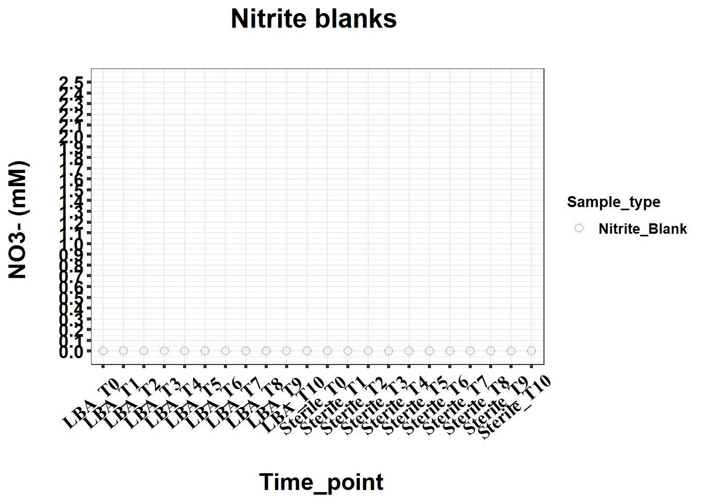
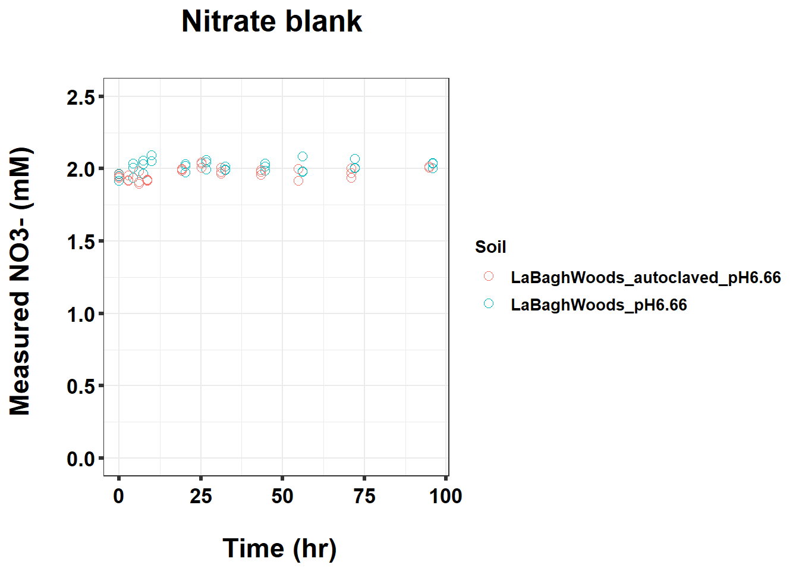
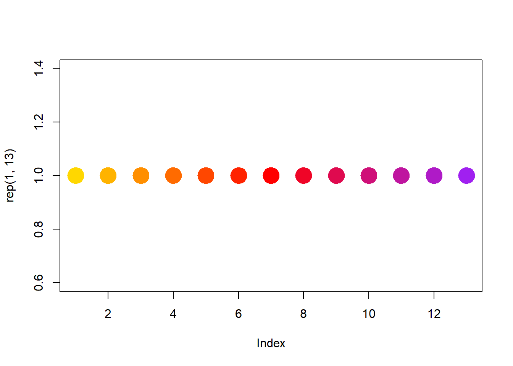
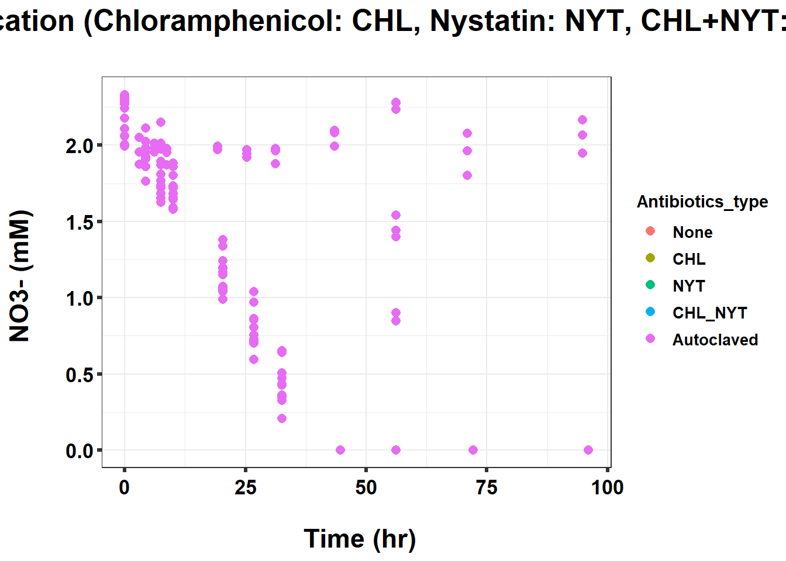

Last updated: 2022-06-08
Checks: 7 0
Knit directory: Denit_visualization_R/
This reproducible R Markdown analysis was created with workflowr (version 1.6.2). The Checks tab describes the reproducibility checks that were applied when the results were created. The Past versions tab lists the development history.
Great! Since the R Markdown file has been committed to the Git repository, you know the exact version of the code that produced these results.
Great job! The global environment was empty. Objects defined in the global environment can affect the analysis in your R Markdown file in unknown ways. For reproduciblity it’s best to always run the code in an empty environment.
The command set.seed(20210924) was run prior to running the code in the R Markdown file. Setting a seed ensures that any results that rely on randomness, e.g. subsampling or permutations, are reproducible.
Great job! Recording the operating system, R version, and package versions is critical for reproducibility.
Nice! There were no cached chunks for this analysis, so you can be confident that you successfully produced the results during this run.
Great job! Using relative paths to the files within your workflowr project makes it easier to run your code on other machines.
Great! You are using Git for version control. Tracking code development and connecting the code version to the results is critical for reproducibility.
The results in this page were generated with repository version 7905c93. See the Past versions tab to see a history of the changes made to the R Markdown and HTML files.
Note that you need to be careful to ensure that all relevant files for the analysis have been committed to Git prior to generating the results (you can use wflow_publish or wflow_git_commit). workflowr only checks the R Markdown file, but you know if there are other scripts or data files that it depends on. Below is the status of the Git repository when the results were generated:
Ignored files:
Ignored: .Rhistory
Ignored: .Rproj.user/
Untracked files:
Untracked: 211020_df_full_innate.xlsx
Untracked: 220421_Griess_antibiotics_experiment_to_kyle_remove_blanks.xlsx
Untracked: 220421_Griess_antibiotics_experiment_to_kyle_remove_blanks_add_pH.xlsx
Untracked: 220421_Griess_antibiotics_experiment_to_kyle_w_autoclaved.xlsx
Untracked: 220422_pH_Antibiotics_Sterile_experiment.xlsx
Untracked: 220519_Griess_antibiotics_experiment_to_kyle_w_autoclaved.xlsx
Untracked: 220521_pH_Antibiotics_dose_effect_experiment.xlsx
Untracked: data/120321_soil_buffering_capacity_Nichols-B.xlsx
Untracked: data/210911_TOC_sample_plate1.xlsx
Untracked: data/210922_Griess_sample_plate1-investigating.xlsx
Untracked: data/210922_Griess_sample_plate1.xlsx
Untracked: data/210927_TOC_sample_plate1_100ul.xlsx
Untracked: data/210927_TOC_sample_plate1_10ul.xlsx
Untracked: data/210928_Griess_sample_plate1.xlsx
Untracked: data/211005_Griess_sample_plate1.xlsx
Untracked: data/211007_Griess_blank_plate1.xlsx
Untracked: data/211007_Griess_blank_plate2.xlsx
Untracked: data/211008_Griess_blank_plate0.xlsx
Untracked: data/211008_Griess_blank_plate1.xlsx
Untracked: data/211017_Griess_plate0.xlsx
Untracked: data/211017_Griess_plate1.xlsx
Untracked: data/211017_Griess_plate2.xlsx
Untracked: data/211017_Griess_plate3.xlsx
Untracked: data/211017_Griess_plate4.xlsx
Untracked: data/211017_Griess_plate5.xlsx
Untracked: data/211017_Griess_plate6.xlsx
Untracked: data/211017_Griess_plate7.xlsx
Untracked: data/211017_Griess_plate8.xlsx
Untracked: data/211019_Griess_plate1.xlsx
Untracked: data/211020_Griess_plate0.xlsx
Untracked: data/211020_Griess_plate1.xlsx
Untracked: data/211020_df_full_innate.xlsx
Untracked: data/211025_Griess_no3_fit_plate0.xlsx
Untracked: data/211025_Griess_no3_fit_plate1.xlsx
Untracked: data/211025_Griess_plate0.xlsx
Untracked: data/211025_Griess_plate1.xlsx
Untracked: data/211028_Griess_plate1.xlsx
Untracked: data/211028_Griess_plate1_no3_fit.xlsx
Untracked: data/211028_Griess_plate2.xlsx
Untracked: data/211028_Griess_plate2_no3_fit.xlsx
Untracked: data/211028_Griess_plate3.xlsx
Untracked: data/211028_Griess_plate3_no3_fit.xlsx
Untracked: data/211028_Griess_plate4.xlsx
Untracked: data/211028_Griess_plate4_no3_fit.xlsx
Untracked: data/211028_time_table.xlsx
Untracked: data/211127_Griess_SUP1.xlsx
Untracked: data/211127_Griess_SUP11.xlsx
Untracked: data/211127_Griess_SUP3.xlsx
Untracked: data/211127_Griess_SUP5.xlsx
Untracked: data/211127_Griess_SUP7.xlsx
Untracked: data/211127_Griess_SUP9.xlsx
Untracked: data/211127_Griess_plate0.xlsx
Untracked: data/211127_time_table.xlsx
Untracked: data/211128_Ammonia_sample_plate10.xlsx
Untracked: data/211128_Ammonia_sample_plate11.xlsx
Untracked: data/211128_Griess_plate1.xlsx
Untracked: data/211128_Griess_plate10.xlsx
Untracked: data/211128_Griess_plate11.xlsx
Untracked: data/211128_Griess_plate2.xlsx
Untracked: data/211128_Griess_plate3.xlsx
Untracked: data/211128_Griess_plate4.xlsx
Untracked: data/211128_Griess_plate5.xlsx
Untracked: data/211128_Griess_plate6.xlsx
Untracked: data/211128_Griess_plate7.xlsx
Untracked: data/211128_Griess_plate8.xlsx
Untracked: data/211128_Griess_plate9.xlsx
Untracked: data/211128_time_table.xlsx
Untracked: data/211201_pH_colorimetric.xlsx
Untracked: data/211203_slurry_vs_water_drying_table.xlsx
Untracked: data/211203_slurry_vs_water_drying_time.xlsx
Untracked: data/211208_pH_colorimetric_T3.xlsx
Untracked: data/211208_pH_colorimetric_T4.xlsx
Untracked: data/211208_pH_colorimetric_T5.xlsx
Untracked: data/211208_pH_colorimetric_plate1.xlsx
Untracked: data/211208_pH_colorimetric_plate2.xlsx
Untracked: data/211208_pH_colorimetric_plate3.xlsx
Untracked: data/211208_time_table.xlsx
Untracked: data/211209_OD600_T1.xlsx
Untracked: data/211209_OD600_T2.xlsx
Untracked: data/211209_OD600_T3.xlsx
Untracked: data/211209_time_table.xlsx
Untracked: data/211210_pH_colorimetric_T0.xlsx
Untracked: data/211210_pH_colorimetric_T1.xlsx
Untracked: data/211210_pH_colorimetric_T2.xlsx
Untracked: data/211210_pH_colorimetric_T3.xlsx
Untracked: data/211210_time_table.xlsx
Untracked: data/211218_pH_colorimetric_t0.xlsx
Untracked: data/211218_pH_colorimetric_t1.xlsx
Untracked: data/211218_pH_colorimetric_t2.xlsx
Untracked: data/211218_pH_colorimetric_t3.xlsx
Untracked: data/211218_pH_colorimetric_t4.xlsx
Untracked: data/211218_time_table.xlsx
Untracked: data/211220_Griess_plate1.xlsx
Untracked: data/211220_Griess_plate10.xlsx
Untracked: data/211220_Griess_plate11.xlsx
Untracked: data/211220_Griess_plate2.xlsx
Untracked: data/211220_Griess_plate3.xlsx
Untracked: data/211220_Griess_plate4.xlsx
Untracked: data/211220_Griess_plate5.xlsx
Untracked: data/211220_Griess_plate6.xlsx
Untracked: data/211220_Griess_plate7.xlsx
Untracked: data/211220_Griess_plate8.xlsx
Untracked: data/211220_Griess_plate9.xlsx
Untracked: data/211220_time_table_AU.xlsx
Untracked: data/211220_time_table_BN.xlsx
Untracked: data/211224_TOC_sample_plate1.xlsx
Untracked: data/220103_Griess_T0.xlsx
Untracked: data/220103_Griess_T1.xlsx
Untracked: data/220103_Griess_T11.xlsx
Untracked: data/220103_Griess_T12.xlsx
Untracked: data/220103_Griess_T2.xlsx
Untracked: data/220103_Griess_T3.xlsx
Untracked: data/220103_Griess_T4.xlsx
Untracked: data/220103_Griess_T5.xlsx
Untracked: data/220103_Griess_T6.xlsx
Untracked: data/220103_Griess_T7.xlsx
Untracked: data/220103_Griess_T8.xlsx
Untracked: data/220103_Griess_T9.xlsx
Untracked: data/220103_time_table.xlsx
Untracked: data/220106_Ammonia_sample_plate1.xlsx
Untracked: data/220107-2_Ammonia_sample_plate1.xlsx
Untracked: data/220107-3_Ammonia_sample_plate1.xlsx
Untracked: data/220107-4_Ammonia_sample_plate1.xlsx
Untracked: data/220107-5_Ammonia_sample_plate1.xlsx
Untracked: data/220107-6_Ammonia_sample_plate1.xlsx
Untracked: data/220107-7_Ammonia_sample_plate1.xlsx
Untracked: data/220107-8_Ammonia_sample_plate1.xlsx
Untracked: data/220107-9_Ammonia_sample_plate1.xlsx
Untracked: data/220107_Ammonia_sample_plate1.xlsx
Untracked: data/220108_Ammonia_sample_plate1.xlsx
Untracked: data/220110_Ammonia_sample_plate1.xlsx
Untracked: data/220110_Ammonia_sample_plate2.xlsx
Untracked: data/220111_Ammonia_sample_T0.xlsx
Untracked: data/220111_Ammonia_sample_T1.xlsx
Untracked: data/220111_Ammonia_sample_T2.xlsx
Untracked: data/220111_Ammonia_sample_T3.xlsx
Untracked: data/220111_TOC_sample_plate1.xlsx
Untracked: data/220112_Ammonia_sample_T11.xlsx
Untracked: data/220112_Ammonia_sample_T12.xlsx
Untracked: data/220112_Ammonia_sample_T4.xlsx
Untracked: data/220112_Ammonia_sample_T5.xlsx
Untracked: data/220112_Ammonia_sample_T6.xlsx
Untracked: data/220112_Ammonia_sample_T7.xlsx
Untracked: data/220112_Ammonia_sample_T8.xlsx
Untracked: data/220112_Ammonia_sample_T9.xlsx
Untracked: data/220113_pH_colorimetric_T0.xlsx
Untracked: data/220113_pH_colorimetric_T12.xlsx
Untracked: data/220113_pH_colorimetric_T2.xlsx
Untracked: data/220113_pH_colorimetric_T3.xlsx
Untracked: data/220113_pH_colorimetric_T8.xlsx
Untracked: data/220125_pH_colorimetric_pH1_mu_opt0.099.xlsx
Untracked: data/220125_pH_colorimetric_pH1_using6.66.xlsx
Untracked: data/220125_pH_colorimetric_pH2_mu_opt0.099.xlsx
Untracked: data/220125_pH_colorimetric_pH2_using6.66.xlsx
Untracked: data/220125_time_table.xlsx
Untracked: data/220128_Ammonia_sample_plate1.xlsx
Untracked: data/220128_Ammonia_sample_plate2.xlsx
Untracked: data/220128_Ammonia_sample_plate3.xlsx
Untracked: data/220128_Ammonia_sample_plate4.xlsx
Untracked: data/220128_Ammonia_sample_plate5.xlsx
Untracked: data/220128_Ammonia_sample_plate6.xlsx
Untracked: data/220128_Griess_plate1.xlsx
Untracked: data/220128_Griess_plate2.xlsx
Untracked: data/220128_Griess_plate3.xlsx
Untracked: data/220128_Griess_plate4.xlsx
Untracked: data/220128_Griess_plate5.xlsx
Untracked: data/220128_Griess_plate6.xlsx
Untracked: data/220128_time_table.xlsx
Untracked: data/220131_Ammonia_sample_plate1.xlsx
Untracked: data/220131_Ammonia_sample_plate2.xlsx
Untracked: data/220131_Ammonia_sample_plate3.xlsx
Untracked: data/220131_Ammonia_sample_plate4.xlsx
Untracked: data/220131_Ammonia_sample_plate5.xlsx
Untracked: data/220131_Ammonia_sample_plate6.xlsx
Untracked: data/220131_Griess_plate1.xlsx
Untracked: data/220131_Griess_plate2.xlsx
Untracked: data/220131_Griess_plate3.xlsx
Untracked: data/220131_Griess_plate4.xlsx
Untracked: data/220131_Griess_plate5.xlsx
Untracked: data/220131_Griess_plate6.xlsx
Untracked: data/220131_pH_colorimetric_pH1_mu_opt_T0.xlsx
Untracked: data/220131_pH_colorimetric_pH2_mu_opt_T0.xlsx
Untracked: data/220131_time_table.xlsx
Untracked: data/220327_Griess_pastplate9.xlsx
Untracked: data/220327_Griess_plate1.xlsx
Untracked: data/220327_Griess_plate10.xlsx
Untracked: data/220327_Griess_plate11.xlsx
Untracked: data/220327_Griess_plate12.xlsx
Untracked: data/220327_Griess_plate13.xlsx
Untracked: data/220327_Griess_plate14.xlsx
Untracked: data/220327_Griess_plate15.xlsx
Untracked: data/220327_Griess_plate16.xlsx
Untracked: data/220327_Griess_plate2.xlsx
Untracked: data/220327_Griess_plate3.xlsx
Untracked: data/220327_Griess_plate4.xlsx
Untracked: data/220327_Griess_plate5.xlsx
Untracked: data/220327_Griess_plate6.xlsx
Untracked: data/220327_Griess_plate7.xlsx
Untracked: data/220327_Griess_plate8.xlsx
Untracked: data/220327_Griess_plate9.xlsx
Untracked: data/220327_time_table.xlsx
Untracked: data/220329_pH_colorimetric_pH1_mu_opt_T0.xlsx
Untracked: data/220329_pH_colorimetric_pH2_mu_opt_T0.xlsx
Untracked: data/220329_pH_colorimetric_pH3_mu_opt_T0.xlsx
Untracked: data/220329_pH_colorimetric_pH4_mu_opt_T0.xlsx
Untracked: data/220329_pH_colorimetric_pH6_mu_opt_T0.xlsx
Untracked: data/220329_pH_colorimetric_pH7_mu_opt_T0.xlsx
Untracked: data/220407_pH_colorimetric_pH3_half_mu_opt_T0.xlsx
Untracked: data/220407_pH_colorimetric_pH_base_treatment_mu_opt_T0.xlsx
Untracked: data/220407_pH_colorimetric_pH_standard_150ul_mu_opt_T0.xlsx
Untracked: data/220407_pH_colorimetric_pH_standard_300ul_mu_opt_T0.xlsx
Untracked: data/220407_pH_colorimetric_pH_standard_60ul_mu_opt_T0.xlsx
Untracked: data/220408_pH_colorimetric_pH_limit_mu_opt_water.xlsx
Untracked: data/220412_pH_colorimetric_pH_half_mu_opt_WW.xlsx
Untracked: data/220414_Ammonia_sample_plate0.xlsx
Untracked: data/220418_Ammonia_sample_plate0.xlsx
Untracked: data/220419_Ammonia_sample_plate0.xlsx
Untracked: data/220420-2_Ammonia_bcf.xlsx
Untracked: data/220420_Ammonia_sample_plate1.xlsx
Untracked: data/220420_Ammonia_sample_plate10.xlsx
Untracked: data/220420_Ammonia_sample_plate11.xlsx
Untracked: data/220420_Ammonia_sample_plate12.xlsx
Untracked: data/220420_Ammonia_sample_plate13.xlsx
Untracked: data/220420_Ammonia_sample_plate14.xlsx
Untracked: data/220420_Ammonia_sample_plate15.xlsx
Untracked: data/220420_Ammonia_sample_plate16.xlsx
Untracked: data/220420_Ammonia_sample_plate2.xlsx
Untracked: data/220420_Ammonia_sample_plate3.xlsx
Untracked: data/220420_Ammonia_sample_plate4.xlsx
Untracked: data/220420_Ammonia_sample_plate5.xlsx
Untracked: data/220420_Ammonia_sample_plate6.xlsx
Untracked: data/220420_Ammonia_sample_plate7.xlsx
Untracked: data/220420_Ammonia_sample_plate8.xlsx
Untracked: data/220420_Ammonia_sample_plate9.xlsx
Untracked: data/220421_Ammonia_df_a_bcf.xlsx
Untracked: data/220421_Ammonia_df_pH_range.xlsx
Untracked: data/220421_Ammonia_sample_plate1.xlsx
Untracked: data/220421_Ammonia_sample_plate10.xlsx
Untracked: data/220421_Ammonia_sample_plate11.xlsx
Untracked: data/220421_Ammonia_sample_plate2.xlsx
Untracked: data/220421_Ammonia_sample_plate3.xlsx
Untracked: data/220421_Ammonia_sample_plate4.xlsx
Untracked: data/220421_Ammonia_sample_plate5.xlsx
Untracked: data/220421_Ammonia_sample_plate6.xlsx
Untracked: data/220421_Ammonia_sample_plate7.xlsx
Untracked: data/220421_Ammonia_sample_plate8.xlsx
Untracked: data/220421_Ammonia_sample_plate9.xlsx
Untracked: data/220421_Ammonia_sterile.xlsx
Untracked: data/220421_Griess_antibiotics_experiment_to_kyle_remove_blanks.xlsx
Untracked: data/220421_Griess_antibiotics_experiment_to_kyle_remove_blanks_add_pH.xlsx
Untracked: data/220421_Griess_plate1.xlsx
Untracked: data/220421_Griess_plate10.xlsx
Untracked: data/220421_Griess_plate11.xlsx
Untracked: data/220421_Griess_plate2.xlsx
Untracked: data/220421_Griess_plate3.xlsx
Untracked: data/220421_Griess_plate4.xlsx
Untracked: data/220421_Griess_plate5.xlsx
Untracked: data/220421_Griess_plate6.xlsx
Untracked: data/220421_Griess_plate7.xlsx
Untracked: data/220421_Griess_plate8.xlsx
Untracked: data/220421_Griess_plate9.xlsx
Untracked: data/220421_nitrate_reduced_autoclaved_samples.xlsx
Untracked: data/220421_time_table.xlsx
Untracked: data/220422_pH_Antibiotics_Sterile_experiment.xlsx
Untracked: data/220422_pH_colorimetric_LBA_Sterile_T0_mu_opt_T0.xlsx
Untracked: data/220422_pH_colorimetric_LBA_Sterile_T4_mu_opt_T0.xlsx
Untracked: data/220422_pH_colorimetric_LBA_Sterile_T4_mu_opt_T4.xlsx
Untracked: data/220422_pH_colorimetric_LBA_Sterile_T7_mu_opt_T0.xlsx
Untracked: data/220422_pH_colorimetric_LBA_Sterile_T7_mu_opt_T7.xlsx
Untracked: data/220422_pH_colorimetric_LBA_Sterile_T9_mu_opt_T0.xlsx
Untracked: data/220422_pH_colorimetric_LBA_Sterile_T9_mu_opt_T9.xlsx
Untracked: data/220508_TOC_sample_plate1.xlsx
Untracked: data/220513_TOC_sample_plate1.xlsx
Untracked: data/220513_TOC_sample_plate2.xlsx
Untracked: data/220513_TOC_sample_plate3.xlsx
Untracked: data/220517_time_table.xlsx
Untracked: data/220519_Griess_antibiotics_dose_experiment_remove_blanks.xlsx
Untracked: data/220519_Griess_crerar7_extreme.xlsx
Untracked: data/220519_Griess_plate1.xlsx
Untracked: data/220519_Griess_plate10.xlsx
Untracked: data/220519_Griess_plate11.xlsx
Untracked: data/220519_Griess_plate2.xlsx
Untracked: data/220519_Griess_plate3.xlsx
Untracked: data/220519_Griess_plate4.xlsx
Untracked: data/220519_Griess_plate5.xlsx
Untracked: data/220519_Griess_plate6.xlsx
Untracked: data/220519_Griess_plate7.xlsx
Untracked: data/220519_Griess_plate8.xlsx
Untracked: data/220519_Griess_plate9.xlsx
Untracked: data/220519_time_table.xlsx
Untracked: data/220520_TOC_sample_plate1.xlsx
Untracked: data/220520_TOC_sample_plate2.xlsx
Untracked: data/220520_TOC_sample_plate3.xlsx
Untracked: data/220521_pH_Antibiotics_dose_effect_experiment.xlsx
Untracked: data/220521_pH_colorimetric_Barneveld2_Sterile_T0_mu_opt_T0.xlsx
Untracked: data/220521_pH_colorimetric_Barneveld2_Sterile_T10_mu_opt_T0.xlsx
Untracked: data/220521_pH_colorimetric_Barneveld2_Sterile_T7_mu_opt_T0.xlsx
Untracked: data/220526_TOC_sample_plate1.xlsx
Untracked: data/220527_TOC_sample_plate1.xlsx
Untracked: data/220601_TOC_sample_plate1.xlsx
Untracked: data/220602-2_TOC_sample_plate1.xlsx
Untracked: data/220602-2_control_OD600.xlsx
Untracked: data/220602-3_TOC_sample_plate1.xlsx
Untracked: data/220602-3_control_OD600.xlsx
Untracked: data/220602_TOC_sample_plate1.xlsx
Untracked: data/220603_100ul_OD600.xlsx
Untracked: data/220603_TOC_sample_plate1.xlsx
Untracked: data/220603_TOC_sample_plate2.xlsx
Untracked: data/220606_TOC_sample_plate1.xlsx
Untracked: data/220606_TOC_sample_plate2.xlsx
Untracked: data/ForKiseok_from_Dr_Cuhel.xlsx
Untracked: data/ForKiseok_from_Dr_Cuhel_format_edited.xlsx
Untracked: data/OD434_OD585_C_WB_T5_220329.xlsx
Untracked: data/OD434_OD585_WW_C_T0_220329.xlsx
Untracked: data/OD434_OD585_pH3_half_area_220407.xlsx
Untracked: data/OD434_OD585_pH_base_treated_T0_220407.xlsx
Untracked: data/OD434_OD585_pH_half_150ul_220412.xlsx
Untracked: data/SPNa_86437_021122_edit.xlsx
Untracked: data/SPNa_86437_021122_edit2.xlsx
Untracked: data/TOC_TN_measurement_2_labs_211014.xlsx
Untracked: data/dry_weight_curve(9.5.21).xlsx
Untracked: data/pH_data(11.17.21)-Midway_etc.xlsx
Untracked: data/pH_data(12.6.21)-Midway_incubation_endpoint.xlsx
Untracked: data/pH_data(9.14.21).xlsx
Untracked: data/pH_data(9.28.21).xlsx
Untracked: data/pH_standard_150ul_220407.xlsx
Untracked: data/pH_standard_300ul_220407.xlsx
Untracked: data/pH_standard_60ul_220407.xlsx
Untracked: data/~$220513_TOC_sample_plate1.xlsx
Untracked: data/~$SPNa_86437_021122_edit.xlsx
Untracked: past_figures/
Note that any generated files, e.g. HTML, png, CSS, etc., are not included in this status report because it is ok for generated content to have uncommitted changes.
These are the previous versions of the repository in which changes were made to the R Markdown (analysis/220421_Griess_antibiotics_and_sterile.Rmd) and HTML (docs/220421_Griess_antibiotics_and_sterile.html) files. If you’ve configured a remote Git repository (see ?wflow_git_remote), click on the hyperlinks in the table below to view the files as they were in that past version.
| File | Version | Author | Date | Message |
|---|---|---|---|---|
| Rmd | 7905c93 | KiseokUchicago | 2022-06-08 | wflow_publish("analysis/*.Rmd") |
Researcher: Kiseok Lee
Experiment Date: 4/14/22 - 4/18/22 (5 days)
Analysis Date: 4/24/22 Lab: Seppe Kuehn
# libraries
library(dplyr)Warning: package 'dplyr' was built under R version 4.0.5
Attaching package: 'dplyr'The following objects are masked from 'package:stats':
filter, lagThe following objects are masked from 'package:base':
intersect, setdiff, setequal, unionlibrary(ggplot2)Warning: package 'ggplot2' was built under R version 4.0.5library(RColorBrewer)
library(vegan)Loading required package: permuteLoading required package: latticeThis is vegan 2.5-7library(tidyverse)Warning: package 'tidyverse' was built under R version 4.0.5-- Attaching packages --------------------------------------- tidyverse 1.3.1 --v tibble 3.0.4 v purrr 0.3.4
v tidyr 1.1.3 v stringr 1.4.0
v readr 1.4.0 v forcats 0.5.1Warning: package 'tidyr' was built under R version 4.0.5-- Conflicts ------------------------------------------ tidyverse_conflicts() --
x dplyr::filter() masks stats::filter()
x dplyr::lag() masks stats::lag()library(magrittr)
Attaching package: 'magrittr'The following object is masked from 'package:purrr':
set_namesThe following object is masked from 'package:tidyr':
extractlibrary(readxl)
library(reshape2)
Attaching package: 'reshape2'The following object is masked from 'package:tidyr':
smithslibrary(gtools)
Attaching package: 'gtools'The following object is masked from 'package:permute':
permutelibrary(devtools)Warning: package 'devtools' was built under R version 4.0.5Loading required package: usethisWarning: package 'usethis' was built under R version 4.0.5
Attaching package: 'devtools'The following object is masked from 'package:permute':
checklibrary(openxlsx)
library(ape)Warning: package 'ape' was built under R version 4.0.5library(stringr)
library(tidyr)
library(ggrepel)Warning: package 'ggrepel' was built under R version 4.0.4library(ggpubr)Warning: package 'ggpubr' was built under R version 4.0.5
Attaching package: 'ggpubr'The following object is masked from 'package:ape':
rotaterequire(gridExtra)Loading required package: gridExtra
Attaching package: 'gridExtra'The following object is masked from 'package:dplyr':
combine# grid.arrange(p_strain, p_ai, nrow=1)
## theme for ggplot
mytheme <- theme_bw() +
theme(text = element_text(face="bold", colour = 'black')) +
theme(plot.title = element_text(size = 19,hjust = 0.5,face="bold", colour = 'black')) +
theme(axis.title.x = element_text(size = 17,hjust = 0.5,face="bold", colour = 'black')) +
theme(axis.title.y = element_text(size = 17,hjust = 0.5,face="bold", colour = 'black')) +
theme(axis.text.x = element_text(hjust = 0.5, vjust=0.3,size=13,face="bold", colour = 'black'))+
theme(axis.text.y = element_text(size=13,face="bold", colour = 'black'))+
theme(panel.grid.major = element_blank()) +
theme(panel.grid.minor = element_blank(),panel.background=element_blank(),panel.border=element_blank(),plot.background=element_blank()) +
theme(axis.ticks = element_line(size = 1.1))+
theme(legend.text=element_text(size=10,face="bold", colour = 'black'))
mytheme_2d <- theme_bw() +
theme(text = element_text(face="bold", colour = 'black')) +
theme(plot.title = element_text(size = 19,hjust = 0.5,face="bold", colour = 'black')) +
theme(axis.title.x = element_text(size = 17,hjust = 0.5,face="bold", colour = 'black')) +
theme(axis.title.y = element_text(size = 17,hjust = 0.5,face="bold", colour = 'black')) +
theme(axis.text.x = element_text(hjust = 0.5, vjust=0.3,size=13,face="bold", colour = 'black'))+
theme(axis.text.y = element_text(size=13,face="bold", colour = 'black'))+
# theme(panel.grid.major = element_blank()) +
# theme(panel.grid.minor = element_blank(),panel.background=element_blank(),plot.background=element_blank()) +
theme(axis.ticks = element_line(size = 1.1))+
theme(legend.text=element_text(size=10,face="bold", colour = 'black'))
# color collection
my_color_collection <- c(
"#CBD588", "#5F7FC7", "orange", "#AD6F3B", "#673770",
"#D14285", "#652926", "#C84248", "#8569D5", "#5E738F",
"#D1A33D", "#8A7C64", "#599861","#616163", "#FFCDB2",
"#6D9F71", "#242F40",
"#CCA43B", "#F92A82", "#ED7B84", "#7EB77F",
"#DEC4A1", "#E5D1D0", '#0E8482', '#C9DAEA', '#337357',
'#95C623', '#E55812', '#04471C', '#F2D7EE', '#D3BCC0',
'#A5668B', '#69306D', '#0E103D', '#1A535C', '#4ECDC4',
'#F7FFF7', '#FF6B6B', '#FFE66D', '#6699CC', '#FFF275',
'#FF8C42', '#FF3C38', '#A23E48', '#000000', '#CF5C36',
'#EEE5E9', '#7C7C7C', '#EFC88B', '#2E5266', '#6E8898',
'#9FB1BC', '#D3D0CB', '#E2C044', '#5BC0EB', '#FDE74C',
'#9BC53D', '#E55934', '#FA7921', "#CD9BCD", "#508578", "#DA5724")
# for git push, use this instead of using wflow_git_push()
# git push -u origin master (in the Git app / in the working directory)
# for making pdf file
library(rmarkdown)Warning: package 'rmarkdown' was built under R version 4.0.5# render("analysis/~~.Rmd", "pdf_document")We are going to use the vcl3 treated standard curve that is fitted with pure nitrate standards
# import file
df_plate1 <- openxlsx::read.xlsx("data/220421_Griess_plate1.xlsx")
df_plate2 <- openxlsx::read.xlsx("data/220421_Griess_plate2.xlsx")
df_plate3 <- openxlsx::read.xlsx("data/220421_Griess_plate3.xlsx")
df_plate4 <- openxlsx::read.xlsx("data/220421_Griess_plate4.xlsx")
df_plate5 <- openxlsx::read.xlsx("data/220421_Griess_plate5.xlsx")
df_plate6 <- openxlsx::read.xlsx("data/220421_Griess_plate6.xlsx")
df_plate7 <- openxlsx::read.xlsx("data/220421_Griess_plate7.xlsx")
df_plate8 <- openxlsx::read.xlsx("data/220421_Griess_plate8.xlsx")
df_plate9 <- openxlsx::read.xlsx("data/220421_Griess_plate9.xlsx")
df_plate10 <- openxlsx::read.xlsx("data/220421_Griess_plate10.xlsx")
df_plate11 <- openxlsx::read.xlsx("data/220421_Griess_plate11.xlsx")
# df_plate12 <- openxlsx::read.xlsx("data/220421_Griess_plate12.xlsx")
# df_plate13 <- openxlsx::read.xlsx("data/220421_Griess_plate13.xlsx")
# df_plate14 <- openxlsx::read.xlsx("data/220421_Griess_plate14.xlsx")
# df_plate15 <- openxlsx::read.xlsx("data/220421_Griess_plate15.xlsx")
# df_plate16 <- openxlsx::read.xlsx("data/220421_Griess_plate16.xlsx")
head(df_plate1) Well Nitrite_input Nitrate_input Ammonium_input Soil
1 A01 0 2 0 LaBaghWoods_pH6.66
2 A02 0 2 0 LaBaghWoods_pH6.66
3 A03 0 2 0 LaBaghWoods_pH6.66
4 A04 0 2 0 LaBaghWoods_pH6.66
5 A05 0 2 0 LaBaghWoods_pH6.66
6 A06 0 2 0 LaBaghWoods_pH6.66
Sample_type Titration_type Antibiotics_type Unit Concentration_M Added_ul
1 Slurry HCl CHL 2 1 20
2 Slurry HCl CHL 6 3 20
3 Slurry NaOH CHL 2 1 20
4 Slurry NaOH CHL 6 3 20
5 Slurry HCl CHL 0 0 20
6 Slurry HCl CHL 0 0 20
Time_point NO2_OD540 NO2NO3_OD540 NO2_mM NO2NO3_mM NO3_mM
1 LBA_T0 0.00430 0.86470 0.004341071 0.8055666 0.8012255
2 LBA_T0 0.00375 0.89920 0.004056146 0.8407224 0.8366662
3 LBA_T0 0.01160 0.83550 0.008124078 0.7759891 0.7678650
4 LBA_T0 0.01885 0.82070 0.011883516 0.7610589 0.7491754
5 LBA_T0 0.00260 0.84035 0.003460436 0.7808906 0.7774302
6 LBA_T0 0.00100 0.77845 0.002631720 0.7186605 0.7160288colnames(df_plate1) [1] "Well" "Nitrite_input" "Nitrate_input" "Ammonium_input"
[5] "Soil" "Sample_type" "Titration_type" "Antibiotics_type"
[9] "Unit" "Concentration_M" "Added_ul" "Time_point"
[13] "NO2_OD540" "NO2NO3_OD540" "NO2_mM" "NO2NO3_mM"
[17] "NO3_mM" dim(df_plate1)[1] 96 17head(df_plate2) Well Nitrite_input Nitrate_input Ammonium_input Soil
1 A01 0 2 0 LaBaghWoods_pH6.66
2 A02 0 2 0 LaBaghWoods_pH6.66
3 A03 0 2 0 LaBaghWoods_pH6.66
4 A04 0 2 0 LaBaghWoods_pH6.66
5 A05 0 2 0 LaBaghWoods_pH6.66
6 A06 0 2 0 LaBaghWoods_pH6.66
Sample_type Titration_type Antibiotics_type Unit Concentration_M Added_ul
1 Slurry HCl CHL 2 1 20
2 Slurry HCl CHL 6 3 20
3 Slurry NaOH CHL 2 1 20
4 Slurry NaOH CHL 6 3 20
5 Slurry HCl CHL 0 0 20
6 Slurry HCl CHL 0 0 20
Time_point NO2_OD540 NO2NO3_OD540 NO2_mM NO2NO3_mM NO3_mM
1 LBA_T1 0.00145 0.8414 0.002864785 0.7819524 0.7790876
2 LBA_T1 0.00060 0.8387 0.002424559 0.7792226 0.7767980
3 LBA_T1 0.00780 0.7688 0.006154547 0.7090224 0.7028678
4 LBA_T1 0.01720 0.7431 0.011027715 0.6834359 0.6724081
5 LBA_T1 0.00945 0.7717 0.007009659 0.7119170 0.7049074
6 LBA_T1 0.00890 0.7706 0.006724608 0.7108189 0.7040942colnames(df_plate2) [1] "Well" "Nitrite_input" "Nitrate_input" "Ammonium_input"
[5] "Soil" "Sample_type" "Titration_type" "Antibiotics_type"
[9] "Unit" "Concentration_M" "Added_ul" "Time_point"
[13] "NO2_OD540" "NO2NO3_OD540" "NO2_mM" "NO2NO3_mM"
[17] "NO3_mM" dim(df_plate2)[1] 96 17head(df_plate3) Well Nitrite_input Nitrate_input Ammonium_input Soil
1 A01 0 2 0 LaBaghWoods_pH6.66
2 A02 0 2 0 LaBaghWoods_pH6.66
3 A03 0 2 0 LaBaghWoods_pH6.66
4 A04 0 2 0 LaBaghWoods_pH6.66
5 A05 0 2 0 LaBaghWoods_pH6.66
6 A06 0 2 0 LaBaghWoods_pH6.66
Sample_type Titration_type Antibiotics_type Unit Concentration_M Added_ul
1 Slurry HCl CHL 2 1 20
2 Slurry HCl CHL 6 3 20
3 Slurry NaOH CHL 2 1 20
4 Slurry NaOH CHL 6 3 20
5 Slurry HCl CHL 0 0 20
6 Slurry HCl CHL 0 0 20
Time_point NO2_OD540 NO2NO3_OD540 NO2_mM NO2NO3_mM NO3_mM
1 LBA_T2 0.01475 0.86050 0.009757202 0.8013024 0.7915452
2 LBA_T2 0.00160 0.79500 0.002942475 0.7352296 0.7322871
3 LBA_T2 0.09950 0.66995 0.053862716 0.6112481 0.5573854
4 LBA_T2 0.05880 0.72585 0.032641379 0.6663282 0.6336868
5 LBA_T2 0.05515 0.71555 0.030741887 0.6561383 0.6253964
6 LBA_T2 0.06015 0.86780 0.033344083 0.8087162 0.7753721colnames(df_plate3) [1] "Well" "Nitrite_input" "Nitrate_input" "Ammonium_input"
[5] "Soil" "Sample_type" "Titration_type" "Antibiotics_type"
[9] "Unit" "Concentration_M" "Added_ul" "Time_point"
[13] "NO2_OD540" "NO2NO3_OD540" "NO2_mM" "NO2NO3_mM"
[17] "NO3_mM" dim(df_plate3)[1] 96 17head(df_plate4) Well Nitrite_input Nitrate_input Ammonium_input Soil
1 A01 0 2 0 LaBaghWoods_pH6.66
2 A02 0 2 0 LaBaghWoods_pH6.66
3 A03 0 2 0 LaBaghWoods_pH6.66
4 A04 0 2 0 LaBaghWoods_pH6.66
5 A05 0 2 0 LaBaghWoods_pH6.66
6 A06 0 2 0 LaBaghWoods_pH6.66
Sample_type Titration_type Antibiotics_type Unit Concentration_M Added_ul
1 Slurry HCl CHL 2 1 20
2 Slurry HCl CHL 6 3 20
3 Slurry NaOH CHL 2 1 20
4 Slurry NaOH CHL 6 3 20
5 Slurry HCl CHL 0 0 20
6 Slurry HCl CHL 0 0 20
Time_point NO2_OD540 NO2NO3_OD540 NO2_mM NO2NO3_mM NO3_mM
1 LBA_T3 0.02445 0.79685 0.014788959 0.7370848 0.7222959
2 LBA_T3 0.00040 0.80785 0.002320981 0.7481290 0.7458080
3 LBA_T3 0.18255 0.72250 0.097400023 0.6630119 0.5656119
4 LBA_T3 0.09480 0.75955 0.051408267 0.6997995 0.6483913
5 LBA_T3 0.10640 0.73845 0.057467875 0.6788190 0.6213512
6 LBA_T3 0.10190 0.81120 0.055116439 0.7514969 0.6963805colnames(df_plate4) [1] "Well" "Nitrite_input" "Nitrate_input" "Ammonium_input"
[5] "Soil" "Sample_type" "Titration_type" "Antibiotics_type"
[9] "Unit" "Concentration_M" "Added_ul" "Time_point"
[13] "NO2_OD540" "NO2NO3_OD540" "NO2_mM" "NO2NO3_mM"
[17] "NO3_mM" dim(df_plate4)[1] 96 17head(df_plate5) Well Nitrite_input Nitrate_input Ammonium_input Soil
1 A01 0 2 0 LaBaghWoods_pH6.66
2 A02 0 2 0 LaBaghWoods_pH6.66
3 A03 0 2 0 LaBaghWoods_pH6.66
4 A04 0 2 0 LaBaghWoods_pH6.66
5 A05 0 2 0 LaBaghWoods_pH6.66
6 A06 0 2 0 LaBaghWoods_pH6.66
Sample_type Titration_type Antibiotics_type Unit Concentration_M Added_ul
1 Slurry HCl CHL 2 1 20
2 Slurry HCl CHL 6 3 20
3 Slurry NaOH CHL 2 1 20
4 Slurry NaOH CHL 6 3 20
5 Slurry HCl CHL 0 0 20
6 Slurry HCl CHL 0 0 20
Time_point NO2_OD540 NO2NO3_OD540 NO2_mM NO2NO3_mM NO3_mM
1 LBA_T4 0.05970 0.59795 0.03310984 0.5410917 0.5079819
2 LBA_T4 0.00000 0.60820 0.00211383 0.5510262 0.5489124
3 LBA_T4 0.46855 0.64370 0.24982559 0.5855690 0.3357435
4 LBA_T4 0.26555 0.72755 0.14123109 0.6680118 0.5267807
5 LBA_T4 0.33120 0.66180 0.17613115 0.6032628 0.4271317
6 LBA_T4 0.29225 0.64230 0.15540013 0.5842028 0.4288026colnames(df_plate5) [1] "Well" "Nitrite_input" "Nitrate_input" "Ammonium_input"
[5] "Soil" "Sample_type" "Titration_type" "Antibiotics_type"
[9] "Unit" "Concentration_M" "Added_ul" "Time_point"
[13] "NO2_OD540" "NO2NO3_OD540" "NO2_mM" "NO2NO3_mM"
[17] "NO3_mM" dim(df_plate5)[1] 96 17head(df_plate6) Well Nitrite_input Nitrate_input Ammonium_input Soil
1 A01 0 2 0 LaBaghWoods_pH6.66
2 A02 0 2 0 LaBaghWoods_pH6.66
3 A03 0 2 0 LaBaghWoods_pH6.66
4 A04 0 2 0 LaBaghWoods_pH6.66
5 A05 0 2 0 LaBaghWoods_pH6.66
6 A06 0 2 0 LaBaghWoods_pH6.66
Sample_type Titration_type Antibiotics_type Unit Concentration_M Added_ul
1 Slurry HCl CHL 2 1 20
2 Slurry HCl CHL 6 3 20
3 Slurry NaOH CHL 2 1 20
4 Slurry NaOH CHL 6 3 20
5 Slurry HCl CHL 0 0 20
6 Slurry HCl CHL 0 0 20
Time_point NO2_OD540 NO2NO3_OD540 NO2_mM NO2NO3_mM NO3_mM
1 LBA_T5 0.05190 0.57755 0.029051062 0.5213712 0.4923201
2 LBA_T5 0.00200 0.73200 0.003149654 0.6724214 0.6692717
3 LBA_T5 0.49880 0.53510 0.266182033 0.4805523 0.2143703
4 LBA_T5 0.30015 0.66705 0.159598995 0.6084054 0.4488064
5 LBA_T5 0.36560 0.51270 0.194501382 0.4591297 0.2646283
6 LBA_T5 0.37645 0.56970 0.200307428 0.5138008 0.3134934colnames(df_plate6) [1] "Well" "Nitrite_input" "Nitrate_input" "Ammonium_input"
[5] "Soil" "Sample_type" "Titration_type" "Antibiotics_type"
[9] "Unit" "Concentration_M" "Added_ul" "Time_point"
[13] "NO2_OD540" "NO2NO3_OD540" "NO2_mM" "NO2NO3_mM"
[17] "NO3_mM" dim(df_plate6)[1] 96 17head(df_plate7) Well Nitrite_input Nitrate_input Ammonium_input Soil
1 A01 0 2 0 LaBaghWoods_pH6.66
2 A02 0 2 0 LaBaghWoods_pH6.66
3 A03 0 2 0 LaBaghWoods_pH6.66
4 A04 0 2 0 LaBaghWoods_pH6.66
5 A05 0 2 0 LaBaghWoods_pH6.66
6 A06 0 2 0 LaBaghWoods_pH6.66
Sample_type Titration_type Antibiotics_type Unit Concentration_M Added_ul
1 Slurry HCl CHL 2 1 20
2 Slurry HCl CHL 6 3 20
3 Slurry NaOH CHL 2 1 20
4 Slurry NaOH CHL 6 3 20
5 Slurry HCl CHL 0 0 20
6 Slurry HCl CHL 0 0 20
Time_point NO2_OD540 NO2NO3_OD540 NO2_mM NO2NO3_mM NO3_mM
1 LBA_T6 0.07220 0.48415 0.039619996 0.4319404 0.39232036
2 LBA_T6 0.00470 0.69890 0.004548298 0.6397056 0.63515729
3 LBA_T6 0.68060 0.48830 0.365472494 0.4358846 0.07041214
4 LBA_T6 0.36405 0.59190 0.193672416 0.5352361 0.34156367
5 LBA_T6 0.46630 0.41405 0.248610835 0.3657172 0.11710634
6 LBA_T6 0.47110 0.47085 0.251202620 0.4193178 0.16811514colnames(df_plate7) [1] "Well" "Nitrite_input" "Nitrate_input" "Ammonium_input"
[5] "Soil" "Sample_type" "Titration_type" "Antibiotics_type"
[9] "Unit" "Concentration_M" "Added_ul" "Time_point"
[13] "NO2_OD540" "NO2NO3_OD540" "NO2_mM" "NO2NO3_mM"
[17] "NO3_mM" dim(df_plate7)[1] 96 17head(df_plate8) Well Nitrite_input Nitrate_input Ammonium_input Soil
1 A01 0 2 0 LaBaghWoods_pH6.66
2 A02 0 2 0 LaBaghWoods_pH6.66
3 A03 0 2 0 LaBaghWoods_pH6.66
4 A04 0 2 0 LaBaghWoods_pH6.66
5 A05 0 2 0 LaBaghWoods_pH6.66
6 A06 0 2 0 LaBaghWoods_pH6.66
Sample_type Titration_type Antibiotics_type Unit Concentration_M Added_ul
1 Slurry HCl CHL 2 1 20
2 Slurry HCl CHL 6 3 20
3 Slurry NaOH CHL 2 1 20
4 Slurry NaOH CHL 6 3 20
5 Slurry HCl CHL 0 0 20
6 Slurry HCl CHL 0 0 20
Time_point NO2_OD540 NO2NO3_OD540 NO2_mM NO2NO3_mM NO3_mM
1 LBA_T7 0.00360 0.00000 0.003978441 0.0000000 0.0000000
2 LBA_T7 0.00470 0.59710 0.004548298 0.5402687 0.5357204
3 LBA_T7 0.59260 0.31575 0.317196723 0.2740963 0.0000000
4 LBA_T7 0.45125 0.50195 0.240491992 0.4488770 0.2083850
5 LBA_T7 0.28630 0.15655 0.152239669 0.1286372 0.0000000
6 LBA_T7 0.39420 0.21675 0.209818224 0.1832289 0.0000000colnames(df_plate8) [1] "Well" "Nitrite_input" "Nitrate_input" "Ammonium_input"
[5] "Soil" "Sample_type" "Titration_type" "Antibiotics_type"
[9] "Unit" "Concentration_M" "Added_ul" "Time_point"
[13] "NO2_OD540" "NO2NO3_OD540" "NO2_mM" "NO2NO3_mM"
[17] "NO3_mM" dim(df_plate8)[1] 96 17head(df_plate9) Well Nitrite_input Nitrate_input Ammonium_input Soil
1 A01 0 2 0 LaBaghWoods_pH6.66
2 A02 0 2 0 LaBaghWoods_pH6.66
3 A03 0 2 0 LaBaghWoods_pH6.66
4 A04 0 2 0 LaBaghWoods_pH6.66
5 A05 0 2 0 LaBaghWoods_pH6.66
6 A06 0 2 0 LaBaghWoods_pH6.66
Sample_type Titration_type Antibiotics_type Unit Concentration_M Added_ul
1 Slurry HCl CHL 2 1 20
2 Slurry HCl CHL 6 3 20
3 Slurry NaOH CHL 2 1 20
4 Slurry NaOH CHL 6 3 20
5 Slurry HCl CHL 0 0 20
6 Slurry HCl CHL 0 0 20
Time_point NO2_OD540 NO2NO3_OD540 NO2_mM NO2NO3_mM NO3_mM
1 LBA_T8 0.05570 0.58555 0.03102807 0.5290966 0.4980685
2 LBA_T8 0.03470 0.54075 0.02011058 0.4859685 0.4658579
3 LBA_T8 0.05055 0.53110 0.02834886 0.4767210 0.4483721
4 LBA_T8 0.04435 0.60990 0.02512497 0.5526756 0.5275506
5 LBA_T8 0.04675 0.63915 0.02637272 0.5811299 0.5547572
6 LBA_T8 0.04965 0.58815 0.02788077 0.5316096 0.5037288colnames(df_plate9) [1] "Well" "Nitrite_input" "Nitrate_input" "Ammonium_input"
[5] "Soil" "Sample_type" "Titration_type" "Antibiotics_type"
[9] "Unit" "Concentration_M" "Added_ul" "Time_point"
[13] "NO2_OD540" "NO2NO3_OD540" "NO2_mM" "NO2NO3_mM"
[17] "NO3_mM" dim(df_plate9)[1] 96 17head(df_plate10) Well Nitrite_input Nitrate_input Ammonium_input Soil
1 A01 0 2 0 LaBaghWoods_pH6.66
2 A02 0 2 0 LaBaghWoods_pH6.66
3 A03 0 2 0 LaBaghWoods_pH6.66
4 A04 0 2 0 LaBaghWoods_pH6.66
5 A05 0 2 0 LaBaghWoods_pH6.66
6 A06 0 2 0 LaBaghWoods_pH6.66
Sample_type Titration_type Antibiotics_type Unit Concentration_M Added_ul
1 Slurry HCl CHL 2 1 20
2 Slurry HCl CHL 6 3 20
3 Slurry NaOH CHL 2 1 20
4 Slurry NaOH CHL 6 3 20
5 Slurry HCl CHL 0 0 20
6 Slurry HCl CHL 0 0 20
Time_point NO2_OD540 NO2NO3_OD540 NO2_mM NO2NO3_mM NO3_mM
1 LBA_T9 0.11950 0.05945 0.064318416 0.04159994 0.00000000
2 LBA_T9 0.00170 0.51765 0.002994269 0.46385684 0.46086257
3 LBA_T9 0.07885 0.03225 0.043086271 0.01743783 0.00000000
4 LBA_T9 0.69515 0.45020 0.373493939 0.39977380 0.02627986
5 LBA_T9 0.00710 0.00000 0.005791808 0.00000000 0.00000000
6 LBA_T9 0.01100 0.00000 0.007813057 0.00000000 0.00000000colnames(df_plate10) [1] "Well" "Nitrite_input" "Nitrate_input" "Ammonium_input"
[5] "Soil" "Sample_type" "Titration_type" "Antibiotics_type"
[9] "Unit" "Concentration_M" "Added_ul" "Time_point"
[13] "NO2_OD540" "NO2NO3_OD540" "NO2_mM" "NO2NO3_mM"
[17] "NO3_mM" dim(df_plate10)[1] 96 17head(df_plate11) Well Nitrite_input Nitrate_input Ammonium_input Soil
1 A01 0 2 0 LaBaghWoods_pH6.66
2 A02 0 2 0 LaBaghWoods_pH6.66
3 A03 0 2 0 LaBaghWoods_pH6.66
4 A04 0 2 0 LaBaghWoods_pH6.66
5 A05 0 2 0 LaBaghWoods_pH6.66
6 A06 0 2 0 LaBaghWoods_pH6.66
Sample_type Titration_type Antibiotics_type Unit Concentration_M Added_ul
1 Slurry HCl CHL 2 1 20
2 Slurry HCl CHL 6 3 20
3 Slurry NaOH CHL 2 1 20
4 Slurry NaOH CHL 6 3 20
5 Slurry HCl CHL 0 0 20
6 Slurry HCl CHL 0 0 20
Time_point NO2_OD540 NO2NO3_OD540 NO2_mM NO2NO3_mM NO3_mM
1 LBA_T10 0.00120 0.00000 0.002735303 0.0000000 0.0000000
2 LBA_T10 0.00155 0.57845 0.002916578 0.5222398 0.5193232
3 LBA_T10 0.01165 0.00000 0.008149997 0.0000000 0.0000000
4 LBA_T10 0.80215 0.43055 0.432834504 0.3812370 0.0000000
5 LBA_T10 0.00805 0.00000 0.006284101 0.0000000 0.0000000
6 LBA_T10 0.00980 0.00000 0.007191062 0.0000000 0.0000000colnames(df_plate11) [1] "Well" "Nitrite_input" "Nitrate_input" "Ammonium_input"
[5] "Soil" "Sample_type" "Titration_type" "Antibiotics_type"
[9] "Unit" "Concentration_M" "Added_ul" "Time_point"
[13] "NO2_OD540" "NO2NO3_OD540" "NO2_mM" "NO2NO3_mM"
[17] "NO3_mM" dim(df_plate11)[1] 96 17# head(df_plate16)
# colnames(df_plate16)
# dim(df_plate16)
# X1 to Well
# df_plate1 %<>% rename(Well = X1)
# df_plate2 %<>% rename(Well = X1)
# df_plate3 %<>% rename(Well = X1)
# df_plate4 %<>% rename(Well = X1)
# df_plate5 %<>% rename(Well = X1)
# df_plate6 %<>% rename(Well = X1)
# df_plate7 %<>% rename(Well = X1)
# df_plate8 %<>% rename(Well = X1)
# df_plate9 %<>% rename(Well = X1)
# df_plate10 %<>% rename(Well = X1)
# df_plate11 %<>% rename(Well = X1)
# df_plate12 %<>% rename(Well = X1)
# df_plate13 %<>% rename(Well = X1)
# df_plate14 %<>% rename(Well = X1)
# df_plate15 %<>% rename(Well = X1)
# df_plate16 %<>% rename(Well = X1)
# remove wells that were contaminated during the experiment
df_plate2 %<>% filter(!(Well %in% c("D02", "D03"))) # filter defect
df_plate4 %<>% filter(!(Well %in% c("H05"))) # filter defect
df_plate5 %<>% filter(!(Well %in% c("B03", "B04", "C03"))) # filter defect
df_plate8 %<>% filter(!(Well %in% c("A01", "A09"))) # filter defect
df_plate9 %<>% filter(!(Well %in% c("D11"))) # NA detected below...
df_plate11 %<>% filter(!(Well %in% c("A12"))) # filter defect
# bind two dataframe
df_p <- rbind(df_plate1, df_plate2, df_plate3, df_plate4, df_plate5, df_plate6, df_plate7, df_plate8, df_plate9, df_plate10, df_plate11)
# df_plate12, df_plate13, df_plate14, df_plate15, df_plate16)
dim(df_p)[1] 1046 17# remove NA
dim(df_p) # 1046[1] 1046 17df_p[is.na(df_p)]character(0)df_na <- df_p[rowSums(is.na(df_p)) > 0,] # D11 in plate9 has NA. Let's remove from the wells above.
# df_p <- na.omit(df_p)
df_p <- df_p[rowSums(is.na(df_p)) == 0,]
dim(df_p) # 1046[1] 1046 17# multiply dilution factor which is 5/2
# df_p %<>% select(-NO2_OD540, -NO2NO3_OD540)
df_p %<>% mutate(NO2_mM = NO2_mM * (5/2), NO2NO3_mM = NO2NO3_mM * (5/2), NO3_mM = NO3_mM * (5/2))
# Get the metadata for time point and left join
Time_table <- openxlsx::read.xlsx("data/220421_time_table.xlsx")
# Time_table_BN <- openxlsx::read.xlsx("data/220421_time_table_BN.xlsx")
# Time_table <- rbind(Time_table_AU, Time_table_BN)
Time_table %<>% select(-Date)
Time_table$Time_hours <- round(Time_table$Time_hours, 1)
Time_table$Time_days <- round(Time_table$Time_days, 1)
df_time <- Time_table
dim(df_p)[1] 1046 17df_p <- df_p %>% left_join(Time_table, by=("Time_point"="Time_point"))
dim(df_p)[1] 1046 20colnames(df_p) [1] "Well" "Nitrite_input" "Nitrate_input" "Ammonium_input"
[5] "Soil" "Sample_type" "Titration_type" "Antibiotics_type"
[9] "Unit" "Concentration_M" "Added_ul" "Time_point"
[13] "NO2_OD540" "NO2NO3_OD540" "NO2_mM" "NO2NO3_mM"
[17] "NO3_mM" "Time_minutes" "Time_hours" "Time_days" # time_point order
df_p$Time_point <- factor(df_p$Time_point, levels = c(paste0("LBA_T",0:10), paste0("Sterile_T",0:10)))# plot to see
ggplot(df_p, aes(x=Time_point, y=NO3_mM, color=Sample_type, group=Sample_type)) +
geom_point(size=2.5, shape=21) +
# geom_line(size=1)+
scale_fill_brewer(palette='Set2') +
ylab("NO3- (mM) \n") +
xlab("\n Time_point") +
# scale_y_continuous(breaks = seq(0,0.3,0.05), limits=c(0, 0.3))+
ggtitle("Without averaging \n") +
mytheme_2d +
theme(axis.text.x = element_text(hjust = 0.8, vjust=0.8, size=13, family="serif", angle = 40))# plot to see
ggplot(df_p, aes(x=Time_point, y=NO2_mM, color=Sample_type, group=Sample_type)) +
geom_point(size=2.5, shape=21) +
# geom_line(size=1)+
scale_fill_brewer(palette='Set2') +
ylab("NO2- (mM) \n") +
xlab("\n Time_point") +
# scale_y_continuous(breaks = seq(0,0.3,0.05), limits=c(0, 0.3))+
ggtitle("Without averaging \n") +
mytheme_2d+
theme(axis.text.x = element_text(hjust = 0.8, vjust=0.8, size=13, family="serif", angle = 40))# let's plot the no nitrate sample's nitrate, nitrite levels
df_no_nitrite <- df_p %>% filter(Sample_type == "No_Nitrate")
ggplot(df_no_nitrite, aes(x=Time_point, y=NO3_mM, color=Sample_type, group=Sample_type)) +
geom_point(size=2.5, shape=21) +
# geom_line(size=1)+
scale_fill_brewer(palette='Set2') +
ylab("NO3- (mM) \n") +
xlab("\n Time_point") +
# scale_y_continuous(breaks = seq(0,0.5,0.05), limits=c(0, 0.5))+
ggtitle("Samples without nitrate addition \n") +
mytheme_2d +
theme(axis.text.x = element_text(hjust = 0.8, vjust=0.8, size=13, family="serif", angle = 40))ggplot(df_no_nitrite, aes(x=Time_point, y=NO2_mM, color=Sample_type, group=Sample_type)) +
geom_point(size=2.5, shape=21) +
# geom_line(size=1)+
scale_fill_brewer(palette='Set2') +
ylab("NO2- (mM) \n") +
xlab("\n Time_point") +
scale_y_continuous(breaks = seq(0,0.3,0.05), limits=c(0, 0.3))+
ggtitle("Samples without nitrate addition \n") +
mytheme_2d+
theme(axis.text.x = element_text(hjust = 0.8, vjust=0.8, size=13, family="serif", angle = 40))# T8 is weird
# how about blanks?
# let's plot the blank sample's nitrate, nitrite levels
df_A_blank <- df_p %>% filter(Sample_type == "Nitrate_Blank")
ggplot(df_A_blank, aes(x=Time_point, y=NO3_mM, color=Sample_type, group=Sample_type)) +
geom_point(size=2.5, shape=21) +
# geom_line(size=1)+
scale_fill_brewer(palette='Set2') +
ylab("NO3- (mM) \n") +
xlab("\n Time_point") +
scale_y_continuous(breaks = seq(0,2.5,0.1), limits=c(0, 2.5))+
ggtitle("Nitrate blanks \n") +
mytheme_2d +
theme(axis.text.x = element_text(hjust = 0.8, vjust=0.8, size=13, family="serif", angle = 40))ggplot(df_A_blank, aes(x=Time_point, y=NO2_mM, color=Sample_type, group=Sample_type)) +
geom_point(size=2.5, shape=21) +
# geom_line(size=1)+
scale_fill_brewer(palette='Set2') +
ylab("NO2- (mM) \n") +
xlab("\n Time_point") +
scale_y_continuous(breaks = seq(0,0.3,0.05), limits=c(0, 0.3))+
ggtitle("Nitrate blanks \n") +
mytheme_2d+
theme(axis.text.x = element_text(hjust = 0.8, vjust=0.8, size=13, family="serif", angle = 40))# let's plot the Nitrite blank sample's nitrate, nitrite levels
df_I_blank <- df_p %>% filter(Sample_type == "Nitrite_Blank")
ggplot(df_I_blank, aes(x=Time_point, y=NO3_mM, color=Sample_type, group=Sample_type)) +
geom_point(size=2.5, shape=21) +
# geom_line(size=1)+
scale_fill_brewer(palette='Set2') +
ylab("NO3- (mM) \n") +
xlab("\n Time_point") +
scale_y_continuous(breaks = seq(0,2.5,0.1), limits=c(0, 2.5))+
ggtitle("Nitrite blanks \n") +
mytheme_2d +
theme(axis.text.x = element_text(hjust = 0.8, vjust=0.8, size=13, family="serif", angle = 40))
ggplot(df_I_blank, aes(x=Time_point, y=NO2_mM, color=Sample_type, group=Sample_type)) +
geom_point(size=2.5, shape=21) +
# geom_line(size=1)+
scale_fill_brewer(palette='Set2') +
ylab("NO2- (mM) \n") +
xlab("\n Time_point") +
scale_y_continuous(breaks = seq(0,2.5,0.1), limits=c(0, 2.5))+
ggtitle("Nitrite blanks \n") +
mytheme_2d+
theme(axis.text.x = element_text(hjust = 0.8, vjust=0.8, size=13, family="serif", angle = 40))# average technical replicate (here only 1 replicate per pH perturbation)
colnames(df_p) [1] "Well" "Nitrite_input" "Nitrate_input" "Ammonium_input"
[5] "Soil" "Sample_type" "Titration_type" "Antibiotics_type"
[9] "Unit" "Concentration_M" "Added_ul" "Time_point"
[13] "NO2_OD540" "NO2NO3_OD540" "NO2_mM" "NO2NO3_mM"
[17] "NO3_mM" "Time_minutes" "Time_hours" "Time_days" dim(df_p)[1] 1046 20# df_p <- df_p %>% group_by(Nitrite_input, Nitrate_input, Soil, Titration_type, Concentration_M, Added_ul, Sample_type, Time_point, Time_minutes, Time_hours, Time_days) %>% summarise(NO2_mM = mean(NO2_mM), Std_NO2_mM = sd(NO2_mM), NO3_mM = mean(NO3_mM), Std_NO3_mM = sd(NO3_mM)) %>% ungroup()
# mols and molarity unit conversion
# test
df_p$Titration_type %>% length()[1] 1046# Setting H_mM column
# df_soil <- df_p %>% filter(Titration_type %in% c("NaOH","HCl"))
Added_Volume <- 1.7 # ml
Soil_mg <- 0.85
moisture_percent_1 = 23.96 # LBA - LaBaghWoods for antibiotics
Added_Volume + Soil_mg*(moisture_percent_1/100)[1] 1.90366moisture_percent_2 = 8.12 # Sterile - LaBaghWoods that has been autoclaved 5 times.
Added_Volume + Soil_mg*(moisture_percent_2/100)[1] 1.76902# moisture_percent_3 = 9.0 # Crerar7
# Added_Volume + Soil_mg*(moisture_percent_3/100)
df_p$Added_ul <- ifelse(df_p$Titration_type == "NaOH", -1*df_p$Added_ul, df_p$Added_ul) # HCl is +, NaOH is -
df_p %<>% mutate(H_mol = Concentration_M * Added_ul * 10^(-6)) # Calculate H mol
df_p$Volume <- ifelse(df_p$Soil == "LaBaghWoods_pH6.66", Added_Volume + Soil_mg*(moisture_percent_1/100),
ifelse(df_p$Soil == "LaBaghWoods_autoclaved_pH6.66", Added_Volume + Soil_mg*(moisture_percent_2/100),
0))
# ifelse(df_p$Soil == "Crerar1_pH8.05", Added_Volume + Soil_mg*(moisture_percent_3/100),
# 0))) # Calc total volume
# df_p$Volume <- ifelse(df_p$Soil == "Allandale_pH4", Added_Volume + Soil_mg*(moisture_percent_2/100), df_p$Volume) # Calc total volume
# df_p$Volume %>% unique()
df_p %<>% mutate(H_Molarity = H_mol / (Volume * 10^(-3)))
df_p %<>% mutate(H_mM = H_Molarity * 1000)
# openxlsx::write.xlsx(df_p, "df_p.xlsx")
# how many levels of H_mM?
df_p %>% filter(Soil == "LaBaghWoods_pH6.66")%>% select(H_mM) %>% unique() %>% arrange(H_mM) H_mM
1 -42.02431
2 -31.51823
3 -21.01216
4 -10.50608
5 0.00000
6 10.50608
7 21.01216
8 31.51823
9 42.02431df_p %>% filter(Soil == "LaBaghWoods_autoclaved_pH6.66")%>% select(H_mM) %>% unique() %>% arrange(H_mM) H_mM
1 -96.098405
2 -90.445557
3 -84.792710
4 -79.139863
5 -73.487015
6 -67.834168
7 -62.181321
8 -56.528473
9 -50.875626
10 -45.222779
11 -39.569931
12 -33.917084
13 -28.264237
14 -22.611389
15 -16.958542
16 -11.305695
17 -5.652847
18 0.000000
19 5.652847
20 11.305695
21 16.958542
22 22.611389
23 28.264237
24 33.917084
25 39.569931
26 45.222779
27 50.875626
28 56.528473
29 62.181321
30 67.834168
31 73.487015
32 79.139863
33 84.792710
34 90.445557# df_p %>% filter(Soil == "Crerar1_pH8.05")%>% select(H_mM) %>% unique() %>% arrange()
colnames(df_p) [1] "Well" "Nitrite_input" "Nitrate_input" "Ammonium_input"
[5] "Soil" "Sample_type" "Titration_type" "Antibiotics_type"
[9] "Unit" "Concentration_M" "Added_ul" "Time_point"
[13] "NO2_OD540" "NO2NO3_OD540" "NO2_mM" "NO2NO3_mM"
[17] "NO3_mM" "Time_minutes" "Time_hours" "Time_days"
[21] "H_mol" "Volume" "H_Molarity" "H_mM" ## Moisture correction
dim(df_p)[1] 1046 24# Testing negative samples
df_no3_blank <- df_p %>% filter(Sample_type == "Nitrate_Blank") # Use Nitrate_Blank instead in the future
df_no3_blank # 33 Well Nitrite_input Nitrate_input Ammonium_input
1 G06 0 2 0
2 G12 0 2 0
3 H05 0 2 0
4 H06 0 2 0
5 H11 0 2 0
6 H12 0 2 0
7 G06 0 2 0
8 G12 0 2 0
9 H05 0 2 0
10 H06 0 2 0
11 H11 0 2 0
12 H12 0 2 0
13 G06 0 2 0
14 G12 0 2 0
15 H05 0 2 0
16 H06 0 2 0
17 H11 0 2 0
18 H12 0 2 0
19 G06 0 2 0
20 G12 0 2 0
21 H06 0 2 0
22 H11 0 2 0
23 H12 0 2 0
24 G06 0 2 0
25 G12 0 2 0
26 H05 0 2 0
27 H06 0 2 0
28 H11 0 2 0
29 H12 0 2 0
30 G06 0 2 0
31 G12 0 2 0
32 H05 0 2 0
33 H06 0 2 0
34 H11 0 2 0
35 H12 0 2 0
36 G06 0 2 0
37 G12 0 2 0
38 H05 0 2 0
39 H06 0 2 0
40 H11 0 2 0
41 H12 0 2 0
42 G06 0 2 0
43 G12 0 2 0
44 H05 0 2 0
45 H06 0 2 0
46 H11 0 2 0
47 H12 0 2 0
48 G06 0 2 0
49 G12 0 2 0
50 H05 0 2 0
51 H06 0 2 0
52 H11 0 2 0
53 H12 0 2 0
54 G06 0 2 0
55 G12 0 2 0
56 H05 0 2 0
57 H06 0 2 0
58 H11 0 2 0
59 H12 0 2 0
60 G06 0 2 0
61 G12 0 2 0
62 H05 0 2 0
63 H06 0 2 0
64 H11 0 2 0
65 H12 0 2 0
Soil Sample_type Titration_type Antibiotics_type
1 LaBaghWoods_pH6.66 Nitrate_Blank Nitrate None
2 LaBaghWoods_autoclaved_pH6.66 Nitrate_Blank Nitrate None
3 LaBaghWoods_pH6.66 Nitrate_Blank Nitrate None
4 LaBaghWoods_pH6.66 Nitrate_Blank Nitrate None
5 LaBaghWoods_autoclaved_pH6.66 Nitrate_Blank Nitrate None
6 LaBaghWoods_autoclaved_pH6.66 Nitrate_Blank Nitrate None
7 LaBaghWoods_pH6.66 Nitrate_Blank Nitrate None
8 LaBaghWoods_autoclaved_pH6.66 Nitrate_Blank Nitrate None
9 LaBaghWoods_pH6.66 Nitrate_Blank Nitrate None
10 LaBaghWoods_pH6.66 Nitrate_Blank Nitrate None
11 LaBaghWoods_autoclaved_pH6.66 Nitrate_Blank Nitrate None
12 LaBaghWoods_autoclaved_pH6.66 Nitrate_Blank Nitrate None
13 LaBaghWoods_pH6.66 Nitrate_Blank Nitrate None
14 LaBaghWoods_autoclaved_pH6.66 Nitrate_Blank Nitrate None
15 LaBaghWoods_pH6.66 Nitrate_Blank Nitrate None
16 LaBaghWoods_pH6.66 Nitrate_Blank Nitrate None
17 LaBaghWoods_autoclaved_pH6.66 Nitrate_Blank Nitrate None
18 LaBaghWoods_autoclaved_pH6.66 Nitrate_Blank Nitrate None
19 LaBaghWoods_pH6.66 Nitrate_Blank Nitrate None
20 LaBaghWoods_autoclaved_pH6.66 Nitrate_Blank Nitrate None
21 LaBaghWoods_pH6.66 Nitrate_Blank Nitrate None
22 LaBaghWoods_autoclaved_pH6.66 Nitrate_Blank Nitrate None
23 LaBaghWoods_autoclaved_pH6.66 Nitrate_Blank Nitrate None
24 LaBaghWoods_pH6.66 Nitrate_Blank Nitrate None
25 LaBaghWoods_autoclaved_pH6.66 Nitrate_Blank Nitrate None
26 LaBaghWoods_pH6.66 Nitrate_Blank Nitrate None
27 LaBaghWoods_pH6.66 Nitrate_Blank Nitrate None
28 LaBaghWoods_autoclaved_pH6.66 Nitrate_Blank Nitrate None
29 LaBaghWoods_autoclaved_pH6.66 Nitrate_Blank Nitrate None
30 LaBaghWoods_pH6.66 Nitrate_Blank Nitrate None
31 LaBaghWoods_autoclaved_pH6.66 Nitrate_Blank Nitrate None
32 LaBaghWoods_pH6.66 Nitrate_Blank Nitrate None
33 LaBaghWoods_pH6.66 Nitrate_Blank Nitrate None
34 LaBaghWoods_autoclaved_pH6.66 Nitrate_Blank Nitrate None
35 LaBaghWoods_autoclaved_pH6.66 Nitrate_Blank Nitrate None
36 LaBaghWoods_pH6.66 Nitrate_Blank Nitrate None
37 LaBaghWoods_autoclaved_pH6.66 Nitrate_Blank Nitrate None
38 LaBaghWoods_pH6.66 Nitrate_Blank Nitrate None
39 LaBaghWoods_pH6.66 Nitrate_Blank Nitrate None
40 LaBaghWoods_autoclaved_pH6.66 Nitrate_Blank Nitrate None
41 LaBaghWoods_autoclaved_pH6.66 Nitrate_Blank Nitrate None
42 LaBaghWoods_pH6.66 Nitrate_Blank Nitrate None
43 LaBaghWoods_autoclaved_pH6.66 Nitrate_Blank Nitrate None
44 LaBaghWoods_pH6.66 Nitrate_Blank Nitrate None
45 LaBaghWoods_pH6.66 Nitrate_Blank Nitrate None
46 LaBaghWoods_autoclaved_pH6.66 Nitrate_Blank Nitrate None
47 LaBaghWoods_autoclaved_pH6.66 Nitrate_Blank Nitrate None
48 LaBaghWoods_pH6.66 Nitrate_Blank Nitrate None
49 LaBaghWoods_autoclaved_pH6.66 Nitrate_Blank Nitrate None
50 LaBaghWoods_pH6.66 Nitrate_Blank Nitrate None
51 LaBaghWoods_pH6.66 Nitrate_Blank Nitrate None
52 LaBaghWoods_autoclaved_pH6.66 Nitrate_Blank Nitrate None
53 LaBaghWoods_autoclaved_pH6.66 Nitrate_Blank Nitrate None
54 LaBaghWoods_pH6.66 Nitrate_Blank Nitrate None
55 LaBaghWoods_autoclaved_pH6.66 Nitrate_Blank Nitrate None
56 LaBaghWoods_pH6.66 Nitrate_Blank Nitrate None
57 LaBaghWoods_pH6.66 Nitrate_Blank Nitrate None
58 LaBaghWoods_autoclaved_pH6.66 Nitrate_Blank Nitrate None
59 LaBaghWoods_autoclaved_pH6.66 Nitrate_Blank Nitrate None
60 LaBaghWoods_pH6.66 Nitrate_Blank Nitrate None
61 LaBaghWoods_autoclaved_pH6.66 Nitrate_Blank Nitrate None
62 LaBaghWoods_pH6.66 Nitrate_Blank Nitrate None
63 LaBaghWoods_pH6.66 Nitrate_Blank Nitrate None
64 LaBaghWoods_autoclaved_pH6.66 Nitrate_Blank Nitrate None
65 LaBaghWoods_autoclaved_pH6.66 Nitrate_Blank Nitrate None
Unit Concentration_M Added_ul Time_point NO2_OD540 NO2NO3_OD540 NO2_mM
1 0 0 20 LBA_T0 0.00185 0.84865 0.007679903
2 0 0 20 Sterile_T0 0.00380 0.84810 0.010205119
3 0 0 20 LBA_T0 0.00220 0.82835 0.008133116
4 0 0 20 LBA_T0 0.00030 0.84050 0.005672981
5 0 0 20 Sterile_T0 0.00210 0.83720 0.008003625
6 0 0 20 Sterile_T0 0.00215 0.84055 0.008068371
7 0 0 20 LBA_T1 0.00140 0.87535 0.007097221
8 0 0 20 Sterile_T1 0.00260 0.83150 0.008651090
9 0 0 20 LBA_T1 0.00085 0.83735 0.006385084
10 0 0 20 LBA_T1 0.00120 0.86405 0.006838258
11 0 0 20 Sterile_T1 0.00250 0.84320 0.008521595
12 0 0 20 Sterile_T1 0.00305 0.83035 0.009233832
13 0 0 20 LBA_T2 0.00275 0.88520 0.008845335
14 0 0 20 Sterile_T2 0.00145 0.85475 0.007161963
15 0 0 20 LBA_T2 0.00000 0.84705 0.005284575
16 0 0 20 LBA_T2 0.00000 0.87325 0.005284575
17 0 0 20 Sterile_T2 0.00125 0.82580 0.006902999
18 0 0 20 Sterile_T2 0.00205 0.82150 0.007938880
19 0 0 20 LBA_T3 0.00275 0.89955 0.008845335
20 0 0 20 Sterile_T3 0.00390 0.83225 0.010334628
21 0 0 20 LBA_T3 0.00225 0.88295 0.008197862
22 0 0 20 Sterile_T3 0.00205 0.82825 0.007938880
23 0 0 20 Sterile_T3 0.00305 0.83335 0.009233832
24 0 0 20 LBA_T4 0.00000 0.85115 0.005284575
25 0 0 20 Sterile_T4 0.00000 0.85870 0.005284575
26 0 0 20 LBA_T4 0.00000 0.87375 0.005284575
27 0 0 20 LBA_T4 0.00000 0.86850 0.005284575
28 0 0 20 Sterile_T4 0.00000 0.85550 0.005284575
29 0 0 20 Sterile_T4 0.00000 0.85995 0.005284575
30 0 0 20 LBA_T5 0.00000 0.85915 0.005284575
31 0 0 20 Sterile_T5 0.00000 0.87575 0.005284575
32 0 0 20 LBA_T5 0.00170 0.88555 0.007485673
33 0 0 20 LBA_T5 0.00245 0.88010 0.008456848
34 0 0 20 Sterile_T5 0.00195 0.86395 0.007809391
35 0 0 20 Sterile_T5 0.00235 0.87990 0.008327354
36 0 0 20 LBA_T6 0.00255 0.85780 0.008586343
37 0 0 20 Sterile_T6 0.00070 0.86350 0.006190871
38 0 0 20 LBA_T6 0.00340 0.86075 0.009687092
39 0 0 20 LBA_T6 0.00280 0.86860 0.008910084
40 0 0 20 Sterile_T6 0.00285 0.84890 0.008974833
41 0 0 20 Sterile_T6 0.00560 0.85535 0.012536461
42 0 0 20 LBA_T7 0.00465 0.85765 0.011305986
43 0 0 20 Sterile_T7 0.00360 0.84680 0.009946103
44 0 0 20 LBA_T7 0.00455 0.87800 0.011176468
45 0 0 20 LBA_T7 0.00460 0.86985 0.011241227
46 0 0 20 Sterile_T7 0.00435 0.85990 0.010917435
47 0 0 20 Sterile_T7 0.00310 0.85370 0.009298583
48 0 0 20 LBA_T8 0.00030 0.85195 0.005672981
49 0 0 20 Sterile_T8 0.00070 0.86020 0.006190871
50 0 0 20 LBA_T8 0.00045 0.89480 0.005867188
51 0 0 20 LBA_T8 0.00195 0.85455 0.007809391
52 0 0 20 Sterile_T8 0.00045 0.86125 0.005867188
53 0 0 20 Sterile_T8 0.00000 0.82755 0.005284575
54 0 0 20 LBA_T9 0.00140 0.86385 0.007097221
55 0 0 20 Sterile_T9 0.00135 0.86310 0.007032480
56 0 0 20 LBA_T9 0.00320 0.88960 0.009428085
57 0 0 20 LBA_T9 0.00045 0.86290 0.005867188
58 0 0 20 Sterile_T9 0.00195 0.83700 0.007809391
59 0 0 20 Sterile_T9 0.00055 0.84860 0.005996660
60 0 0 20 LBA_T10 0.00105 0.86225 0.006644039
61 0 0 20 Sterile_T10 0.00130 0.86770 0.006967739
62 0 0 20 LBA_T10 0.00075 0.87680 0.006255609
63 0 0 20 LBA_T10 0.00000 0.87560 0.005284575
64 0 0 20 Sterile_T10 0.00100 0.86425 0.006579300
65 0 0 20 Sterile_T10 0.00000 0.86765 0.005284575
NO2NO3_mM NO3_mM Time_minutes Time_hours Time_days H_mol Volume
1 1.973223 1.965543 0 0.0 0.0 0 1.90366
2 1.971831 1.961625 0 0.0 0.0 0 1.76902
3 1.921928 1.913795 0 0.0 0.0 0 1.90366
4 1.952606 1.946933 0 0.0 0.0 0 1.90366
5 1.944267 1.936263 0 0.0 0.0 0 1.76902
6 1.952732 1.944664 0 0.0 0.0 0 1.76902
7 2.040987 2.033889 260 4.3 0.2 0 1.90366
8 1.929875 1.921224 180 3.0 0.1 0 1.76902
9 1.944646 1.938260 260 4.3 0.2 0 1.90366
10 2.012266 2.005428 260 4.3 0.2 0 1.90366
11 1.959432 1.950911 180 3.0 0.1 0 1.76902
12 1.926973 1.917739 180 3.0 0.1 0 1.76902
13 2.066072 2.057226 450 7.5 0.3 0 1.90366
14 1.988675 1.981513 370 6.2 0.3 0 1.76902
15 1.969173 1.963888 450 7.5 0.3 0 1.90366
16 2.035645 2.030360 450 7.5 0.3 0 1.90366
17 1.915498 1.908595 370 6.2 0.3 0 1.76902
18 1.904662 1.896723 370 6.2 0.3 0 1.76902
19 2.102701 2.093855 600 10.0 0.4 0 1.90366
20 1.931767 1.921433 520 8.7 0.4 0 1.76902
21 2.060337 2.052140 600 10.0 0.4 0 1.90366
22 1.921676 1.913737 520 8.7 0.4 0 1.76902
23 1.934544 1.925310 520 8.7 0.4 0 1.76902
24 1.979553 1.974269 1220 20.3 0.8 0 1.90366
25 1.998690 1.993405 1150 19.2 0.8 0 1.76902
26 2.036916 2.031632 1220 20.3 0.8 0 1.90366
27 2.023569 2.018285 1220 20.3 0.8 0 1.90366
28 1.990576 1.985291 1150 19.2 0.8 0 1.76902
29 2.001861 1.996576 1150 19.2 0.8 0 1.76902
30 1.999831 1.994546 1600 26.7 1.1 0 1.90366
31 2.042004 2.036720 1520 25.3 1.1 0 1.76902
32 2.066964 2.059478 1600 26.7 1.1 0 1.90366
33 2.053078 2.044621 1600 26.7 1.1 0 1.90366
34 2.012012 2.004203 1520 25.3 1.1 0 1.76902
35 2.052568 2.044241 1520 25.3 1.1 0 1.76902
36 1.996407 1.987821 1950 32.5 1.4 0 1.90366
37 2.010870 2.004679 1870 31.2 1.3 0 1.76902
38 2.003890 1.994203 1950 32.5 1.4 0 1.90366
39 2.023823 2.014913 1950 32.5 1.4 0 1.90366
40 1.973856 1.964881 1870 31.2 1.3 0 1.76902
41 1.990195 1.977659 1870 31.2 1.3 0 1.76902
42 1.996027 1.984721 2680 44.7 1.9 0 1.90366
43 1.968540 1.958594 2610 43.5 1.8 0 1.76902
44 2.047731 2.036554 2680 44.7 1.9 0 1.90366
45 2.027000 2.015759 2680 44.7 1.9 0 1.90366
46 2.001734 1.990816 2610 43.5 1.8 0 1.76902
47 1.986014 1.976715 2610 43.5 1.8 0 1.76902
48 1.981580 1.975907 3370 56.2 2.3 0 1.90366
49 2.002495 1.996304 3290 54.8 2.3 0 1.76902
50 2.090565 2.084698 3370 56.2 2.3 0 1.90366
51 1.988168 1.980358 3370 56.2 2.3 0 1.90366
52 2.005159 1.999292 3290 54.8 2.3 0 1.76902
53 1.919910 1.914626 3290 54.8 2.3 0 1.76902
54 2.011758 2.004661 4330 72.2 3.0 0 1.90366
55 2.009854 2.002822 4260 71.0 3.0 0 1.76902
56 2.077292 2.067864 4330 72.2 3.0 0 1.90366
57 2.009347 2.003479 4330 72.2 3.0 0 1.90366
58 1.943761 1.935952 4260 71.0 3.0 0 1.76902
59 1.973096 1.967100 4260 71.0 3.0 0 1.76902
60 2.007697 2.001053 5760 96.0 4.0 0 1.90366
61 2.021536 2.014569 5690 94.8 4.0 0 1.76902
62 2.044676 2.038421 5760 96.0 4.0 0 1.90366
63 2.041623 2.036338 5760 96.0 4.0 0 1.90366
64 2.012774 2.006195 5690 94.8 4.0 0 1.76902
65 2.021409 2.016125 5690 94.8 4.0 0 1.76902
H_Molarity H_mM
1 0 0
2 0 0
3 0 0
4 0 0
5 0 0
6 0 0
7 0 0
8 0 0
9 0 0
10 0 0
11 0 0
12 0 0
13 0 0
14 0 0
15 0 0
16 0 0
17 0 0
18 0 0
19 0 0
20 0 0
21 0 0
22 0 0
23 0 0
24 0 0
25 0 0
26 0 0
27 0 0
28 0 0
29 0 0
30 0 0
31 0 0
32 0 0
33 0 0
34 0 0
35 0 0
36 0 0
37 0 0
38 0 0
39 0 0
40 0 0
41 0 0
42 0 0
43 0 0
44 0 0
45 0 0
46 0 0
47 0 0
48 0 0
49 0 0
50 0 0
51 0 0
52 0 0
53 0 0
54 0 0
55 0 0
56 0 0
57 0 0
58 0 0
59 0 0
60 0 0
61 0 0
62 0 0
63 0 0
64 0 0
65 0 0df_no2_blank <- df_p %>% filter(Sample_type == "Nitrite_Blank")
df_no2_blank # 33 Well Nitrite_input Nitrate_input Ammonium_input
1 G04 2 0 0
2 G05 2 0 0
3 G10 2 0 0
4 G11 2 0 0
5 H04 2 0 0
6 H10 2 0 0
7 G04 2 0 0
8 G05 2 0 0
9 G10 2 0 0
10 G11 2 0 0
11 H04 2 0 0
12 H10 2 0 0
13 G04 2 0 0
14 G05 2 0 0
15 G10 2 0 0
16 G11 2 0 0
17 H04 2 0 0
18 H10 2 0 0
19 G04 2 0 0
20 G05 2 0 0
21 G10 2 0 0
22 G11 2 0 0
23 H04 2 0 0
24 H10 2 0 0
25 G04 2 0 0
26 G05 2 0 0
27 G10 2 0 0
28 G11 2 0 0
29 H04 2 0 0
30 H10 2 0 0
31 G04 2 0 0
32 G05 2 0 0
33 G10 2 0 0
34 G11 2 0 0
35 H04 2 0 0
36 H10 2 0 0
37 G04 2 0 0
38 G05 2 0 0
39 G10 2 0 0
40 G11 2 0 0
41 H04 2 0 0
42 H10 2 0 0
43 G04 2 0 0
44 G05 2 0 0
45 G10 2 0 0
46 G11 2 0 0
47 H04 2 0 0
48 H10 2 0 0
49 G04 2 0 0
50 G05 2 0 0
51 G10 2 0 0
52 G11 2 0 0
53 H04 2 0 0
54 H10 2 0 0
55 G04 2 0 0
56 G05 2 0 0
57 G10 2 0 0
58 G11 2 0 0
59 H04 2 0 0
60 H10 2 0 0
61 G04 2 0 0
62 G05 2 0 0
63 G10 2 0 0
64 G11 2 0 0
65 H04 2 0 0
66 H10 2 0 0
Soil Sample_type Titration_type Antibiotics_type
1 LaBaghWoods_pH6.66 Nitrite_Blank Nitrite None
2 LaBaghWoods_pH6.66 Nitrite_Blank Nitrite None
3 LaBaghWoods_autoclaved_pH6.66 Nitrite_Blank Nitrite None
4 LaBaghWoods_autoclaved_pH6.66 Nitrite_Blank Nitrite None
5 LaBaghWoods_pH6.66 Nitrite_Blank Nitrite None
6 LaBaghWoods_autoclaved_pH6.66 Nitrite_Blank Nitrite None
7 LaBaghWoods_pH6.66 Nitrite_Blank Nitrite None
8 LaBaghWoods_pH6.66 Nitrite_Blank Nitrite None
9 LaBaghWoods_autoclaved_pH6.66 Nitrite_Blank Nitrite None
10 LaBaghWoods_autoclaved_pH6.66 Nitrite_Blank Nitrite None
11 LaBaghWoods_pH6.66 Nitrite_Blank Nitrite None
12 LaBaghWoods_autoclaved_pH6.66 Nitrite_Blank Nitrite None
13 LaBaghWoods_pH6.66 Nitrite_Blank Nitrite None
14 LaBaghWoods_pH6.66 Nitrite_Blank Nitrite None
15 LaBaghWoods_autoclaved_pH6.66 Nitrite_Blank Nitrite None
16 LaBaghWoods_autoclaved_pH6.66 Nitrite_Blank Nitrite None
17 LaBaghWoods_pH6.66 Nitrite_Blank Nitrite None
18 LaBaghWoods_autoclaved_pH6.66 Nitrite_Blank Nitrite None
19 LaBaghWoods_pH6.66 Nitrite_Blank Nitrite None
20 LaBaghWoods_pH6.66 Nitrite_Blank Nitrite None
21 LaBaghWoods_autoclaved_pH6.66 Nitrite_Blank Nitrite None
22 LaBaghWoods_autoclaved_pH6.66 Nitrite_Blank Nitrite None
23 LaBaghWoods_pH6.66 Nitrite_Blank Nitrite None
24 LaBaghWoods_autoclaved_pH6.66 Nitrite_Blank Nitrite None
25 LaBaghWoods_pH6.66 Nitrite_Blank Nitrite None
26 LaBaghWoods_pH6.66 Nitrite_Blank Nitrite None
27 LaBaghWoods_autoclaved_pH6.66 Nitrite_Blank Nitrite None
28 LaBaghWoods_autoclaved_pH6.66 Nitrite_Blank Nitrite None
29 LaBaghWoods_pH6.66 Nitrite_Blank Nitrite None
30 LaBaghWoods_autoclaved_pH6.66 Nitrite_Blank Nitrite None
31 LaBaghWoods_pH6.66 Nitrite_Blank Nitrite None
32 LaBaghWoods_pH6.66 Nitrite_Blank Nitrite None
33 LaBaghWoods_autoclaved_pH6.66 Nitrite_Blank Nitrite None
34 LaBaghWoods_autoclaved_pH6.66 Nitrite_Blank Nitrite None
35 LaBaghWoods_pH6.66 Nitrite_Blank Nitrite None
36 LaBaghWoods_autoclaved_pH6.66 Nitrite_Blank Nitrite None
37 LaBaghWoods_pH6.66 Nitrite_Blank Nitrite None
38 LaBaghWoods_pH6.66 Nitrite_Blank Nitrite None
39 LaBaghWoods_autoclaved_pH6.66 Nitrite_Blank Nitrite None
40 LaBaghWoods_autoclaved_pH6.66 Nitrite_Blank Nitrite None
41 LaBaghWoods_pH6.66 Nitrite_Blank Nitrite None
42 LaBaghWoods_autoclaved_pH6.66 Nitrite_Blank Nitrite None
43 LaBaghWoods_pH6.66 Nitrite_Blank Nitrite None
44 LaBaghWoods_pH6.66 Nitrite_Blank Nitrite None
45 LaBaghWoods_autoclaved_pH6.66 Nitrite_Blank Nitrite None
46 LaBaghWoods_autoclaved_pH6.66 Nitrite_Blank Nitrite None
47 LaBaghWoods_pH6.66 Nitrite_Blank Nitrite None
48 LaBaghWoods_autoclaved_pH6.66 Nitrite_Blank Nitrite None
49 LaBaghWoods_pH6.66 Nitrite_Blank Nitrite None
50 LaBaghWoods_pH6.66 Nitrite_Blank Nitrite None
51 LaBaghWoods_autoclaved_pH6.66 Nitrite_Blank Nitrite None
52 LaBaghWoods_autoclaved_pH6.66 Nitrite_Blank Nitrite None
53 LaBaghWoods_pH6.66 Nitrite_Blank Nitrite None
54 LaBaghWoods_autoclaved_pH6.66 Nitrite_Blank Nitrite None
55 LaBaghWoods_pH6.66 Nitrite_Blank Nitrite None
56 LaBaghWoods_pH6.66 Nitrite_Blank Nitrite None
57 LaBaghWoods_autoclaved_pH6.66 Nitrite_Blank Nitrite None
58 LaBaghWoods_autoclaved_pH6.66 Nitrite_Blank Nitrite None
59 LaBaghWoods_pH6.66 Nitrite_Blank Nitrite None
60 LaBaghWoods_autoclaved_pH6.66 Nitrite_Blank Nitrite None
61 LaBaghWoods_pH6.66 Nitrite_Blank Nitrite None
62 LaBaghWoods_pH6.66 Nitrite_Blank Nitrite None
63 LaBaghWoods_autoclaved_pH6.66 Nitrite_Blank Nitrite None
64 LaBaghWoods_autoclaved_pH6.66 Nitrite_Blank Nitrite None
65 LaBaghWoods_pH6.66 Nitrite_Blank Nitrite None
66 LaBaghWoods_autoclaved_pH6.66 Nitrite_Blank Nitrite None
Unit Concentration_M Added_ul Time_point NO2_OD540 NO2NO3_OD540 NO2_mM
1 0 0 20 LBA_T0 1.28420 0.73540 1.770814
2 0 0 20 LBA_T0 1.25625 0.72680 1.729915
3 0 0 20 Sterile_T0 1.27375 0.73220 1.755508
4 0 0 20 Sterile_T0 1.25275 0.72250 1.724803
5 0 0 20 LBA_T0 1.26850 0.71880 1.747825
6 0 0 20 Sterile_T0 1.28700 0.73115 1.774918
7 0 0 20 LBA_T1 1.27205 0.71720 1.753020
8 0 0 20 LBA_T1 1.28380 0.72505 1.770228
9 0 0 20 Sterile_T1 1.29310 0.73860 1.783864
10 0 0 20 Sterile_T1 1.22090 0.68830 1.678366
11 0 0 20 LBA_T1 1.28835 0.73185 1.776898
12 0 0 20 Sterile_T1 1.25910 0.71855 1.734080
13 0 0 20 LBA_T2 1.27020 0.71075 1.750313
14 0 0 20 LBA_T2 1.27355 0.71650 1.755216
15 0 0 20 Sterile_T2 1.25770 0.70470 1.732034
16 0 0 20 Sterile_T2 1.26390 0.70255 1.741097
17 0 0 20 LBA_T2 1.32125 0.73420 1.825223
18 0 0 20 Sterile_T2 1.22830 0.69255 1.689141
19 0 0 20 LBA_T3 1.33145 0.75875 1.840241
20 0 0 20 LBA_T3 1.36315 0.76305 1.887022
21 0 0 20 Sterile_T3 1.27765 0.72420 1.761219
22 0 0 20 Sterile_T3 1.26775 0.72285 1.746728
23 0 0 20 LBA_T3 1.33220 0.75045 1.841345
24 0 0 20 Sterile_T3 1.27535 0.72070 1.757851
25 0 0 20 LBA_T4 1.41820 0.77100 1.968657
26 0 0 20 LBA_T4 1.37330 0.75800 1.902036
27 0 0 20 Sterile_T4 1.32355 0.72545 1.828608
28 0 0 20 Sterile_T4 1.32680 0.72915 1.833392
29 0 0 20 LBA_T4 1.34280 0.68895 1.856972
30 0 0 20 Sterile_T4 1.39710 0.75735 1.937308
31 0 0 20 LBA_T5 1.33465 0.73815 1.844955
32 0 0 20 LBA_T5 1.35245 0.75000 1.871213
33 0 0 20 Sterile_T5 1.33120 0.73910 1.839872
34 0 0 20 Sterile_T5 1.32280 0.73555 1.827504
35 0 0 20 LBA_T5 1.31110 0.74030 1.810295
36 0 0 20 Sterile_T5 1.32955 0.73990 1.837442
37 0 0 20 LBA_T6 1.31585 0.72080 1.817279
38 0 0 20 LBA_T6 1.33000 0.72715 1.838105
39 0 0 20 Sterile_T6 1.33610 0.73075 1.847093
40 0 0 20 Sterile_T6 1.32390 0.72085 1.829123
41 0 0 20 LBA_T6 1.31795 0.71920 1.820368
42 0 0 20 Sterile_T6 1.35060 0.74060 1.868482
43 0 0 20 LBA_T7 1.32370 0.72175 1.828828
44 0 0 20 LBA_T7 1.36480 0.73930 1.889462
45 0 0 20 Sterile_T7 1.35725 0.73975 1.878303
46 0 0 20 Sterile_T7 1.34255 0.73035 1.856603
47 0 0 20 LBA_T7 1.37120 0.75070 1.898928
48 0 0 20 Sterile_T7 1.34785 0.73880 1.864422
49 0 0 20 LBA_T8 1.43060 0.77035 1.987116
50 0 0 20 LBA_T8 1.48695 0.80045 2.071324
51 0 0 20 Sterile_T8 1.39330 0.74855 1.931670
52 0 0 20 Sterile_T8 1.40160 0.75850 1.943988
53 0 0 20 LBA_T8 1.48665 0.78850 2.070875
54 0 0 20 Sterile_T8 1.42960 0.77200 1.985626
55 0 0 20 LBA_T9 1.40605 0.75530 1.950596
56 0 0 20 LBA_T9 1.40870 0.75905 1.954534
57 0 0 20 Sterile_T9 1.40380 0.74950 1.947255
58 0 0 20 Sterile_T9 1.40415 0.75505 1.947774
59 0 0 20 LBA_T9 1.41595 0.75740 1.965311
60 0 0 20 Sterile_T9 1.39510 0.75050 1.934340
61 0 0 20 LBA_T10 1.42685 0.76600 1.981531
62 0 0 20 LBA_T10 1.45055 0.77990 2.016867
63 0 0 20 Sterile_T10 1.42340 0.76660 1.976395
64 0 0 20 Sterile_T10 1.43185 0.76905 1.988978
65 0 0 20 LBA_T10 1.41760 0.76625 1.967765
66 0 0 20 Sterile_T10 1.42020 0.76380 1.971633
NO2NO3_mM NO3_mM Time_minutes Time_hours Time_days H_mol Volume H_Molarity
1 1.689482 0 0 0.0 0.0 0 1.90366 0
2 1.668172 0 0 0.0 0.0 0 1.90366 0
3 1.681549 0 0 0.0 0.0 0 1.76902 0
4 1.657530 0 0 0.0 0.0 0 1.76902 0
5 1.648379 0 0 0.0 0.0 0 1.90366 0
6 1.678947 0 0 0.0 0.0 0 1.76902 0
7 1.644423 0 260 4.3 0.2 0 1.90366 0
8 1.663840 0 260 4.3 0.2 0 1.90366 0
9 1.697420 0 180 3.0 0.1 0 1.76902 0
10 1.573173 0 180 3.0 0.1 0 1.76902 0
11 1.680682 0 260 4.3 0.2 0 1.90366 0
12 1.647761 0 180 3.0 0.1 0 1.76902 0
13 1.628490 0 450 7.5 0.3 0 1.90366 0
14 1.642693 0 450 7.5 0.3 0 1.90366 0
15 1.613561 0 370 6.2 0.3 0 1.76902 0
16 1.608260 0 370 6.2 0.3 0 1.76902 0
17 1.686507 0 450 7.5 0.3 0 1.90366 0
18 1.583628 0 370 6.2 0.3 0 1.76902 0
19 1.747507 0 600 10.0 0.4 0 1.90366 0
20 1.758219 0 600 10.0 0.4 0 1.90366 0
21 1.661736 0 520 8.7 0.4 0 1.76902 0
22 1.658396 0 520 8.7 0.4 0 1.76902 0
23 1.726853 0 600 10.0 0.4 0 1.90366 0
24 1.653077 0 520 8.7 0.4 0 1.76902 0
25 1.778045 0 1220 20.3 0.8 0 1.90366 0
26 1.745639 0 1220 20.3 0.8 0 1.90366 0
27 1.664830 0 1150 19.2 0.8 0 1.76902 0
28 1.673992 0 1150 19.2 0.8 0 1.76902 0
29 1.574771 0 1220 20.3 0.8 0 1.90366 0
30 1.744021 0 1150 19.2 0.8 0 1.76902 0
31 1.696303 0 1600 26.7 1.1 0 1.90366 0
32 1.725734 0 1600 26.7 1.1 0 1.90366 0
33 1.698660 0 1520 25.3 1.1 0 1.76902 0
34 1.689854 0 1520 25.3 1.1 0 1.76902 0
35 1.701638 0 1600 26.7 1.1 0 1.90366 0
36 1.700646 0 1520 25.3 1.1 0 1.76902 0
37 1.653325 0 1950 32.5 1.4 0 1.90366 0
38 1.669039 0 1950 32.5 1.4 0 1.90366 0
39 1.677956 0 1870 31.2 1.3 0 1.76902 0
40 1.653448 0 1870 31.2 1.3 0 1.76902 0
41 1.649368 0 1950 32.5 1.4 0 1.90366 0
42 1.702383 0 1870 31.2 1.3 0 1.76902 0
43 1.655674 0 2680 44.7 1.9 0 1.90366 0
44 1.699157 0 2680 44.7 1.9 0 1.90366 0
45 1.700273 0 2610 43.5 1.8 0 1.76902 0
46 1.676965 0 2610 43.5 1.8 0 1.76902 0
47 1.727475 0 2680 44.7 1.9 0 1.90366 0
48 1.697916 0 2610 43.5 1.8 0 1.76902 0
49 1.776423 0 3370 56.2 2.3 0 1.90366 0
50 1.851742 0 3370 56.2 2.3 0 1.90366 0
51 1.722130 0 3290 54.8 2.3 0 1.76902 0
52 1.746884 0 3290 54.8 2.3 0 1.76902 0
53 1.821790 0 3370 56.2 2.3 0 1.90366 0
54 1.780541 0 3290 54.8 2.3 0 1.76902 0
55 1.738918 0 4330 72.2 3.0 0 1.90366 0
56 1.748254 0 4330 72.2 3.0 0 1.90366 0
57 1.724491 0 4260 71.0 3.0 0 1.76902 0
58 1.738296 0 4260 71.0 3.0 0 1.76902 0
59 1.744145 0 4330 72.2 3.0 0 1.90366 0
60 1.726978 0 4260 71.0 3.0 0 1.76902 0
61 1.765572 0 5760 96.0 4.0 0 1.90366 0
62 1.800275 0 5760 96.0 4.0 0 1.90366 0
63 1.767069 0 5690 94.8 4.0 0 1.76902 0
64 1.773180 0 5690 94.8 4.0 0 1.76902 0
65 1.766196 0 5760 96.0 4.0 0 1.90366 0
66 1.760088 0 5690 94.8 4.0 0 1.76902 0
H_mM
1 0
2 0
3 0
4 0
5 0
6 0
7 0
8 0
9 0
10 0
11 0
12 0
13 0
14 0
15 0
16 0
17 0
18 0
19 0
20 0
21 0
22 0
23 0
24 0
25 0
26 0
27 0
28 0
29 0
30 0
31 0
32 0
33 0
34 0
35 0
36 0
37 0
38 0
39 0
40 0
41 0
42 0
43 0
44 0
45 0
46 0
47 0
48 0
49 0
50 0
51 0
52 0
53 0
54 0
55 0
56 0
57 0
58 0
59 0
60 0
61 0
62 0
63 0
64 0
65 0
66 0# close to zero
# 1. Apply moisture correction factor (correcting for moisture in soil)
soil_spike_ratio = 0.5 # soil weight(0.85g) / spike in volume (1.7ml)
mcf_1 = (soil_spike_ratio*(moisture_percent_1/100) + 1)
mcf_1[1] 1.1198mcf_2 = (soil_spike_ratio*(moisture_percent_2/100) + 1)
mcf_2[1] 1.0406# mcf_3 = (soil_spike_ratio*(moisture_percent_3/100) + 1)
# mcf_3
# apply moisture factor to each soil
dim(df_p)[1] 1046 24df_p %>% select(Soil) %>% unique() Soil
1 LaBaghWoods_pH6.66
7 LaBaghWoods_autoclaved_pH6.66# this is a special case with no replicates
df_p_mcf_1 <- df_p %>% filter(Soil == "LaBaghWoods_pH6.66") %>% filter(Titration_type %in% c("NaOH","HCl","No_Nitrate")) %>% mutate(NO3_mM = NO3_mM * mcf_1, NO2_mM = NO2_mM * mcf_1)
dim(df_p_mcf_1) #423[1] 423 24df_p_mcf_2 <- df_p %>% filter(Soil == "LaBaghWoods_autoclaved_pH6.66") %>% filter(Titration_type %in% c("NaOH","HCl","No_Nitrate")) %>% mutate(NO3_mM = NO3_mM * mcf_2, NO2_mM = NO2_mM * mcf_2)
dim(df_p_mcf_2) #426[1] 426 24# df_p_mcf_3 <- df_p %>% filter(Soil == "Crerar1_pH8.05") %>% filter(Titration_type %in% c("NaOH","HCl","No_Nitrate")) %>% mutate(NO3_mM = NO3_mM * mcf_3, NO2_mM = NO2_mM * mcf_3)
# dim(df_p_mcf_3) #426
df_p_others_mcf <- df_p %>% filter(Sample_type %in% c("Nitrite_Blank", "Nitrate_Blank", "Ammonium_Blank")) # Use Nitrate_Blank instead in the future
dim(df_p_others_mcf) #197[1] 197 24df_p_mcf <- rbind(df_p_mcf_1, df_p_mcf_2, df_p_others_mcf)
dim(df_p_mcf) # 1046[1] 1046 24# plot to see
ggplot(df_p_mcf, aes(x=Time_hours, y=NO3_mM, color=Sample_type, group=Sample_type)) +
geom_point(size=2.5, shape=21) +
# geom_line(size=1)+
# geom_errorbar(aes(ymin=NO3_mM - Std_NO3_mM, ymax=NO3_mM + Std_NO3_mM), width=.05)+
scale_fill_brewer(palette='Set2') +
ylab("NO3- (mM) \n") +
xlab("\n Time (hours)") +
# scale_y_continuous(breaks = seq(0,0.3,0.05), limits=c(0, 0.3))+
ggtitle("After averaging with biological replicates \n") +
mytheme_2d# 2. Apply blank correction factor (drying effect during incubation)
# Blank reads
df_no3_blank <- df_p %>% filter(Sample_type == "Nitrate_Blank")
df_no3_blank Well Nitrite_input Nitrate_input Ammonium_input
1 G06 0 2 0
2 G12 0 2 0
3 H05 0 2 0
4 H06 0 2 0
5 H11 0 2 0
6 H12 0 2 0
7 G06 0 2 0
8 G12 0 2 0
9 H05 0 2 0
10 H06 0 2 0
11 H11 0 2 0
12 H12 0 2 0
13 G06 0 2 0
14 G12 0 2 0
15 H05 0 2 0
16 H06 0 2 0
17 H11 0 2 0
18 H12 0 2 0
19 G06 0 2 0
20 G12 0 2 0
21 H06 0 2 0
22 H11 0 2 0
23 H12 0 2 0
24 G06 0 2 0
25 G12 0 2 0
26 H05 0 2 0
27 H06 0 2 0
28 H11 0 2 0
29 H12 0 2 0
30 G06 0 2 0
31 G12 0 2 0
32 H05 0 2 0
33 H06 0 2 0
34 H11 0 2 0
35 H12 0 2 0
36 G06 0 2 0
37 G12 0 2 0
38 H05 0 2 0
39 H06 0 2 0
40 H11 0 2 0
41 H12 0 2 0
42 G06 0 2 0
43 G12 0 2 0
44 H05 0 2 0
45 H06 0 2 0
46 H11 0 2 0
47 H12 0 2 0
48 G06 0 2 0
49 G12 0 2 0
50 H05 0 2 0
51 H06 0 2 0
52 H11 0 2 0
53 H12 0 2 0
54 G06 0 2 0
55 G12 0 2 0
56 H05 0 2 0
57 H06 0 2 0
58 H11 0 2 0
59 H12 0 2 0
60 G06 0 2 0
61 G12 0 2 0
62 H05 0 2 0
63 H06 0 2 0
64 H11 0 2 0
65 H12 0 2 0
Soil Sample_type Titration_type Antibiotics_type
1 LaBaghWoods_pH6.66 Nitrate_Blank Nitrate None
2 LaBaghWoods_autoclaved_pH6.66 Nitrate_Blank Nitrate None
3 LaBaghWoods_pH6.66 Nitrate_Blank Nitrate None
4 LaBaghWoods_pH6.66 Nitrate_Blank Nitrate None
5 LaBaghWoods_autoclaved_pH6.66 Nitrate_Blank Nitrate None
6 LaBaghWoods_autoclaved_pH6.66 Nitrate_Blank Nitrate None
7 LaBaghWoods_pH6.66 Nitrate_Blank Nitrate None
8 LaBaghWoods_autoclaved_pH6.66 Nitrate_Blank Nitrate None
9 LaBaghWoods_pH6.66 Nitrate_Blank Nitrate None
10 LaBaghWoods_pH6.66 Nitrate_Blank Nitrate None
11 LaBaghWoods_autoclaved_pH6.66 Nitrate_Blank Nitrate None
12 LaBaghWoods_autoclaved_pH6.66 Nitrate_Blank Nitrate None
13 LaBaghWoods_pH6.66 Nitrate_Blank Nitrate None
14 LaBaghWoods_autoclaved_pH6.66 Nitrate_Blank Nitrate None
15 LaBaghWoods_pH6.66 Nitrate_Blank Nitrate None
16 LaBaghWoods_pH6.66 Nitrate_Blank Nitrate None
17 LaBaghWoods_autoclaved_pH6.66 Nitrate_Blank Nitrate None
18 LaBaghWoods_autoclaved_pH6.66 Nitrate_Blank Nitrate None
19 LaBaghWoods_pH6.66 Nitrate_Blank Nitrate None
20 LaBaghWoods_autoclaved_pH6.66 Nitrate_Blank Nitrate None
21 LaBaghWoods_pH6.66 Nitrate_Blank Nitrate None
22 LaBaghWoods_autoclaved_pH6.66 Nitrate_Blank Nitrate None
23 LaBaghWoods_autoclaved_pH6.66 Nitrate_Blank Nitrate None
24 LaBaghWoods_pH6.66 Nitrate_Blank Nitrate None
25 LaBaghWoods_autoclaved_pH6.66 Nitrate_Blank Nitrate None
26 LaBaghWoods_pH6.66 Nitrate_Blank Nitrate None
27 LaBaghWoods_pH6.66 Nitrate_Blank Nitrate None
28 LaBaghWoods_autoclaved_pH6.66 Nitrate_Blank Nitrate None
29 LaBaghWoods_autoclaved_pH6.66 Nitrate_Blank Nitrate None
30 LaBaghWoods_pH6.66 Nitrate_Blank Nitrate None
31 LaBaghWoods_autoclaved_pH6.66 Nitrate_Blank Nitrate None
32 LaBaghWoods_pH6.66 Nitrate_Blank Nitrate None
33 LaBaghWoods_pH6.66 Nitrate_Blank Nitrate None
34 LaBaghWoods_autoclaved_pH6.66 Nitrate_Blank Nitrate None
35 LaBaghWoods_autoclaved_pH6.66 Nitrate_Blank Nitrate None
36 LaBaghWoods_pH6.66 Nitrate_Blank Nitrate None
37 LaBaghWoods_autoclaved_pH6.66 Nitrate_Blank Nitrate None
38 LaBaghWoods_pH6.66 Nitrate_Blank Nitrate None
39 LaBaghWoods_pH6.66 Nitrate_Blank Nitrate None
40 LaBaghWoods_autoclaved_pH6.66 Nitrate_Blank Nitrate None
41 LaBaghWoods_autoclaved_pH6.66 Nitrate_Blank Nitrate None
42 LaBaghWoods_pH6.66 Nitrate_Blank Nitrate None
43 LaBaghWoods_autoclaved_pH6.66 Nitrate_Blank Nitrate None
44 LaBaghWoods_pH6.66 Nitrate_Blank Nitrate None
45 LaBaghWoods_pH6.66 Nitrate_Blank Nitrate None
46 LaBaghWoods_autoclaved_pH6.66 Nitrate_Blank Nitrate None
47 LaBaghWoods_autoclaved_pH6.66 Nitrate_Blank Nitrate None
48 LaBaghWoods_pH6.66 Nitrate_Blank Nitrate None
49 LaBaghWoods_autoclaved_pH6.66 Nitrate_Blank Nitrate None
50 LaBaghWoods_pH6.66 Nitrate_Blank Nitrate None
51 LaBaghWoods_pH6.66 Nitrate_Blank Nitrate None
52 LaBaghWoods_autoclaved_pH6.66 Nitrate_Blank Nitrate None
53 LaBaghWoods_autoclaved_pH6.66 Nitrate_Blank Nitrate None
54 LaBaghWoods_pH6.66 Nitrate_Blank Nitrate None
55 LaBaghWoods_autoclaved_pH6.66 Nitrate_Blank Nitrate None
56 LaBaghWoods_pH6.66 Nitrate_Blank Nitrate None
57 LaBaghWoods_pH6.66 Nitrate_Blank Nitrate None
58 LaBaghWoods_autoclaved_pH6.66 Nitrate_Blank Nitrate None
59 LaBaghWoods_autoclaved_pH6.66 Nitrate_Blank Nitrate None
60 LaBaghWoods_pH6.66 Nitrate_Blank Nitrate None
61 LaBaghWoods_autoclaved_pH6.66 Nitrate_Blank Nitrate None
62 LaBaghWoods_pH6.66 Nitrate_Blank Nitrate None
63 LaBaghWoods_pH6.66 Nitrate_Blank Nitrate None
64 LaBaghWoods_autoclaved_pH6.66 Nitrate_Blank Nitrate None
65 LaBaghWoods_autoclaved_pH6.66 Nitrate_Blank Nitrate None
Unit Concentration_M Added_ul Time_point NO2_OD540 NO2NO3_OD540 NO2_mM
1 0 0 20 LBA_T0 0.00185 0.84865 0.007679903
2 0 0 20 Sterile_T0 0.00380 0.84810 0.010205119
3 0 0 20 LBA_T0 0.00220 0.82835 0.008133116
4 0 0 20 LBA_T0 0.00030 0.84050 0.005672981
5 0 0 20 Sterile_T0 0.00210 0.83720 0.008003625
6 0 0 20 Sterile_T0 0.00215 0.84055 0.008068371
7 0 0 20 LBA_T1 0.00140 0.87535 0.007097221
8 0 0 20 Sterile_T1 0.00260 0.83150 0.008651090
9 0 0 20 LBA_T1 0.00085 0.83735 0.006385084
10 0 0 20 LBA_T1 0.00120 0.86405 0.006838258
11 0 0 20 Sterile_T1 0.00250 0.84320 0.008521595
12 0 0 20 Sterile_T1 0.00305 0.83035 0.009233832
13 0 0 20 LBA_T2 0.00275 0.88520 0.008845335
14 0 0 20 Sterile_T2 0.00145 0.85475 0.007161963
15 0 0 20 LBA_T2 0.00000 0.84705 0.005284575
16 0 0 20 LBA_T2 0.00000 0.87325 0.005284575
17 0 0 20 Sterile_T2 0.00125 0.82580 0.006902999
18 0 0 20 Sterile_T2 0.00205 0.82150 0.007938880
19 0 0 20 LBA_T3 0.00275 0.89955 0.008845335
20 0 0 20 Sterile_T3 0.00390 0.83225 0.010334628
21 0 0 20 LBA_T3 0.00225 0.88295 0.008197862
22 0 0 20 Sterile_T3 0.00205 0.82825 0.007938880
23 0 0 20 Sterile_T3 0.00305 0.83335 0.009233832
24 0 0 20 LBA_T4 0.00000 0.85115 0.005284575
25 0 0 20 Sterile_T4 0.00000 0.85870 0.005284575
26 0 0 20 LBA_T4 0.00000 0.87375 0.005284575
27 0 0 20 LBA_T4 0.00000 0.86850 0.005284575
28 0 0 20 Sterile_T4 0.00000 0.85550 0.005284575
29 0 0 20 Sterile_T4 0.00000 0.85995 0.005284575
30 0 0 20 LBA_T5 0.00000 0.85915 0.005284575
31 0 0 20 Sterile_T5 0.00000 0.87575 0.005284575
32 0 0 20 LBA_T5 0.00170 0.88555 0.007485673
33 0 0 20 LBA_T5 0.00245 0.88010 0.008456848
34 0 0 20 Sterile_T5 0.00195 0.86395 0.007809391
35 0 0 20 Sterile_T5 0.00235 0.87990 0.008327354
36 0 0 20 LBA_T6 0.00255 0.85780 0.008586343
37 0 0 20 Sterile_T6 0.00070 0.86350 0.006190871
38 0 0 20 LBA_T6 0.00340 0.86075 0.009687092
39 0 0 20 LBA_T6 0.00280 0.86860 0.008910084
40 0 0 20 Sterile_T6 0.00285 0.84890 0.008974833
41 0 0 20 Sterile_T6 0.00560 0.85535 0.012536461
42 0 0 20 LBA_T7 0.00465 0.85765 0.011305986
43 0 0 20 Sterile_T7 0.00360 0.84680 0.009946103
44 0 0 20 LBA_T7 0.00455 0.87800 0.011176468
45 0 0 20 LBA_T7 0.00460 0.86985 0.011241227
46 0 0 20 Sterile_T7 0.00435 0.85990 0.010917435
47 0 0 20 Sterile_T7 0.00310 0.85370 0.009298583
48 0 0 20 LBA_T8 0.00030 0.85195 0.005672981
49 0 0 20 Sterile_T8 0.00070 0.86020 0.006190871
50 0 0 20 LBA_T8 0.00045 0.89480 0.005867188
51 0 0 20 LBA_T8 0.00195 0.85455 0.007809391
52 0 0 20 Sterile_T8 0.00045 0.86125 0.005867188
53 0 0 20 Sterile_T8 0.00000 0.82755 0.005284575
54 0 0 20 LBA_T9 0.00140 0.86385 0.007097221
55 0 0 20 Sterile_T9 0.00135 0.86310 0.007032480
56 0 0 20 LBA_T9 0.00320 0.88960 0.009428085
57 0 0 20 LBA_T9 0.00045 0.86290 0.005867188
58 0 0 20 Sterile_T9 0.00195 0.83700 0.007809391
59 0 0 20 Sterile_T9 0.00055 0.84860 0.005996660
60 0 0 20 LBA_T10 0.00105 0.86225 0.006644039
61 0 0 20 Sterile_T10 0.00130 0.86770 0.006967739
62 0 0 20 LBA_T10 0.00075 0.87680 0.006255609
63 0 0 20 LBA_T10 0.00000 0.87560 0.005284575
64 0 0 20 Sterile_T10 0.00100 0.86425 0.006579300
65 0 0 20 Sterile_T10 0.00000 0.86765 0.005284575
NO2NO3_mM NO3_mM Time_minutes Time_hours Time_days H_mol Volume
1 1.973223 1.965543 0 0.0 0.0 0 1.90366
2 1.971831 1.961625 0 0.0 0.0 0 1.76902
3 1.921928 1.913795 0 0.0 0.0 0 1.90366
4 1.952606 1.946933 0 0.0 0.0 0 1.90366
5 1.944267 1.936263 0 0.0 0.0 0 1.76902
6 1.952732 1.944664 0 0.0 0.0 0 1.76902
7 2.040987 2.033889 260 4.3 0.2 0 1.90366
8 1.929875 1.921224 180 3.0 0.1 0 1.76902
9 1.944646 1.938260 260 4.3 0.2 0 1.90366
10 2.012266 2.005428 260 4.3 0.2 0 1.90366
11 1.959432 1.950911 180 3.0 0.1 0 1.76902
12 1.926973 1.917739 180 3.0 0.1 0 1.76902
13 2.066072 2.057226 450 7.5 0.3 0 1.90366
14 1.988675 1.981513 370 6.2 0.3 0 1.76902
15 1.969173 1.963888 450 7.5 0.3 0 1.90366
16 2.035645 2.030360 450 7.5 0.3 0 1.90366
17 1.915498 1.908595 370 6.2 0.3 0 1.76902
18 1.904662 1.896723 370 6.2 0.3 0 1.76902
19 2.102701 2.093855 600 10.0 0.4 0 1.90366
20 1.931767 1.921433 520 8.7 0.4 0 1.76902
21 2.060337 2.052140 600 10.0 0.4 0 1.90366
22 1.921676 1.913737 520 8.7 0.4 0 1.76902
23 1.934544 1.925310 520 8.7 0.4 0 1.76902
24 1.979553 1.974269 1220 20.3 0.8 0 1.90366
25 1.998690 1.993405 1150 19.2 0.8 0 1.76902
26 2.036916 2.031632 1220 20.3 0.8 0 1.90366
27 2.023569 2.018285 1220 20.3 0.8 0 1.90366
28 1.990576 1.985291 1150 19.2 0.8 0 1.76902
29 2.001861 1.996576 1150 19.2 0.8 0 1.76902
30 1.999831 1.994546 1600 26.7 1.1 0 1.90366
31 2.042004 2.036720 1520 25.3 1.1 0 1.76902
32 2.066964 2.059478 1600 26.7 1.1 0 1.90366
33 2.053078 2.044621 1600 26.7 1.1 0 1.90366
34 2.012012 2.004203 1520 25.3 1.1 0 1.76902
35 2.052568 2.044241 1520 25.3 1.1 0 1.76902
36 1.996407 1.987821 1950 32.5 1.4 0 1.90366
37 2.010870 2.004679 1870 31.2 1.3 0 1.76902
38 2.003890 1.994203 1950 32.5 1.4 0 1.90366
39 2.023823 2.014913 1950 32.5 1.4 0 1.90366
40 1.973856 1.964881 1870 31.2 1.3 0 1.76902
41 1.990195 1.977659 1870 31.2 1.3 0 1.76902
42 1.996027 1.984721 2680 44.7 1.9 0 1.90366
43 1.968540 1.958594 2610 43.5 1.8 0 1.76902
44 2.047731 2.036554 2680 44.7 1.9 0 1.90366
45 2.027000 2.015759 2680 44.7 1.9 0 1.90366
46 2.001734 1.990816 2610 43.5 1.8 0 1.76902
47 1.986014 1.976715 2610 43.5 1.8 0 1.76902
48 1.981580 1.975907 3370 56.2 2.3 0 1.90366
49 2.002495 1.996304 3290 54.8 2.3 0 1.76902
50 2.090565 2.084698 3370 56.2 2.3 0 1.90366
51 1.988168 1.980358 3370 56.2 2.3 0 1.90366
52 2.005159 1.999292 3290 54.8 2.3 0 1.76902
53 1.919910 1.914626 3290 54.8 2.3 0 1.76902
54 2.011758 2.004661 4330 72.2 3.0 0 1.90366
55 2.009854 2.002822 4260 71.0 3.0 0 1.76902
56 2.077292 2.067864 4330 72.2 3.0 0 1.90366
57 2.009347 2.003479 4330 72.2 3.0 0 1.90366
58 1.943761 1.935952 4260 71.0 3.0 0 1.76902
59 1.973096 1.967100 4260 71.0 3.0 0 1.76902
60 2.007697 2.001053 5760 96.0 4.0 0 1.90366
61 2.021536 2.014569 5690 94.8 4.0 0 1.76902
62 2.044676 2.038421 5760 96.0 4.0 0 1.90366
63 2.041623 2.036338 5760 96.0 4.0 0 1.90366
64 2.012774 2.006195 5690 94.8 4.0 0 1.76902
65 2.021409 2.016125 5690 94.8 4.0 0 1.76902
H_Molarity H_mM
1 0 0
2 0 0
3 0 0
4 0 0
5 0 0
6 0 0
7 0 0
8 0 0
9 0 0
10 0 0
11 0 0
12 0 0
13 0 0
14 0 0
15 0 0
16 0 0
17 0 0
18 0 0
19 0 0
20 0 0
21 0 0
22 0 0
23 0 0
24 0 0
25 0 0
26 0 0
27 0 0
28 0 0
29 0 0
30 0 0
31 0 0
32 0 0
33 0 0
34 0 0
35 0 0
36 0 0
37 0 0
38 0 0
39 0 0
40 0 0
41 0 0
42 0 0
43 0 0
44 0 0
45 0 0
46 0 0
47 0 0
48 0 0
49 0 0
50 0 0
51 0 0
52 0 0
53 0 0
54 0 0
55 0 0
56 0 0
57 0 0
58 0 0
59 0 0
60 0 0
61 0 0
62 0 0
63 0 0
64 0 0
65 0 0df_no2_blank <- df_p %>% filter(Sample_type == "Nitrite_Blank")
df_no2_blank Well Nitrite_input Nitrate_input Ammonium_input
1 G04 2 0 0
2 G05 2 0 0
3 G10 2 0 0
4 G11 2 0 0
5 H04 2 0 0
6 H10 2 0 0
7 G04 2 0 0
8 G05 2 0 0
9 G10 2 0 0
10 G11 2 0 0
11 H04 2 0 0
12 H10 2 0 0
13 G04 2 0 0
14 G05 2 0 0
15 G10 2 0 0
16 G11 2 0 0
17 H04 2 0 0
18 H10 2 0 0
19 G04 2 0 0
20 G05 2 0 0
21 G10 2 0 0
22 G11 2 0 0
23 H04 2 0 0
24 H10 2 0 0
25 G04 2 0 0
26 G05 2 0 0
27 G10 2 0 0
28 G11 2 0 0
29 H04 2 0 0
30 H10 2 0 0
31 G04 2 0 0
32 G05 2 0 0
33 G10 2 0 0
34 G11 2 0 0
35 H04 2 0 0
36 H10 2 0 0
37 G04 2 0 0
38 G05 2 0 0
39 G10 2 0 0
40 G11 2 0 0
41 H04 2 0 0
42 H10 2 0 0
43 G04 2 0 0
44 G05 2 0 0
45 G10 2 0 0
46 G11 2 0 0
47 H04 2 0 0
48 H10 2 0 0
49 G04 2 0 0
50 G05 2 0 0
51 G10 2 0 0
52 G11 2 0 0
53 H04 2 0 0
54 H10 2 0 0
55 G04 2 0 0
56 G05 2 0 0
57 G10 2 0 0
58 G11 2 0 0
59 H04 2 0 0
60 H10 2 0 0
61 G04 2 0 0
62 G05 2 0 0
63 G10 2 0 0
64 G11 2 0 0
65 H04 2 0 0
66 H10 2 0 0
Soil Sample_type Titration_type Antibiotics_type
1 LaBaghWoods_pH6.66 Nitrite_Blank Nitrite None
2 LaBaghWoods_pH6.66 Nitrite_Blank Nitrite None
3 LaBaghWoods_autoclaved_pH6.66 Nitrite_Blank Nitrite None
4 LaBaghWoods_autoclaved_pH6.66 Nitrite_Blank Nitrite None
5 LaBaghWoods_pH6.66 Nitrite_Blank Nitrite None
6 LaBaghWoods_autoclaved_pH6.66 Nitrite_Blank Nitrite None
7 LaBaghWoods_pH6.66 Nitrite_Blank Nitrite None
8 LaBaghWoods_pH6.66 Nitrite_Blank Nitrite None
9 LaBaghWoods_autoclaved_pH6.66 Nitrite_Blank Nitrite None
10 LaBaghWoods_autoclaved_pH6.66 Nitrite_Blank Nitrite None
11 LaBaghWoods_pH6.66 Nitrite_Blank Nitrite None
12 LaBaghWoods_autoclaved_pH6.66 Nitrite_Blank Nitrite None
13 LaBaghWoods_pH6.66 Nitrite_Blank Nitrite None
14 LaBaghWoods_pH6.66 Nitrite_Blank Nitrite None
15 LaBaghWoods_autoclaved_pH6.66 Nitrite_Blank Nitrite None
16 LaBaghWoods_autoclaved_pH6.66 Nitrite_Blank Nitrite None
17 LaBaghWoods_pH6.66 Nitrite_Blank Nitrite None
18 LaBaghWoods_autoclaved_pH6.66 Nitrite_Blank Nitrite None
19 LaBaghWoods_pH6.66 Nitrite_Blank Nitrite None
20 LaBaghWoods_pH6.66 Nitrite_Blank Nitrite None
21 LaBaghWoods_autoclaved_pH6.66 Nitrite_Blank Nitrite None
22 LaBaghWoods_autoclaved_pH6.66 Nitrite_Blank Nitrite None
23 LaBaghWoods_pH6.66 Nitrite_Blank Nitrite None
24 LaBaghWoods_autoclaved_pH6.66 Nitrite_Blank Nitrite None
25 LaBaghWoods_pH6.66 Nitrite_Blank Nitrite None
26 LaBaghWoods_pH6.66 Nitrite_Blank Nitrite None
27 LaBaghWoods_autoclaved_pH6.66 Nitrite_Blank Nitrite None
28 LaBaghWoods_autoclaved_pH6.66 Nitrite_Blank Nitrite None
29 LaBaghWoods_pH6.66 Nitrite_Blank Nitrite None
30 LaBaghWoods_autoclaved_pH6.66 Nitrite_Blank Nitrite None
31 LaBaghWoods_pH6.66 Nitrite_Blank Nitrite None
32 LaBaghWoods_pH6.66 Nitrite_Blank Nitrite None
33 LaBaghWoods_autoclaved_pH6.66 Nitrite_Blank Nitrite None
34 LaBaghWoods_autoclaved_pH6.66 Nitrite_Blank Nitrite None
35 LaBaghWoods_pH6.66 Nitrite_Blank Nitrite None
36 LaBaghWoods_autoclaved_pH6.66 Nitrite_Blank Nitrite None
37 LaBaghWoods_pH6.66 Nitrite_Blank Nitrite None
38 LaBaghWoods_pH6.66 Nitrite_Blank Nitrite None
39 LaBaghWoods_autoclaved_pH6.66 Nitrite_Blank Nitrite None
40 LaBaghWoods_autoclaved_pH6.66 Nitrite_Blank Nitrite None
41 LaBaghWoods_pH6.66 Nitrite_Blank Nitrite None
42 LaBaghWoods_autoclaved_pH6.66 Nitrite_Blank Nitrite None
43 LaBaghWoods_pH6.66 Nitrite_Blank Nitrite None
44 LaBaghWoods_pH6.66 Nitrite_Blank Nitrite None
45 LaBaghWoods_autoclaved_pH6.66 Nitrite_Blank Nitrite None
46 LaBaghWoods_autoclaved_pH6.66 Nitrite_Blank Nitrite None
47 LaBaghWoods_pH6.66 Nitrite_Blank Nitrite None
48 LaBaghWoods_autoclaved_pH6.66 Nitrite_Blank Nitrite None
49 LaBaghWoods_pH6.66 Nitrite_Blank Nitrite None
50 LaBaghWoods_pH6.66 Nitrite_Blank Nitrite None
51 LaBaghWoods_autoclaved_pH6.66 Nitrite_Blank Nitrite None
52 LaBaghWoods_autoclaved_pH6.66 Nitrite_Blank Nitrite None
53 LaBaghWoods_pH6.66 Nitrite_Blank Nitrite None
54 LaBaghWoods_autoclaved_pH6.66 Nitrite_Blank Nitrite None
55 LaBaghWoods_pH6.66 Nitrite_Blank Nitrite None
56 LaBaghWoods_pH6.66 Nitrite_Blank Nitrite None
57 LaBaghWoods_autoclaved_pH6.66 Nitrite_Blank Nitrite None
58 LaBaghWoods_autoclaved_pH6.66 Nitrite_Blank Nitrite None
59 LaBaghWoods_pH6.66 Nitrite_Blank Nitrite None
60 LaBaghWoods_autoclaved_pH6.66 Nitrite_Blank Nitrite None
61 LaBaghWoods_pH6.66 Nitrite_Blank Nitrite None
62 LaBaghWoods_pH6.66 Nitrite_Blank Nitrite None
63 LaBaghWoods_autoclaved_pH6.66 Nitrite_Blank Nitrite None
64 LaBaghWoods_autoclaved_pH6.66 Nitrite_Blank Nitrite None
65 LaBaghWoods_pH6.66 Nitrite_Blank Nitrite None
66 LaBaghWoods_autoclaved_pH6.66 Nitrite_Blank Nitrite None
Unit Concentration_M Added_ul Time_point NO2_OD540 NO2NO3_OD540 NO2_mM
1 0 0 20 LBA_T0 1.28420 0.73540 1.770814
2 0 0 20 LBA_T0 1.25625 0.72680 1.729915
3 0 0 20 Sterile_T0 1.27375 0.73220 1.755508
4 0 0 20 Sterile_T0 1.25275 0.72250 1.724803
5 0 0 20 LBA_T0 1.26850 0.71880 1.747825
6 0 0 20 Sterile_T0 1.28700 0.73115 1.774918
7 0 0 20 LBA_T1 1.27205 0.71720 1.753020
8 0 0 20 LBA_T1 1.28380 0.72505 1.770228
9 0 0 20 Sterile_T1 1.29310 0.73860 1.783864
10 0 0 20 Sterile_T1 1.22090 0.68830 1.678366
11 0 0 20 LBA_T1 1.28835 0.73185 1.776898
12 0 0 20 Sterile_T1 1.25910 0.71855 1.734080
13 0 0 20 LBA_T2 1.27020 0.71075 1.750313
14 0 0 20 LBA_T2 1.27355 0.71650 1.755216
15 0 0 20 Sterile_T2 1.25770 0.70470 1.732034
16 0 0 20 Sterile_T2 1.26390 0.70255 1.741097
17 0 0 20 LBA_T2 1.32125 0.73420 1.825223
18 0 0 20 Sterile_T2 1.22830 0.69255 1.689141
19 0 0 20 LBA_T3 1.33145 0.75875 1.840241
20 0 0 20 LBA_T3 1.36315 0.76305 1.887022
21 0 0 20 Sterile_T3 1.27765 0.72420 1.761219
22 0 0 20 Sterile_T3 1.26775 0.72285 1.746728
23 0 0 20 LBA_T3 1.33220 0.75045 1.841345
24 0 0 20 Sterile_T3 1.27535 0.72070 1.757851
25 0 0 20 LBA_T4 1.41820 0.77100 1.968657
26 0 0 20 LBA_T4 1.37330 0.75800 1.902036
27 0 0 20 Sterile_T4 1.32355 0.72545 1.828608
28 0 0 20 Sterile_T4 1.32680 0.72915 1.833392
29 0 0 20 LBA_T4 1.34280 0.68895 1.856972
30 0 0 20 Sterile_T4 1.39710 0.75735 1.937308
31 0 0 20 LBA_T5 1.33465 0.73815 1.844955
32 0 0 20 LBA_T5 1.35245 0.75000 1.871213
33 0 0 20 Sterile_T5 1.33120 0.73910 1.839872
34 0 0 20 Sterile_T5 1.32280 0.73555 1.827504
35 0 0 20 LBA_T5 1.31110 0.74030 1.810295
36 0 0 20 Sterile_T5 1.32955 0.73990 1.837442
37 0 0 20 LBA_T6 1.31585 0.72080 1.817279
38 0 0 20 LBA_T6 1.33000 0.72715 1.838105
39 0 0 20 Sterile_T6 1.33610 0.73075 1.847093
40 0 0 20 Sterile_T6 1.32390 0.72085 1.829123
41 0 0 20 LBA_T6 1.31795 0.71920 1.820368
42 0 0 20 Sterile_T6 1.35060 0.74060 1.868482
43 0 0 20 LBA_T7 1.32370 0.72175 1.828828
44 0 0 20 LBA_T7 1.36480 0.73930 1.889462
45 0 0 20 Sterile_T7 1.35725 0.73975 1.878303
46 0 0 20 Sterile_T7 1.34255 0.73035 1.856603
47 0 0 20 LBA_T7 1.37120 0.75070 1.898928
48 0 0 20 Sterile_T7 1.34785 0.73880 1.864422
49 0 0 20 LBA_T8 1.43060 0.77035 1.987116
50 0 0 20 LBA_T8 1.48695 0.80045 2.071324
51 0 0 20 Sterile_T8 1.39330 0.74855 1.931670
52 0 0 20 Sterile_T8 1.40160 0.75850 1.943988
53 0 0 20 LBA_T8 1.48665 0.78850 2.070875
54 0 0 20 Sterile_T8 1.42960 0.77200 1.985626
55 0 0 20 LBA_T9 1.40605 0.75530 1.950596
56 0 0 20 LBA_T9 1.40870 0.75905 1.954534
57 0 0 20 Sterile_T9 1.40380 0.74950 1.947255
58 0 0 20 Sterile_T9 1.40415 0.75505 1.947774
59 0 0 20 LBA_T9 1.41595 0.75740 1.965311
60 0 0 20 Sterile_T9 1.39510 0.75050 1.934340
61 0 0 20 LBA_T10 1.42685 0.76600 1.981531
62 0 0 20 LBA_T10 1.45055 0.77990 2.016867
63 0 0 20 Sterile_T10 1.42340 0.76660 1.976395
64 0 0 20 Sterile_T10 1.43185 0.76905 1.988978
65 0 0 20 LBA_T10 1.41760 0.76625 1.967765
66 0 0 20 Sterile_T10 1.42020 0.76380 1.971633
NO2NO3_mM NO3_mM Time_minutes Time_hours Time_days H_mol Volume H_Molarity
1 1.689482 0 0 0.0 0.0 0 1.90366 0
2 1.668172 0 0 0.0 0.0 0 1.90366 0
3 1.681549 0 0 0.0 0.0 0 1.76902 0
4 1.657530 0 0 0.0 0.0 0 1.76902 0
5 1.648379 0 0 0.0 0.0 0 1.90366 0
6 1.678947 0 0 0.0 0.0 0 1.76902 0
7 1.644423 0 260 4.3 0.2 0 1.90366 0
8 1.663840 0 260 4.3 0.2 0 1.90366 0
9 1.697420 0 180 3.0 0.1 0 1.76902 0
10 1.573173 0 180 3.0 0.1 0 1.76902 0
11 1.680682 0 260 4.3 0.2 0 1.90366 0
12 1.647761 0 180 3.0 0.1 0 1.76902 0
13 1.628490 0 450 7.5 0.3 0 1.90366 0
14 1.642693 0 450 7.5 0.3 0 1.90366 0
15 1.613561 0 370 6.2 0.3 0 1.76902 0
16 1.608260 0 370 6.2 0.3 0 1.76902 0
17 1.686507 0 450 7.5 0.3 0 1.90366 0
18 1.583628 0 370 6.2 0.3 0 1.76902 0
19 1.747507 0 600 10.0 0.4 0 1.90366 0
20 1.758219 0 600 10.0 0.4 0 1.90366 0
21 1.661736 0 520 8.7 0.4 0 1.76902 0
22 1.658396 0 520 8.7 0.4 0 1.76902 0
23 1.726853 0 600 10.0 0.4 0 1.90366 0
24 1.653077 0 520 8.7 0.4 0 1.76902 0
25 1.778045 0 1220 20.3 0.8 0 1.90366 0
26 1.745639 0 1220 20.3 0.8 0 1.90366 0
27 1.664830 0 1150 19.2 0.8 0 1.76902 0
28 1.673992 0 1150 19.2 0.8 0 1.76902 0
29 1.574771 0 1220 20.3 0.8 0 1.90366 0
30 1.744021 0 1150 19.2 0.8 0 1.76902 0
31 1.696303 0 1600 26.7 1.1 0 1.90366 0
32 1.725734 0 1600 26.7 1.1 0 1.90366 0
33 1.698660 0 1520 25.3 1.1 0 1.76902 0
34 1.689854 0 1520 25.3 1.1 0 1.76902 0
35 1.701638 0 1600 26.7 1.1 0 1.90366 0
36 1.700646 0 1520 25.3 1.1 0 1.76902 0
37 1.653325 0 1950 32.5 1.4 0 1.90366 0
38 1.669039 0 1950 32.5 1.4 0 1.90366 0
39 1.677956 0 1870 31.2 1.3 0 1.76902 0
40 1.653448 0 1870 31.2 1.3 0 1.76902 0
41 1.649368 0 1950 32.5 1.4 0 1.90366 0
42 1.702383 0 1870 31.2 1.3 0 1.76902 0
43 1.655674 0 2680 44.7 1.9 0 1.90366 0
44 1.699157 0 2680 44.7 1.9 0 1.90366 0
45 1.700273 0 2610 43.5 1.8 0 1.76902 0
46 1.676965 0 2610 43.5 1.8 0 1.76902 0
47 1.727475 0 2680 44.7 1.9 0 1.90366 0
48 1.697916 0 2610 43.5 1.8 0 1.76902 0
49 1.776423 0 3370 56.2 2.3 0 1.90366 0
50 1.851742 0 3370 56.2 2.3 0 1.90366 0
51 1.722130 0 3290 54.8 2.3 0 1.76902 0
52 1.746884 0 3290 54.8 2.3 0 1.76902 0
53 1.821790 0 3370 56.2 2.3 0 1.90366 0
54 1.780541 0 3290 54.8 2.3 0 1.76902 0
55 1.738918 0 4330 72.2 3.0 0 1.90366 0
56 1.748254 0 4330 72.2 3.0 0 1.90366 0
57 1.724491 0 4260 71.0 3.0 0 1.76902 0
58 1.738296 0 4260 71.0 3.0 0 1.76902 0
59 1.744145 0 4330 72.2 3.0 0 1.90366 0
60 1.726978 0 4260 71.0 3.0 0 1.76902 0
61 1.765572 0 5760 96.0 4.0 0 1.90366 0
62 1.800275 0 5760 96.0 4.0 0 1.90366 0
63 1.767069 0 5690 94.8 4.0 0 1.76902 0
64 1.773180 0 5690 94.8 4.0 0 1.76902 0
65 1.766196 0 5760 96.0 4.0 0 1.90366 0
66 1.760088 0 5690 94.8 4.0 0 1.76902 0
H_mM
1 0
2 0
3 0
4 0
5 0
6 0
7 0
8 0
9 0
10 0
11 0
12 0
13 0
14 0
15 0
16 0
17 0
18 0
19 0
20 0
21 0
22 0
23 0
24 0
25 0
26 0
27 0
28 0
29 0
30 0
31 0
32 0
33 0
34 0
35 0
36 0
37 0
38 0
39 0
40 0
41 0
42 0
43 0
44 0
45 0
46 0
47 0
48 0
49 0
50 0
51 0
52 0
53 0
54 0
55 0
56 0
57 0
58 0
59 0
60 0
61 0
62 0
63 0
64 0
65 0
66 0# df_aero_blank$Nitrate_input <- as.numeric(as.character(df_aero_blank$Nitrate_input))
df_no2_blank %<>% mutate(Correction_factor_NO2 = (Nitrite_input / NO2_mM))
df_no3_blank %<>% mutate(Correction_factor_NO3 = (Nitrate_input / NO3_mM))
# average the blanks by time point
cf_no2 <- df_no2_blank %>% select(Soil, Time_point, Correction_factor_NO2) %>% group_by(Soil, Time_point) %>% summarize(Correction_factor_NO2 = mean(Correction_factor_NO2)) %>% ungroup()`summarise()` has grouped output by 'Soil'. You can override using the `.groups` argument.cf_no3 <- df_no3_blank %>% select(Soil, Time_point, Correction_factor_NO3) %>% group_by(Soil, Time_point) %>% summarize(Correction_factor_NO3 = mean(Correction_factor_NO3)) %>% ungroup()`summarise()` has grouped output by 'Soil'. You can override using the `.groups` argument.# left join and multiply the correction factor
# left join to samples
df_sample_mcf <- df_p_mcf %>% filter(!(Sample_type %in% c("Nitrite_Blank","Nitrate_Blank","Ammonium_Blank")))
dim(df_sample_mcf) #1065[1] 849 24df_sample_mcf$Sample_type %>% unique()[1] "Slurry" "No_Nitrate"df_sample_bcf <- df_sample_mcf %>% left_join(cf_no2, by = c("Soil"="Soil", "Time_point"="Time_point")) %>% left_join(cf_no3, by = c("Soil"="Soil", "Time_point"="Time_point"))
dim(df_sample_bcf)[1] 849 26df_sample_bcf <- df_sample_bcf %>% mutate(NO3_mM = NO3_mM * Correction_factor_NO3, NO2_mM = NO2_mM * Correction_factor_NO2)
dim(df_sample_bcf) #849[1] 849 26# merge dataframe with blank just for convenience
df_p_blanks_bcf <- df_p_mcf %>% filter(Sample_type %in% c("Nitrite_Blank","Nitrate_Blank","Ammonium_Blank")) %>% left_join(cf_no2, by = c("Soil"="Soil", "Time_point"="Time_point")) %>% left_join(cf_no3, by = c("Soil"="Soil", "Time_point"="Time_point"))
dim(df_p_blanks_bcf) #197 26[1] 197 26dim(df_sample_bcf) # 849 26[1] 849 26df_p_bcf <- rbind(df_sample_bcf, df_p_blanks_bcf)
dim(df_p_bcf) # 1046 26[1] 1046 26## innate nitrate
df_p_bcf %>% filter(Titration_type == "No_Nitrate" & Time_point == "LBA_T0") %>% select(NO3_mM) %>% unlist() %>% mean()[1] 0.3212707df_p_bcf %>% filter(Titration_type == "No_Nitrate" & Time_point == "Sterile_T0") %>% select(NO3_mM) %>% unlist() %>% mean()[1] 0.2333593# export
df_p_bcf$Time_point [1] LBA_T0 LBA_T0 LBA_T0 LBA_T0 LBA_T0 LBA_T0
[7] LBA_T0 LBA_T0 LBA_T0 LBA_T0 LBA_T0 LBA_T0
[13] LBA_T0 LBA_T0 LBA_T0 LBA_T0 LBA_T0 LBA_T0
[19] LBA_T0 LBA_T0 LBA_T0 LBA_T0 LBA_T0 LBA_T0
[25] LBA_T0 LBA_T0 LBA_T0 LBA_T0 LBA_T0 LBA_T0
[31] LBA_T0 LBA_T0 LBA_T0 LBA_T0 LBA_T0 LBA_T0
[37] LBA_T0 LBA_T0 LBA_T0 LBA_T1 LBA_T1 LBA_T1
[43] LBA_T1 LBA_T1 LBA_T1 LBA_T1 LBA_T1 LBA_T1
[49] LBA_T1 LBA_T1 LBA_T1 LBA_T1 LBA_T1 LBA_T1
[55] LBA_T1 LBA_T1 LBA_T1 LBA_T1 LBA_T1 LBA_T1
[61] LBA_T1 LBA_T1 LBA_T1 LBA_T1 LBA_T1 LBA_T1
[67] LBA_T1 LBA_T1 LBA_T1 LBA_T1 LBA_T1 LBA_T1
[73] LBA_T1 LBA_T1 LBA_T1 LBA_T1 LBA_T2 LBA_T2
[79] LBA_T2 LBA_T2 LBA_T2 LBA_T2 LBA_T2 LBA_T2
[85] LBA_T2 LBA_T2 LBA_T2 LBA_T2 LBA_T2 LBA_T2
[91] LBA_T2 LBA_T2 LBA_T2 LBA_T2 LBA_T2 LBA_T2
[97] LBA_T2 LBA_T2 LBA_T2 LBA_T2 LBA_T2 LBA_T2
[103] LBA_T2 LBA_T2 LBA_T2 LBA_T2 LBA_T2 LBA_T2
[109] LBA_T2 LBA_T2 LBA_T2 LBA_T2 LBA_T2 LBA_T2
[115] LBA_T2 LBA_T3 LBA_T3 LBA_T3 LBA_T3 LBA_T3
[121] LBA_T3 LBA_T3 LBA_T3 LBA_T3 LBA_T3 LBA_T3
[127] LBA_T3 LBA_T3 LBA_T3 LBA_T3 LBA_T3 LBA_T3
[133] LBA_T3 LBA_T3 LBA_T3 LBA_T3 LBA_T3 LBA_T3
[139] LBA_T3 LBA_T3 LBA_T3 LBA_T3 LBA_T3 LBA_T3
[145] LBA_T3 LBA_T3 LBA_T3 LBA_T3 LBA_T3 LBA_T3
[151] LBA_T3 LBA_T3 LBA_T3 LBA_T3 LBA_T4 LBA_T4
[157] LBA_T4 LBA_T4 LBA_T4 LBA_T4 LBA_T4 LBA_T4
[163] LBA_T4 LBA_T4 LBA_T4 LBA_T4 LBA_T4 LBA_T4
[169] LBA_T4 LBA_T4 LBA_T4 LBA_T4 LBA_T4 LBA_T4
[175] LBA_T4 LBA_T4 LBA_T4 LBA_T4 LBA_T4 LBA_T4
[181] LBA_T4 LBA_T4 LBA_T4 LBA_T4 LBA_T4 LBA_T4
[187] LBA_T4 LBA_T4 LBA_T4 LBA_T4 LBA_T5 LBA_T5
[193] LBA_T5 LBA_T5 LBA_T5 LBA_T5 LBA_T5 LBA_T5
[199] LBA_T5 LBA_T5 LBA_T5 LBA_T5 LBA_T5 LBA_T5
[205] LBA_T5 LBA_T5 LBA_T5 LBA_T5 LBA_T5 LBA_T5
[211] LBA_T5 LBA_T5 LBA_T5 LBA_T5 LBA_T5 LBA_T5
[217] LBA_T5 LBA_T5 LBA_T5 LBA_T5 LBA_T5 LBA_T5
[223] LBA_T5 LBA_T5 LBA_T5 LBA_T5 LBA_T5 LBA_T5
[229] LBA_T5 LBA_T6 LBA_T6 LBA_T6 LBA_T6 LBA_T6
[235] LBA_T6 LBA_T6 LBA_T6 LBA_T6 LBA_T6 LBA_T6
[241] LBA_T6 LBA_T6 LBA_T6 LBA_T6 LBA_T6 LBA_T6
[247] LBA_T6 LBA_T6 LBA_T6 LBA_T6 LBA_T6 LBA_T6
[253] LBA_T6 LBA_T6 LBA_T6 LBA_T6 LBA_T6 LBA_T6
[259] LBA_T6 LBA_T6 LBA_T6 LBA_T6 LBA_T6 LBA_T6
[265] LBA_T6 LBA_T6 LBA_T6 LBA_T6 LBA_T7 LBA_T7
[271] LBA_T7 LBA_T7 LBA_T7 LBA_T7 LBA_T7 LBA_T7
[277] LBA_T7 LBA_T7 LBA_T7 LBA_T7 LBA_T7 LBA_T7
[283] LBA_T7 LBA_T7 LBA_T7 LBA_T7 LBA_T7 LBA_T7
[289] LBA_T7 LBA_T7 LBA_T7 LBA_T7 LBA_T7 LBA_T7
[295] LBA_T7 LBA_T7 LBA_T7 LBA_T7 LBA_T7 LBA_T7
[301] LBA_T7 LBA_T7 LBA_T7 LBA_T7 LBA_T7 LBA_T7
[307] LBA_T8 LBA_T8 LBA_T8 LBA_T8 LBA_T8 LBA_T8
[313] LBA_T8 LBA_T8 LBA_T8 LBA_T8 LBA_T8 LBA_T8
[319] LBA_T8 LBA_T8 LBA_T8 LBA_T8 LBA_T8 LBA_T8
[325] LBA_T8 LBA_T8 LBA_T8 LBA_T8 LBA_T8 LBA_T8
[331] LBA_T8 LBA_T8 LBA_T8 LBA_T8 LBA_T8 LBA_T8
[337] LBA_T8 LBA_T8 LBA_T8 LBA_T8 LBA_T8 LBA_T8
[343] LBA_T8 LBA_T8 LBA_T8 LBA_T9 LBA_T9 LBA_T9
[349] LBA_T9 LBA_T9 LBA_T9 LBA_T9 LBA_T9 LBA_T9
[355] LBA_T9 LBA_T9 LBA_T9 LBA_T9 LBA_T9 LBA_T9
[361] LBA_T9 LBA_T9 LBA_T9 LBA_T9 LBA_T9 LBA_T9
[367] LBA_T9 LBA_T9 LBA_T9 LBA_T9 LBA_T9 LBA_T9
[373] LBA_T9 LBA_T9 LBA_T9 LBA_T9 LBA_T9 LBA_T9
[379] LBA_T9 LBA_T9 LBA_T9 LBA_T9 LBA_T9 LBA_T9
[385] LBA_T10 LBA_T10 LBA_T10 LBA_T10 LBA_T10 LBA_T10
[391] LBA_T10 LBA_T10 LBA_T10 LBA_T10 LBA_T10 LBA_T10
[397] LBA_T10 LBA_T10 LBA_T10 LBA_T10 LBA_T10 LBA_T10
[403] LBA_T10 LBA_T10 LBA_T10 LBA_T10 LBA_T10 LBA_T10
[409] LBA_T10 LBA_T10 LBA_T10 LBA_T10 LBA_T10 LBA_T10
[415] LBA_T10 LBA_T10 LBA_T10 LBA_T10 LBA_T10 LBA_T10
[421] LBA_T10 LBA_T10 LBA_T10 Sterile_T0 Sterile_T0 Sterile_T0
[427] Sterile_T0 Sterile_T0 Sterile_T0 Sterile_T0 Sterile_T0 Sterile_T0
[433] Sterile_T0 Sterile_T0 Sterile_T0 Sterile_T0 Sterile_T0 Sterile_T0
[439] Sterile_T0 Sterile_T0 Sterile_T0 Sterile_T0 Sterile_T0 Sterile_T0
[445] Sterile_T0 Sterile_T0 Sterile_T0 Sterile_T0 Sterile_T0 Sterile_T0
[451] Sterile_T0 Sterile_T0 Sterile_T0 Sterile_T0 Sterile_T0 Sterile_T0
[457] Sterile_T0 Sterile_T0 Sterile_T0 Sterile_T0 Sterile_T0 Sterile_T0
[463] Sterile_T1 Sterile_T1 Sterile_T1 Sterile_T1 Sterile_T1 Sterile_T1
[469] Sterile_T1 Sterile_T1 Sterile_T1 Sterile_T1 Sterile_T1 Sterile_T1
[475] Sterile_T1 Sterile_T1 Sterile_T1 Sterile_T1 Sterile_T1 Sterile_T1
[481] Sterile_T1 Sterile_T1 Sterile_T1 Sterile_T1 Sterile_T1 Sterile_T1
[487] Sterile_T1 Sterile_T1 Sterile_T1 Sterile_T1 Sterile_T1 Sterile_T1
[493] Sterile_T1 Sterile_T1 Sterile_T1 Sterile_T1 Sterile_T1 Sterile_T1
[499] Sterile_T1 Sterile_T1 Sterile_T1 Sterile_T2 Sterile_T2 Sterile_T2
[505] Sterile_T2 Sterile_T2 Sterile_T2 Sterile_T2 Sterile_T2 Sterile_T2
[511] Sterile_T2 Sterile_T2 Sterile_T2 Sterile_T2 Sterile_T2 Sterile_T2
[517] Sterile_T2 Sterile_T2 Sterile_T2 Sterile_T2 Sterile_T2 Sterile_T2
[523] Sterile_T2 Sterile_T2 Sterile_T2 Sterile_T2 Sterile_T2 Sterile_T2
[529] Sterile_T2 Sterile_T2 Sterile_T2 Sterile_T2 Sterile_T2 Sterile_T2
[535] Sterile_T2 Sterile_T2 Sterile_T2 Sterile_T2 Sterile_T2 Sterile_T2
[541] Sterile_T3 Sterile_T3 Sterile_T3 Sterile_T3 Sterile_T3 Sterile_T3
[547] Sterile_T3 Sterile_T3 Sterile_T3 Sterile_T3 Sterile_T3 Sterile_T3
[553] Sterile_T3 Sterile_T3 Sterile_T3 Sterile_T3 Sterile_T3 Sterile_T3
[559] Sterile_T3 Sterile_T3 Sterile_T3 Sterile_T3 Sterile_T3 Sterile_T3
[565] Sterile_T3 Sterile_T3 Sterile_T3 Sterile_T3 Sterile_T3 Sterile_T3
[571] Sterile_T3 Sterile_T3 Sterile_T3 Sterile_T3 Sterile_T3 Sterile_T3
[577] Sterile_T3 Sterile_T3 Sterile_T3 Sterile_T4 Sterile_T4 Sterile_T4
[583] Sterile_T4 Sterile_T4 Sterile_T4 Sterile_T4 Sterile_T4 Sterile_T4
[589] Sterile_T4 Sterile_T4 Sterile_T4 Sterile_T4 Sterile_T4 Sterile_T4
[595] Sterile_T4 Sterile_T4 Sterile_T4 Sterile_T4 Sterile_T4 Sterile_T4
[601] Sterile_T4 Sterile_T4 Sterile_T4 Sterile_T4 Sterile_T4 Sterile_T4
[607] Sterile_T4 Sterile_T4 Sterile_T4 Sterile_T4 Sterile_T4 Sterile_T4
[613] Sterile_T4 Sterile_T4 Sterile_T4 Sterile_T4 Sterile_T4 Sterile_T4
[619] Sterile_T5 Sterile_T5 Sterile_T5 Sterile_T5 Sterile_T5 Sterile_T5
[625] Sterile_T5 Sterile_T5 Sterile_T5 Sterile_T5 Sterile_T5 Sterile_T5
[631] Sterile_T5 Sterile_T5 Sterile_T5 Sterile_T5 Sterile_T5 Sterile_T5
[637] Sterile_T5 Sterile_T5 Sterile_T5 Sterile_T5 Sterile_T5 Sterile_T5
[643] Sterile_T5 Sterile_T5 Sterile_T5 Sterile_T5 Sterile_T5 Sterile_T5
[649] Sterile_T5 Sterile_T5 Sterile_T5 Sterile_T5 Sterile_T5 Sterile_T5
[655] Sterile_T5 Sterile_T5 Sterile_T5 Sterile_T6 Sterile_T6 Sterile_T6
[661] Sterile_T6 Sterile_T6 Sterile_T6 Sterile_T6 Sterile_T6 Sterile_T6
[667] Sterile_T6 Sterile_T6 Sterile_T6 Sterile_T6 Sterile_T6 Sterile_T6
[673] Sterile_T6 Sterile_T6 Sterile_T6 Sterile_T6 Sterile_T6 Sterile_T6
[679] Sterile_T6 Sterile_T6 Sterile_T6 Sterile_T6 Sterile_T6 Sterile_T6
[685] Sterile_T6 Sterile_T6 Sterile_T6 Sterile_T6 Sterile_T6 Sterile_T6
[691] Sterile_T6 Sterile_T6 Sterile_T6 Sterile_T6 Sterile_T6 Sterile_T6
[697] Sterile_T7 Sterile_T7 Sterile_T7 Sterile_T7 Sterile_T7 Sterile_T7
[703] Sterile_T7 Sterile_T7 Sterile_T7 Sterile_T7 Sterile_T7 Sterile_T7
[709] Sterile_T7 Sterile_T7 Sterile_T7 Sterile_T7 Sterile_T7 Sterile_T7
[715] Sterile_T7 Sterile_T7 Sterile_T7 Sterile_T7 Sterile_T7 Sterile_T7
[721] Sterile_T7 Sterile_T7 Sterile_T7 Sterile_T7 Sterile_T7 Sterile_T7
[727] Sterile_T7 Sterile_T7 Sterile_T7 Sterile_T7 Sterile_T7 Sterile_T7
[733] Sterile_T7 Sterile_T7 Sterile_T8 Sterile_T8 Sterile_T8 Sterile_T8
[739] Sterile_T8 Sterile_T8 Sterile_T8 Sterile_T8 Sterile_T8 Sterile_T8
[745] Sterile_T8 Sterile_T8 Sterile_T8 Sterile_T8 Sterile_T8 Sterile_T8
[751] Sterile_T8 Sterile_T8 Sterile_T8 Sterile_T8 Sterile_T8 Sterile_T8
[757] Sterile_T8 Sterile_T8 Sterile_T8 Sterile_T8 Sterile_T8 Sterile_T8
[763] Sterile_T8 Sterile_T8 Sterile_T8 Sterile_T8 Sterile_T8 Sterile_T8
[769] Sterile_T8 Sterile_T8 Sterile_T8 Sterile_T8 Sterile_T9 Sterile_T9
[775] Sterile_T9 Sterile_T9 Sterile_T9 Sterile_T9 Sterile_T9 Sterile_T9
[781] Sterile_T9 Sterile_T9 Sterile_T9 Sterile_T9 Sterile_T9 Sterile_T9
[787] Sterile_T9 Sterile_T9 Sterile_T9 Sterile_T9 Sterile_T9 Sterile_T9
[793] Sterile_T9 Sterile_T9 Sterile_T9 Sterile_T9 Sterile_T9 Sterile_T9
[799] Sterile_T9 Sterile_T9 Sterile_T9 Sterile_T9 Sterile_T9 Sterile_T9
[805] Sterile_T9 Sterile_T9 Sterile_T9 Sterile_T9 Sterile_T9 Sterile_T9
[811] Sterile_T9 Sterile_T10 Sterile_T10 Sterile_T10 Sterile_T10 Sterile_T10
[817] Sterile_T10 Sterile_T10 Sterile_T10 Sterile_T10 Sterile_T10 Sterile_T10
[823] Sterile_T10 Sterile_T10 Sterile_T10 Sterile_T10 Sterile_T10 Sterile_T10
[829] Sterile_T10 Sterile_T10 Sterile_T10 Sterile_T10 Sterile_T10 Sterile_T10
[835] Sterile_T10 Sterile_T10 Sterile_T10 Sterile_T10 Sterile_T10 Sterile_T10
[841] Sterile_T10 Sterile_T10 Sterile_T10 Sterile_T10 Sterile_T10 Sterile_T10
[847] Sterile_T10 Sterile_T10 Sterile_T10 LBA_T0 LBA_T0 LBA_T0
[853] LBA_T0 Sterile_T0 Sterile_T0 Sterile_T0 Sterile_T0 LBA_T0
[859] LBA_T0 LBA_T0 LBA_T0 LBA_T0 Sterile_T0 Sterile_T0
[865] Sterile_T0 Sterile_T0 Sterile_T0 LBA_T1 LBA_T1 LBA_T1
[871] LBA_T1 Sterile_T1 Sterile_T1 Sterile_T1 Sterile_T1 LBA_T1
[877] LBA_T1 LBA_T1 LBA_T1 LBA_T1 Sterile_T1 Sterile_T1
[883] Sterile_T1 Sterile_T1 Sterile_T1 LBA_T2 LBA_T2 LBA_T2
[889] LBA_T2 Sterile_T2 Sterile_T2 Sterile_T2 Sterile_T2 LBA_T2
[895] LBA_T2 LBA_T2 LBA_T2 LBA_T2 Sterile_T2 Sterile_T2
[901] Sterile_T2 Sterile_T2 Sterile_T2 LBA_T3 LBA_T3 LBA_T3
[907] LBA_T3 Sterile_T3 Sterile_T3 Sterile_T3 Sterile_T3 LBA_T3
[913] LBA_T3 LBA_T3 LBA_T3 Sterile_T3 Sterile_T3 Sterile_T3
[919] Sterile_T3 Sterile_T3 LBA_T4 LBA_T4 LBA_T4 LBA_T4
[925] Sterile_T4 Sterile_T4 Sterile_T4 Sterile_T4 LBA_T4 LBA_T4
[931] LBA_T4 LBA_T4 LBA_T4 Sterile_T4 Sterile_T4 Sterile_T4
[937] Sterile_T4 Sterile_T4 LBA_T5 LBA_T5 LBA_T5 LBA_T5
[943] Sterile_T5 Sterile_T5 Sterile_T5 Sterile_T5 LBA_T5 LBA_T5
[949] LBA_T5 LBA_T5 LBA_T5 Sterile_T5 Sterile_T5 Sterile_T5
[955] Sterile_T5 Sterile_T5 LBA_T6 LBA_T6 LBA_T6 LBA_T6
[961] Sterile_T6 Sterile_T6 Sterile_T6 Sterile_T6 LBA_T6 LBA_T6
[967] LBA_T6 LBA_T6 LBA_T6 Sterile_T6 Sterile_T6 Sterile_T6
[973] Sterile_T6 Sterile_T6 LBA_T7 LBA_T7 LBA_T7 LBA_T7
[979] Sterile_T7 Sterile_T7 Sterile_T7 Sterile_T7 LBA_T7 LBA_T7
[985] LBA_T7 LBA_T7 LBA_T7 Sterile_T7 Sterile_T7 Sterile_T7
[991] Sterile_T7 Sterile_T7 LBA_T8 LBA_T8 LBA_T8 LBA_T8
[997] Sterile_T8 Sterile_T8 Sterile_T8 Sterile_T8 LBA_T8 LBA_T8
[1003] LBA_T8 LBA_T8 LBA_T8 Sterile_T8 Sterile_T8 Sterile_T8
[1009] Sterile_T8 Sterile_T8 LBA_T9 LBA_T9 LBA_T9 LBA_T9
[1015] Sterile_T9 Sterile_T9 Sterile_T9 Sterile_T9 LBA_T9 LBA_T9
[1021] LBA_T9 LBA_T9 LBA_T9 Sterile_T9 Sterile_T9 Sterile_T9
[1027] Sterile_T9 Sterile_T9 LBA_T10 LBA_T10 LBA_T10 LBA_T10
[1033] Sterile_T10 Sterile_T10 Sterile_T10 Sterile_T10 LBA_T10 LBA_T10
[1039] LBA_T10 LBA_T10 LBA_T10 Sterile_T10 Sterile_T10 Sterile_T10
[1045] Sterile_T10 Sterile_T10
22 Levels: LBA_T0 LBA_T1 LBA_T2 LBA_T3 LBA_T4 LBA_T5 LBA_T6 LBA_T7 ... Sterile_T10# removing timepoint T8
df_kyle <- df_p_bcf %>% filter(Soil == "LaBaghWoods_pH6.66") %>% filter(!(Time_point %in% c("LBA_T8", "Sterile_T8")))
df_kyle$Time_point %>% unique() [1] LBA_T0 LBA_T1 LBA_T2 LBA_T3 LBA_T4 LBA_T5 LBA_T6 LBA_T7 LBA_T9
[10] LBA_T10
22 Levels: LBA_T0 LBA_T1 LBA_T2 LBA_T3 LBA_T4 LBA_T5 LBA_T6 LBA_T7 ... Sterile_T10dim(df_kyle)[1] 473 26# write.xlsx(df_kyle, "220421_Griess_antibiotics_experiment_to_kyle.xlsx")
df_kyle2 <- df_kyle %>% filter(Titration_type %in% c("NaOH", "HCl"))
dim(df_kyle2)[1] 354 26write.xlsx(df_kyle2, "220421_Griess_antibiotics_experiment_to_kyle_remove_blanks.xlsx")Blank correction
Use the nitrate concentration of the blank and use the ratio.
For example, multiply to nitrate concentration x (2mM / changed [NO3])
# without any correction
# nitrate blanks
dim(df_no3_blank)[1] 65 25ggplot(df_no3_blank, aes(x=Time_hours, y=NO3_mM, color=Soil, group=Soil)) +
geom_point(size=2.5, shape=21) +
# geom_line(size=1)+
# geom_errorbar(aes(ymin=NO3_mM - Std_NO3_mM, ymax=NO3_mM + Std_NO3_mM), width=.05)+
# scale_color_brewer(palette='Set2') +
# scale_color_manual(values = c("deepskyblue4","maroon2"))+
ylab("Measured NO3- (mM) \n") +
xlab("\n Time (hr)") +
scale_y_continuous(breaks = seq(0,2.5,0.5), limits=c(0, 2.5))+
# scale_x_continuous(breaks = seq(0,2.1,0.25), limits=c(0, 2.1))+
ggtitle("Nitrate blank \n") +
mytheme_2d
# nitrite blanks
dim(df_no2_blank)[1] 66 25ggplot(df_no2_blank, aes(x=Time_hours, y=NO2_mM, color=Soil, group=Soil)) +
geom_point(size=2.5, shape=21) +
# geom_line(size=1)+
# geom_errorbar(aes(ymin=NO2_mM - Std_NO2_mM, ymax=NO2_mM + Std_NO2_mM), width=.05)+
# scale_color_brewer(palette='Set2') +
# scale_color_manual(values = c("deepskyblue4","maroon2"))+
ylab("Measured NO2- (mM) \n") +
xlab("\n Time (hr)") +
scale_y_continuous(breaks = seq(0,2.7,0.5), limits=c(0, 2.7))+
# scale_x_continuous(breaks = seq(0,2.1,0.25), limits=c(0, 2.1))+
ggtitle("Nitrite blank \n") +
mytheme_2d# without any correction
ggplot(df_p, aes(x=Time_hours, y=NO3_mM, color=Sample_type, group=Sample_type)) +
geom_point(size=2.5, shape=21) +
# geom_line(size=1)+
# geom_errorbar(aes(ymin=NO3_mM - Std_NO3_mM, ymax=NO3_mM + Std_NO3_mM), width=.05)+
# scale_color_brewer(palette='Set2') +
# scale_color_manual(values = c("deepskyblue4","maroon2"))+
ylab("Measured NO3- (mM) \n") +
xlab("\n Time (hr)") +
# scale_y_continuous(breaks = seq(0,5.1,1), limits=c(0, 5.1))+
# scale_x_continuous(breaks = seq(0,5.1,1), limits=c(0, 5.1))+
ggtitle("(Without any correction) All samples \n") +
mytheme_2d +
facet_grid(. ~ Soil) +
theme(strip.background = element_rect(colour="black", fill="white", size=0.1))### What are those points with very high std?
colnames(df_p) [1] "Well" "Nitrite_input" "Nitrate_input" "Ammonium_input"
[5] "Soil" "Sample_type" "Titration_type" "Antibiotics_type"
[9] "Unit" "Concentration_M" "Added_ul" "Time_point"
[13] "NO2_OD540" "NO2NO3_OD540" "NO2_mM" "NO2NO3_mM"
[17] "NO3_mM" "Time_minutes" "Time_hours" "Time_days"
[21] "H_mol" "Volume" "H_Molarity" "H_mM" # df_p %>% arrange(desc(Std_NO3_mM)) %>% select(Soil, Titration_type, Concentration_M, Sample_type, Time_point, Std_NO3_mM)
## based on this I corrected the wrongly removed E02 -< removed E01 (filter burst). Eliminated point P11 G11.
# After moisture correction
ggplot(df_p_mcf, aes(x=Time_hours, y=NO3_mM, color=Sample_type, group=Sample_type)) +
geom_point(size=2.5, shape=21) +
# geom_line(size=1)+
# geom_errorbar(aes(ymin=NO3_mM - Std_NO3_mM, ymax=NO3_mM + Std_NO3_mM), width=.05)+
# scale_color_brewer(palette='Set2') +
# scale_color_manual(values = c("deepskyblue4","maroon2"))+
ylab("Measured NO3- (mM) \n") +
xlab("\n Time (hr)") +
# scale_y_continuous(breaks = seq(0,5.1,1), limits=c(0, 5.1))+
# scale_x_continuous(breaks = seq(0,5.1,1), limits=c(0, 5.1))+
ggtitle("(After moisture correction) All samples \n") +
mytheme_2d +
facet_grid(. ~ Soil) +
theme(strip.background = element_rect(colour="black", fill="white", size=0.1))# After blank correction (evaporation)
ggplot(df_p_bcf, aes(x=Time_hours, y=NO3_mM, color=Sample_type, group=Sample_type)) +
geom_point(size=2.5, shape=21) +
# geom_line(size=1)+
# geom_errorbar(aes(ymin=NO3_mM - Std_NO3_mM, ymax=NO3_mM + Std_NO3_mM), width=.05)+
# scale_color_brewer(palette='Set2') +
# scale_color_manual(values = c("deepskyblue4","maroon2"))+
ylab("Measured NO3- (mM) \n") +
xlab("\n Time (hr)") +
# scale_y_continuous(breaks = seq(0,5.1,1), limits=c(0, 5.1))+
# scale_x_continuous(breaks = seq(0,5.1,1), limits=c(0, 5.1))+
ggtitle("(After moisture + blank correction) All samples \n") +
mytheme_2d +
facet_grid(. ~ Soil) +
theme(strip.background = element_rect(colour="black", fill="white", size=0.1))df_T8 <- df_p_mcf %>% filter(Time_point %in% c("LBA_T8", "Sterile_T8"))
ggplot(df_T8, aes(x=Time_hours, y=NO3_mM, color=Sample_type, group=Sample_type)) +
geom_point(size=2.5, shape=21) +
# geom_line(size=1)+
# geom_errorbar(aes(ymin=NO3_mM - Std_NO3_mM, ymax=NO3_mM + Std_NO3_mM), width=.05)+
# scale_color_brewer(palette='Set2') +
# scale_color_manual(values = c("deepskyblue4","maroon2"))+
ylab("Measured NO3- (mM) \n") +
xlab("\n Time (hr)") +
# scale_y_continuous(breaks = seq(0,5.1,1), limits=c(0, 5.1))+
# scale_x_continuous(breaks = seq(0,5.1,1), limits=c(0, 5.1))+
ggtitle("(After moisture correction) All samples \n") +
mytheme_2d +
facet_grid(. ~ Soil) +
theme(strip.background = element_rect(colour="black", fill="white", size=0.1))head(df_T8) Well Nitrite_input Nitrate_input Ammonium_input Soil
1 A01 0 2 0 LaBaghWoods_pH6.66
2 A02 0 2 0 LaBaghWoods_pH6.66
3 A03 0 2 0 LaBaghWoods_pH6.66
4 A04 0 2 0 LaBaghWoods_pH6.66
5 A05 0 2 0 LaBaghWoods_pH6.66
6 A06 0 2 0 LaBaghWoods_pH6.66
Sample_type Titration_type Antibiotics_type Unit Concentration_M Added_ul
1 Slurry HCl CHL 2 1 20
2 Slurry HCl CHL 6 3 20
3 Slurry NaOH CHL 2 1 -20
4 Slurry NaOH CHL 6 3 -20
5 Slurry HCl CHL 0 0 20
6 Slurry HCl CHL 0 0 20
Time_point NO2_OD540 NO2NO3_OD540 NO2_mM NO2NO3_mM NO3_mM Time_minutes
1 LBA_T8 0.05570 0.58555 0.08686309 1.322741 1.394343 3370
2 LBA_T8 0.03470 0.54075 0.05629956 1.214921 1.304169 3370
3 LBA_T8 0.05055 0.53110 0.07936263 1.191802 1.255218 3370
4 LBA_T8 0.04435 0.60990 0.07033736 1.381689 1.476878 3370
5 LBA_T8 0.04675 0.63915 0.07383044 1.452825 1.553043 3370
6 LBA_T8 0.04965 0.58815 0.07805221 1.329024 1.410189 3370
Time_hours Time_days H_mol Volume H_Molarity H_mM
1 56.2 2.3 2e-05 1.90366 0.01050608 10.50608
2 56.2 2.3 6e-05 1.90366 0.03151823 31.51823
3 56.2 2.3 -2e-05 1.90366 -0.01050608 -10.50608
4 56.2 2.3 -6e-05 1.90366 -0.03151823 -31.51823
5 56.2 2.3 0e+00 1.90366 0.00000000 0.00000
6 56.2 2.3 0e+00 1.90366 0.00000000 0.00000ggplot(df_T8, aes(x=NO2_OD540, y=NO2_mM, color=Soil, group=Soil)) +
geom_point(size=4, shape=16, alpha=0.6) +
# geom_line(size=1)+
# geom_errorbar(aes(ymin=NO3_mM - Std_NO3_mM, ymax=NO3_mM + Std_NO3_mM), width=.05)+
# scale_color_brewer(palette='Set2') +
# scale_color_manual(values = c("deepskyblue4","maroon2"))+
ylab("Measured NO2- (mM) \n") +
xlab("\n NO2_OD540") +
# scale_y_continuous(breaks = seq(0,5.1,1), limits=c(0, 5.1))+
# scale_x_continuous(breaks = seq(0,5.1,1), limits=c(0, 5.1))+
ggtitle("(After moisture correction) OD540 and estimated nitrite concentration \n") +
mytheme_2dggplot(df_T8, aes(x=NO2NO3_OD540, y=NO2NO3_mM, color=Soil, group=Soil)) +
geom_point(size=4, shape=16, alpha=0.6) +
# geom_line(size=1)+
# geom_errorbar(aes(ymin=NO3_mM - Std_NO3_mM, ymax=NO3_mM + Std_NO3_mM), width=.05)+
# scale_color_brewer(palette='Set2') +
# scale_color_manual(values = c("deepskyblue4","maroon2"))+
ylab("Measured NO2NO3_mM (mM) \n") +
xlab("\n NO2NO3_OD540") +
# scale_y_continuous(breaks = seq(0,5.1,1), limits=c(0, 5.1))+
# scale_x_continuous(breaks = seq(0,5.1,1), limits=c(0, 5.1))+
ggtitle("(After moisture correction) OD540 and estimated nitrite concentration \n") +
mytheme_2ddf_blank3 <- df_T8 %>% filter(Sample_type %in% c("Nitrite_Blank", "Nitrate_Blank", "Ammonium_Blank"))
ggplot(df_blank3, aes(x=NO3_mM, y=NO2_mM, color=Sample_type, group=Sample_type)) +
geom_point(size=5, shape=16) +
# geom_line(size=1)+
# geom_errorbar(aes(ymin=NO3_mM - Std_NO3_mM, ymax=NO3_mM + Std_NO3_mM), width=.05)+
# scale_color_brewer(palette='Set2') +
# scale_color_manual(values = c("deepskyblue4","maroon2"))+
ylab("Measured NO2- (mM) \n") +
xlab("\n Measured NO3- (mM)") +
# scale_y_continuous(breaks = seq(0,5.1,1), limits=c(0, 5.1))+
# scale_x_continuous(breaks = seq(0,5.1,1), limits=c(0, 5.1))+
ggtitle("(After moisture correction) Blank samples \n") +
mytheme_2dcolnames(df_T8) [1] "Well" "Nitrite_input" "Nitrate_input" "Ammonium_input"
[5] "Soil" "Sample_type" "Titration_type" "Antibiotics_type"
[9] "Unit" "Concentration_M" "Added_ul" "Time_point"
[13] "NO2_OD540" "NO2NO3_OD540" "NO2_mM" "NO2NO3_mM"
[17] "NO3_mM" "Time_minutes" "Time_hours" "Time_days"
[21] "H_mol" "Volume" "H_Molarity" "H_mM" I don’t know. The blanks look okay.
# pH color
col_pH <- colorRampPalette(c("gold","red","purple"))
library(colorRamps)
colorRamps::green2redfunction (n)
rgb.tables(n, red = c(1, 0, 2), green = c(0, 0, 2), blue = c(0,
0, 0, 0))
<bytecode: 0x000000002e0d8ce8>
<environment: namespace:colorRamps>plot(rep(1,13),col=col_pH(13),pch=19,cex=3)
grad_pH <- scale_colour_gradientn(colours = col_pH(100))
# Confer this page (https://stackoverflow.com/questions/21537782/how-to-set-fixed-continuous-colour-values-in-ggplot2)
# myPalette <- colorRampPalette(rev(brewer.pal(11, "Spectral")))
# sc <- scale_colour_gradientn(colours = myPalette(100), limits=c(1, 8))
# 1. pH perturbation
# plot Nitrate
# only autoclaved soil is relevant for this analysis
df_p_bcf$Soil <- factor(df_p_bcf$Soil, levels = c("LaBaghWoods_pH6.66","LaBaghWoods_autoclaved_pH6.66"))
df_pH <- df_p_bcf %>% filter(Titration_type %in% c("NaOH","HCl"))
dim(df_pH) # 393[1] 783 26# average the no acid base one.
df_plot <- df_pH %>% select(H_mM, Titration_type, Unit, NO3_mM, NO2_mM, Soil, Time_hours, Time_point, Antibiotics_type)
df_plot %>% filter(H_mM == 0) %>% dim()[1] 165 9df_plot %>% filter(H_mM == 0) %>% group_by(H_mM, Titration_type, Unit, Soil, Time_hours, Time_point, Antibiotics_type) %>% summarize(NO3_mM = mean(NO3_mM), NO2_mM = mean(NO2_mM)) %>% ungroup()`summarise()` has grouped output by 'H_mM', 'Titration_type', 'Unit', 'Soil', 'Time_hours', 'Time_point'. You can override using the `.groups` argument.# A tibble: 55 x 9
H_mM Titration_type Unit Soil Time_hours Time_point Antibiotics_type
<dbl> <chr> <dbl> <fct> <dbl> <fct> <chr>
1 0 HCl 0 LaBaghWood~ 0 LBA_T0 CHL
2 0 HCl 0 LaBaghWood~ 0 LBA_T0 CHL_NYT
3 0 HCl 0 LaBaghWood~ 0 LBA_T0 None
4 0 HCl 0 LaBaghWood~ 0 LBA_T0 NYT
5 0 HCl 0 LaBaghWood~ 4.3 LBA_T1 CHL
6 0 HCl 0 LaBaghWood~ 4.3 LBA_T1 CHL_NYT
7 0 HCl 0 LaBaghWood~ 4.3 LBA_T1 None
8 0 HCl 0 LaBaghWood~ 4.3 LBA_T1 NYT
9 0 HCl 0 LaBaghWood~ 7.5 LBA_T2 CHL
10 0 HCl 0 LaBaghWood~ 7.5 LBA_T2 CHL_NYT
# ... with 45 more rows, and 2 more variables: NO3_mM <dbl>, NO2_mM <dbl>df_sub <- df_plot %>% filter(H_mM == 0) %>% group_by(H_mM, Titration_type, Unit, Soil, Time_hours, Time_point, Antibiotics_type) %>% summarize(NO3_mM = mean(NO3_mM), NO2_mM = mean(NO2_mM)) %>% ungroup()`summarise()` has grouped output by 'H_mM', 'Titration_type', 'Unit', 'Soil', 'Time_hours', 'Time_point'. You can override using the `.groups` argument.df_main <- df_plot %>% filter(H_mM != 0)
dim(df_plot)[1] 783 9dim(df_main)[1] 618 9df_plot2 <- rbind(df_main, df_sub)
dim(df_plot2) # 1001[1] 673 9# remove antibiotics
df_plot3 <- df_plot2 %>% filter(Antibiotics_type == "None") %>% filter(!(Time_point %in% c("LBA_T8","Sterile_T8")))
ggplot(df_plot3, aes(x=Time_hours, y=NO3_mM, color=H_mM, group=H_mM)) +
geom_point(size=2.5, shape=16) +
geom_line(size=1.2)+
# geom_errorbar(aes(ymin=NO3_mM - Std_NO3_mM, ymax=NO3_mM + Std_NO3_mM), width=.05)+
scale_colour_gradientn(colours = col_pH(100)) +
# scale_color_manual(values=grad_pH) +
ylab("NO3- (mM) \n") +
xlab("\n Time (hr)") +
# scale_y_continuous(breaks = seq(0,0.3,0.05), limits=c(0, 0.3))+
ggtitle("pH perturbation \n") +
# label
# geom_text(aes(label = round(NO3_mM,3)), size = 3, vjust = -1.5, family="serif", show.legend = FALSE)+
mytheme_2d +
facet_grid(. ~ Soil) +
theme(strip.background = element_rect(colour="black", fill="white", size=0.1))+
theme(strip.text.x = element_text(size = 17))# plot Nitrite
ggplot(df_plot3, aes(x=Time_hours, y=NO2_mM, color=H_mM, group=H_mM)) +
geom_point(size=2.5, shape=16) +
geom_line(size=1.5)+
# geom_errorbar(aes(ymin=NO2_mM - Std_NO2_mM, ymax=NO2_mM + Std_NO2_mM), width=.05)+
scale_colour_gradientn(colours = col_pH(100)) +
# scale_color_manual(values=col_pH(4)) +
ylab("NO2- (mM) \n") +
xlab("\n Time (hr)") +
# scale_y_continuous(breaks = seq(0,0.3,0.05), limits=c(0, 0.3))+
ggtitle("pH perturbation \n") +
# label
# geom_text(aes(label = round(NO2_mM,3)), size = 3, vjust = -1.5, family="serif", show.legend = FALSE)+
mytheme_2d +
facet_grid(. ~ Soil) +
theme(strip.background = element_rect(colour="black", fill="white", size=0.1))+
theme(strip.text.x = element_text(size = 17))# plot together
# include pH data
df_220422_pH <- read.xlsx("data/220422_pH_Antibiotics_Sterile_experiment.xlsx") %>% select(-H_mM)
df_plot3 <- df_plot3 %>% left_join(df_220422_pH, by=c("Soil"="Soil", "Titration_type"="Titration_type","Unit"="Unit", "Antibiotics_type"="Antibiotics_type"))
df_plot3$Soil <- factor(df_plot3$Soil, levels = c("LaBaghWoods_pH6.66","LaBaghWoods_autoclaved_pH6.66"))
p_A <- ggplot(df_plot3, aes(x=Time_hours, y=NO3_mM, color=pH, group=pH)) +
geom_point(size=2.5, shape=16) +
geom_line(size=1.2)+
# geom_errorbar(aes(ymin=NO3_mM - Std_NO3_mM, ymax=NO3_mM + Std_NO3_mM), width=.05)+
scale_colour_gradientn(colours = rev(col_pH(100))) +
# scale_color_manual(values=grad_pH) +
ylab("NO3- (mM) \n") +
xlab("\n Time (hr)") +
# scale_y_continuous(breaks = seq(0,0.3,0.05), limits=c(0, 0.3))+
# label
# geom_text(aes(label = round(NO3_mM,3)), size = 3, vjust = -1.5, family="serif", show.legend = FALSE)+
mytheme_2d +
facet_grid(. ~ Soil) +
theme(strip.background = element_rect(colour="black", fill="white", size=0.1))+
theme(strip.text.x = element_text(size = 17))
p_A# plot Nitrite
p_I <- ggplot(df_plot3, aes(x=Time_hours, y=NO2_mM, color=pH, group=pH)) +
geom_point(size=2.5, shape=16) +
geom_line(size=1.5)+
# geom_errorbar(aes(ymin=NO2_mM - Std_NO2_mM, ymax=NO2_mM + Std_NO2_mM), width=.05)+
scale_colour_gradientn(colours = rev(col_pH(100))) +
# scale_color_manual(values=col_pH(4)) +
ylab("NO2- (mM) \n") +
xlab("\n Time (hr)") +
# scale_y_continuous(breaks = seq(0,0.3,0.05), limits=c(0, 0.3))+
# label
# geom_text(aes(label = round(NO2_mM,3)), size = 3, vjust = -1.5, family="serif", show.legend = FALSE)+
mytheme_2d +
facet_grid(. ~ Soil) +
theme(strip.background = element_rect(colour="black", fill="white", size=0.1))+
theme(strip.text.x = element_text(size = 17))
p_Irequire(gridExtra)
library(grid)
library(gtable)
legend = gtable_filter(ggplotGrob(p_A), "guide-box")
grid.arrange(arrangeGrob(p_A+xlab(NULL)+theme(legend.position="none"),
p_I+xlab(NULL)+theme(legend.position="none")+theme(strip.background = element_blank(), strip.text = element_blank(), strip.text.x = element_blank()), nrow=2,
top = textGrob("pH perturbation experiment with autoclaved soil", vjust = 0.5, gp = gpar(fontface = "bold", cex = 1.5)),
# left = textGrob("Relative abundance of strains with opt_pH", vjust = 0.5, rot=90, gp = gpar(fontface = "bold", cex = 1.5)),
bottom = textGrob("Time (hr)", vjust = 0, gp = gpar(fontface="bold", cex = 1.5)),
right = legend
))Plot nitrate, nitrite, ammonium at the same time
df_ammo_plot3 <- read.xlsx("data/220421_Ammonia_sterile.xlsx")
df_ammo_plot3$Soil <- factor(df_ammo_plot3$Soil, levels=c("LaBaghWoods_pH6.66", "LaBaghWoods_autoclaved_pH6.66"))
p_NH4 <- ggplot(df_ammo_plot3, aes(x=Time_hours, y=NH4_mM, color=pH, group=pH)) +
geom_point(size=2.5, shape=16) +
geom_line(size=1.2)+
# geom_errorbar(aes(ymin=NH4_mM - Std_NH4_mM, ymax=NH4_mM + Std_NH4_mM), width=.05)+
scale_colour_gradientn(colours = rev(col_pH(100))) +
# scale_color_manual(values=grad_pH) +
ylab("NH4+ (mM) \n") +
xlab("\n Time (hr)") +
scale_y_continuous(breaks = seq(0,4,0.5), limits=c(0, 4))+
# ggtitle("pH perturbation \n") +
# label
# geom_text(aes(label = round(NH4_mM,3)), size = 3, vjust = -1.5, family="serif", show.legend = FALSE)+
mytheme_2d +
facet_grid(. ~ Soil) +
theme(strip.background = element_rect(colour="black", fill="white", size=0.1))+
theme(strip.text.x = element_text(size = 17))
legend = gtable_filter(ggplotGrob(p_A), "guide-box")
grid.arrange(arrangeGrob(p_A+xlab(NULL)+theme(legend.position="none"),
p_I+xlab(NULL)+theme(legend.position="none")+theme(strip.background = element_blank(), strip.text = element_blank(), strip.text.x = element_blank()),
p_NH4+xlab(NULL)+theme(legend.position="none")+theme(strip.background = element_blank(), strip.text = element_blank(), strip.text.x = element_blank())
, nrow=3,
top = textGrob("pH perturbation experiment with autoclaved soil", vjust = 0.5, gp = gpar(fontface = "bold", cex = 1.5)),
# left = textGrob("Relative abundance of strains with opt_pH", vjust = 0.5, rot=90, gp = gpar(fontface = "bold", cex = 1.5)),
bottom = textGrob("Time (hr)", vjust = 0, gp = gpar(fontface="bold", cex = 1.5)),
right = legend
))Which are doing nitrate/nitrite reduction?
colnames(df_plot3) [1] "H_mM" "Titration_type" "Unit" "NO3_mM"
[5] "NO2_mM" "Soil" "Time_hours" "Time_point"
[9] "Antibiotics_type" "pH" df_plot3$Soil [1] LaBaghWoods_pH6.66 LaBaghWoods_pH6.66
[3] LaBaghWoods_pH6.66 LaBaghWoods_pH6.66
[5] LaBaghWoods_pH6.66 LaBaghWoods_pH6.66
[7] LaBaghWoods_pH6.66 LaBaghWoods_pH6.66
[9] LaBaghWoods_pH6.66 LaBaghWoods_pH6.66
[11] LaBaghWoods_pH6.66 LaBaghWoods_pH6.66
[13] LaBaghWoods_pH6.66 LaBaghWoods_pH6.66
[15] LaBaghWoods_pH6.66 LaBaghWoods_pH6.66
[17] LaBaghWoods_pH6.66 LaBaghWoods_pH6.66
[19] LaBaghWoods_pH6.66 LaBaghWoods_pH6.66
[21] LaBaghWoods_pH6.66 LaBaghWoods_pH6.66
[23] LaBaghWoods_pH6.66 LaBaghWoods_pH6.66
[25] LaBaghWoods_pH6.66 LaBaghWoods_pH6.66
[27] LaBaghWoods_pH6.66 LaBaghWoods_pH6.66
[29] LaBaghWoods_pH6.66 LaBaghWoods_pH6.66
[31] LaBaghWoods_pH6.66 LaBaghWoods_pH6.66
[33] LaBaghWoods_pH6.66 LaBaghWoods_pH6.66
[35] LaBaghWoods_pH6.66 LaBaghWoods_pH6.66
[37] LaBaghWoods_pH6.66 LaBaghWoods_pH6.66
[39] LaBaghWoods_pH6.66 LaBaghWoods_pH6.66
[41] LaBaghWoods_pH6.66 LaBaghWoods_pH6.66
[43] LaBaghWoods_pH6.66 LaBaghWoods_pH6.66
[45] LaBaghWoods_pH6.66 LaBaghWoods_pH6.66
[47] LaBaghWoods_pH6.66 LaBaghWoods_pH6.66
[49] LaBaghWoods_pH6.66 LaBaghWoods_pH6.66
[51] LaBaghWoods_pH6.66 LaBaghWoods_pH6.66
[53] LaBaghWoods_pH6.66 LaBaghWoods_pH6.66
[55] LaBaghWoods_pH6.66 LaBaghWoods_pH6.66
[57] LaBaghWoods_pH6.66 LaBaghWoods_pH6.66
[59] LaBaghWoods_pH6.66 LaBaghWoods_pH6.66
[61] LaBaghWoods_pH6.66 LaBaghWoods_pH6.66
[63] LaBaghWoods_pH6.66 LaBaghWoods_pH6.66
[65] LaBaghWoods_pH6.66 LaBaghWoods_pH6.66
[67] LaBaghWoods_pH6.66 LaBaghWoods_pH6.66
[69] LaBaghWoods_pH6.66 LaBaghWoods_pH6.66
[71] LaBaghWoods_pH6.66 LaBaghWoods_pH6.66
[73] LaBaghWoods_pH6.66 LaBaghWoods_pH6.66
[75] LaBaghWoods_pH6.66 LaBaghWoods_pH6.66
[77] LaBaghWoods_pH6.66 LaBaghWoods_pH6.66
[79] LaBaghWoods_pH6.66 LaBaghWoods_pH6.66
[81] LaBaghWoods_autoclaved_pH6.66 LaBaghWoods_autoclaved_pH6.66
[83] LaBaghWoods_autoclaved_pH6.66 LaBaghWoods_autoclaved_pH6.66
[85] LaBaghWoods_autoclaved_pH6.66 LaBaghWoods_autoclaved_pH6.66
[87] LaBaghWoods_autoclaved_pH6.66 LaBaghWoods_autoclaved_pH6.66
[89] LaBaghWoods_autoclaved_pH6.66 LaBaghWoods_autoclaved_pH6.66
[91] LaBaghWoods_autoclaved_pH6.66 LaBaghWoods_autoclaved_pH6.66
[93] LaBaghWoods_autoclaved_pH6.66 LaBaghWoods_autoclaved_pH6.66
[95] LaBaghWoods_autoclaved_pH6.66 LaBaghWoods_autoclaved_pH6.66
[97] LaBaghWoods_autoclaved_pH6.66 LaBaghWoods_autoclaved_pH6.66
[99] LaBaghWoods_autoclaved_pH6.66 LaBaghWoods_autoclaved_pH6.66
[101] LaBaghWoods_autoclaved_pH6.66 LaBaghWoods_autoclaved_pH6.66
[103] LaBaghWoods_autoclaved_pH6.66 LaBaghWoods_autoclaved_pH6.66
[105] LaBaghWoods_autoclaved_pH6.66 LaBaghWoods_autoclaved_pH6.66
[107] LaBaghWoods_autoclaved_pH6.66 LaBaghWoods_autoclaved_pH6.66
[109] LaBaghWoods_autoclaved_pH6.66 LaBaghWoods_autoclaved_pH6.66
[111] LaBaghWoods_autoclaved_pH6.66 LaBaghWoods_autoclaved_pH6.66
[113] LaBaghWoods_autoclaved_pH6.66 LaBaghWoods_autoclaved_pH6.66
[115] LaBaghWoods_autoclaved_pH6.66 LaBaghWoods_autoclaved_pH6.66
[117] LaBaghWoods_autoclaved_pH6.66 LaBaghWoods_autoclaved_pH6.66
[119] LaBaghWoods_autoclaved_pH6.66 LaBaghWoods_autoclaved_pH6.66
[121] LaBaghWoods_autoclaved_pH6.66 LaBaghWoods_autoclaved_pH6.66
[123] LaBaghWoods_autoclaved_pH6.66 LaBaghWoods_autoclaved_pH6.66
[125] LaBaghWoods_autoclaved_pH6.66 LaBaghWoods_autoclaved_pH6.66
[127] LaBaghWoods_autoclaved_pH6.66 LaBaghWoods_autoclaved_pH6.66
[129] LaBaghWoods_autoclaved_pH6.66 LaBaghWoods_autoclaved_pH6.66
[131] LaBaghWoods_autoclaved_pH6.66 LaBaghWoods_autoclaved_pH6.66
[133] LaBaghWoods_autoclaved_pH6.66 LaBaghWoods_autoclaved_pH6.66
[135] LaBaghWoods_autoclaved_pH6.66 LaBaghWoods_autoclaved_pH6.66
[137] LaBaghWoods_autoclaved_pH6.66 LaBaghWoods_autoclaved_pH6.66
[139] LaBaghWoods_autoclaved_pH6.66 LaBaghWoods_autoclaved_pH6.66
[141] LaBaghWoods_autoclaved_pH6.66 LaBaghWoods_autoclaved_pH6.66
[143] LaBaghWoods_autoclaved_pH6.66 LaBaghWoods_autoclaved_pH6.66
[145] LaBaghWoods_autoclaved_pH6.66 LaBaghWoods_autoclaved_pH6.66
[147] LaBaghWoods_autoclaved_pH6.66 LaBaghWoods_autoclaved_pH6.66
[149] LaBaghWoods_autoclaved_pH6.66 LaBaghWoods_autoclaved_pH6.66
[151] LaBaghWoods_autoclaved_pH6.66 LaBaghWoods_autoclaved_pH6.66
[153] LaBaghWoods_autoclaved_pH6.66 LaBaghWoods_autoclaved_pH6.66
[155] LaBaghWoods_autoclaved_pH6.66 LaBaghWoods_autoclaved_pH6.66
[157] LaBaghWoods_autoclaved_pH6.66 LaBaghWoods_autoclaved_pH6.66
[159] LaBaghWoods_autoclaved_pH6.66 LaBaghWoods_autoclaved_pH6.66
[161] LaBaghWoods_autoclaved_pH6.66 LaBaghWoods_autoclaved_pH6.66
[163] LaBaghWoods_autoclaved_pH6.66 LaBaghWoods_autoclaved_pH6.66
[165] LaBaghWoods_autoclaved_pH6.66 LaBaghWoods_autoclaved_pH6.66
[167] LaBaghWoods_autoclaved_pH6.66 LaBaghWoods_autoclaved_pH6.66
[169] LaBaghWoods_autoclaved_pH6.66 LaBaghWoods_autoclaved_pH6.66
[171] LaBaghWoods_autoclaved_pH6.66 LaBaghWoods_autoclaved_pH6.66
[173] LaBaghWoods_autoclaved_pH6.66 LaBaghWoods_autoclaved_pH6.66
[175] LaBaghWoods_autoclaved_pH6.66 LaBaghWoods_autoclaved_pH6.66
[177] LaBaghWoods_autoclaved_pH6.66 LaBaghWoods_autoclaved_pH6.66
[179] LaBaghWoods_autoclaved_pH6.66 LaBaghWoods_autoclaved_pH6.66
[181] LaBaghWoods_autoclaved_pH6.66 LaBaghWoods_autoclaved_pH6.66
[183] LaBaghWoods_autoclaved_pH6.66 LaBaghWoods_autoclaved_pH6.66
[185] LaBaghWoods_autoclaved_pH6.66 LaBaghWoods_autoclaved_pH6.66
[187] LaBaghWoods_autoclaved_pH6.66 LaBaghWoods_autoclaved_pH6.66
[189] LaBaghWoods_autoclaved_pH6.66 LaBaghWoods_autoclaved_pH6.66
[191] LaBaghWoods_autoclaved_pH6.66 LaBaghWoods_autoclaved_pH6.66
[193] LaBaghWoods_autoclaved_pH6.66 LaBaghWoods_autoclaved_pH6.66
[195] LaBaghWoods_autoclaved_pH6.66 LaBaghWoods_autoclaved_pH6.66
[197] LaBaghWoods_autoclaved_pH6.66 LaBaghWoods_autoclaved_pH6.66
[199] LaBaghWoods_autoclaved_pH6.66 LaBaghWoods_autoclaved_pH6.66
[201] LaBaghWoods_autoclaved_pH6.66 LaBaghWoods_autoclaved_pH6.66
[203] LaBaghWoods_autoclaved_pH6.66 LaBaghWoods_autoclaved_pH6.66
[205] LaBaghWoods_autoclaved_pH6.66 LaBaghWoods_autoclaved_pH6.66
[207] LaBaghWoods_autoclaved_pH6.66 LaBaghWoods_autoclaved_pH6.66
[209] LaBaghWoods_autoclaved_pH6.66 LaBaghWoods_autoclaved_pH6.66
[211] LaBaghWoods_autoclaved_pH6.66 LaBaghWoods_autoclaved_pH6.66
[213] LaBaghWoods_autoclaved_pH6.66 LaBaghWoods_autoclaved_pH6.66
[215] LaBaghWoods_autoclaved_pH6.66 LaBaghWoods_autoclaved_pH6.66
[217] LaBaghWoods_autoclaved_pH6.66 LaBaghWoods_autoclaved_pH6.66
[219] LaBaghWoods_autoclaved_pH6.66 LaBaghWoods_autoclaved_pH6.66
[221] LaBaghWoods_autoclaved_pH6.66 LaBaghWoods_autoclaved_pH6.66
[223] LaBaghWoods_autoclaved_pH6.66 LaBaghWoods_autoclaved_pH6.66
[225] LaBaghWoods_autoclaved_pH6.66 LaBaghWoods_autoclaved_pH6.66
[227] LaBaghWoods_autoclaved_pH6.66 LaBaghWoods_autoclaved_pH6.66
[229] LaBaghWoods_autoclaved_pH6.66 LaBaghWoods_autoclaved_pH6.66
[231] LaBaghWoods_autoclaved_pH6.66 LaBaghWoods_autoclaved_pH6.66
[233] LaBaghWoods_autoclaved_pH6.66 LaBaghWoods_autoclaved_pH6.66
[235] LaBaghWoods_autoclaved_pH6.66 LaBaghWoods_autoclaved_pH6.66
[237] LaBaghWoods_autoclaved_pH6.66 LaBaghWoods_autoclaved_pH6.66
[239] LaBaghWoods_autoclaved_pH6.66 LaBaghWoods_autoclaved_pH6.66
[241] LaBaghWoods_autoclaved_pH6.66 LaBaghWoods_autoclaved_pH6.66
[243] LaBaghWoods_autoclaved_pH6.66 LaBaghWoods_autoclaved_pH6.66
[245] LaBaghWoods_autoclaved_pH6.66 LaBaghWoods_autoclaved_pH6.66
[247] LaBaghWoods_autoclaved_pH6.66 LaBaghWoods_autoclaved_pH6.66
[249] LaBaghWoods_autoclaved_pH6.66 LaBaghWoods_autoclaved_pH6.66
[251] LaBaghWoods_autoclaved_pH6.66 LaBaghWoods_autoclaved_pH6.66
[253] LaBaghWoods_autoclaved_pH6.66 LaBaghWoods_autoclaved_pH6.66
[255] LaBaghWoods_autoclaved_pH6.66 LaBaghWoods_autoclaved_pH6.66
[257] LaBaghWoods_autoclaved_pH6.66 LaBaghWoods_autoclaved_pH6.66
[259] LaBaghWoods_autoclaved_pH6.66 LaBaghWoods_autoclaved_pH6.66
[261] LaBaghWoods_autoclaved_pH6.66 LaBaghWoods_autoclaved_pH6.66
[263] LaBaghWoods_autoclaved_pH6.66 LaBaghWoods_autoclaved_pH6.66
[265] LaBaghWoods_autoclaved_pH6.66 LaBaghWoods_autoclaved_pH6.66
[267] LaBaghWoods_autoclaved_pH6.66 LaBaghWoods_autoclaved_pH6.66
[269] LaBaghWoods_autoclaved_pH6.66 LaBaghWoods_autoclaved_pH6.66
[271] LaBaghWoods_autoclaved_pH6.66 LaBaghWoods_autoclaved_pH6.66
[273] LaBaghWoods_autoclaved_pH6.66 LaBaghWoods_autoclaved_pH6.66
[275] LaBaghWoods_autoclaved_pH6.66 LaBaghWoods_autoclaved_pH6.66
[277] LaBaghWoods_autoclaved_pH6.66 LaBaghWoods_autoclaved_pH6.66
[279] LaBaghWoods_autoclaved_pH6.66 LaBaghWoods_autoclaved_pH6.66
[281] LaBaghWoods_autoclaved_pH6.66 LaBaghWoods_autoclaved_pH6.66
[283] LaBaghWoods_autoclaved_pH6.66 LaBaghWoods_autoclaved_pH6.66
[285] LaBaghWoods_autoclaved_pH6.66 LaBaghWoods_autoclaved_pH6.66
[287] LaBaghWoods_autoclaved_pH6.66 LaBaghWoods_autoclaved_pH6.66
[289] LaBaghWoods_autoclaved_pH6.66 LaBaghWoods_autoclaved_pH6.66
[291] LaBaghWoods_autoclaved_pH6.66 LaBaghWoods_autoclaved_pH6.66
[293] LaBaghWoods_autoclaved_pH6.66 LaBaghWoods_autoclaved_pH6.66
[295] LaBaghWoods_autoclaved_pH6.66 LaBaghWoods_autoclaved_pH6.66
[297] LaBaghWoods_autoclaved_pH6.66 LaBaghWoods_autoclaved_pH6.66
[299] LaBaghWoods_autoclaved_pH6.66 LaBaghWoods_autoclaved_pH6.66
[301] LaBaghWoods_autoclaved_pH6.66 LaBaghWoods_autoclaved_pH6.66
[303] LaBaghWoods_autoclaved_pH6.66 LaBaghWoods_autoclaved_pH6.66
[305] LaBaghWoods_autoclaved_pH6.66 LaBaghWoods_autoclaved_pH6.66
[307] LaBaghWoods_autoclaved_pH6.66 LaBaghWoods_autoclaved_pH6.66
[309] LaBaghWoods_autoclaved_pH6.66 LaBaghWoods_autoclaved_pH6.66
[311] LaBaghWoods_autoclaved_pH6.66 LaBaghWoods_autoclaved_pH6.66
[313] LaBaghWoods_autoclaved_pH6.66 LaBaghWoods_autoclaved_pH6.66
[315] LaBaghWoods_autoclaved_pH6.66 LaBaghWoods_autoclaved_pH6.66
[317] LaBaghWoods_autoclaved_pH6.66 LaBaghWoods_autoclaved_pH6.66
[319] LaBaghWoods_autoclaved_pH6.66 LaBaghWoods_autoclaved_pH6.66
[321] LaBaghWoods_autoclaved_pH6.66 LaBaghWoods_autoclaved_pH6.66
[323] LaBaghWoods_autoclaved_pH6.66 LaBaghWoods_autoclaved_pH6.66
[325] LaBaghWoods_autoclaved_pH6.66 LaBaghWoods_autoclaved_pH6.66
[327] LaBaghWoods_autoclaved_pH6.66 LaBaghWoods_autoclaved_pH6.66
[329] LaBaghWoods_autoclaved_pH6.66 LaBaghWoods_autoclaved_pH6.66
[331] LaBaghWoods_autoclaved_pH6.66 LaBaghWoods_autoclaved_pH6.66
[333] LaBaghWoods_autoclaved_pH6.66 LaBaghWoods_autoclaved_pH6.66
[335] LaBaghWoods_autoclaved_pH6.66 LaBaghWoods_autoclaved_pH6.66
[337] LaBaghWoods_autoclaved_pH6.66 LaBaghWoods_autoclaved_pH6.66
[339] LaBaghWoods_autoclaved_pH6.66 LaBaghWoods_autoclaved_pH6.66
[341] LaBaghWoods_autoclaved_pH6.66 LaBaghWoods_autoclaved_pH6.66
[343] LaBaghWoods_autoclaved_pH6.66 LaBaghWoods_autoclaved_pH6.66
[345] LaBaghWoods_autoclaved_pH6.66 LaBaghWoods_autoclaved_pH6.66
[347] LaBaghWoods_autoclaved_pH6.66 LaBaghWoods_autoclaved_pH6.66
[349] LaBaghWoods_autoclaved_pH6.66 LaBaghWoods_autoclaved_pH6.66
[351] LaBaghWoods_autoclaved_pH6.66 LaBaghWoods_autoclaved_pH6.66
[353] LaBaghWoods_autoclaved_pH6.66 LaBaghWoods_autoclaved_pH6.66
[355] LaBaghWoods_autoclaved_pH6.66 LaBaghWoods_autoclaved_pH6.66
[357] LaBaghWoods_autoclaved_pH6.66 LaBaghWoods_autoclaved_pH6.66
[359] LaBaghWoods_autoclaved_pH6.66 LaBaghWoods_autoclaved_pH6.66
[361] LaBaghWoods_autoclaved_pH6.66 LaBaghWoods_autoclaved_pH6.66
[363] LaBaghWoods_autoclaved_pH6.66 LaBaghWoods_autoclaved_pH6.66
[365] LaBaghWoods_autoclaved_pH6.66 LaBaghWoods_autoclaved_pH6.66
[367] LaBaghWoods_autoclaved_pH6.66 LaBaghWoods_autoclaved_pH6.66
[369] LaBaghWoods_autoclaved_pH6.66 LaBaghWoods_autoclaved_pH6.66
[371] LaBaghWoods_autoclaved_pH6.66 LaBaghWoods_autoclaved_pH6.66
[373] LaBaghWoods_autoclaved_pH6.66 LaBaghWoods_autoclaved_pH6.66
[375] LaBaghWoods_autoclaved_pH6.66 LaBaghWoods_autoclaved_pH6.66
[377] LaBaghWoods_autoclaved_pH6.66 LaBaghWoods_autoclaved_pH6.66
[379] LaBaghWoods_autoclaved_pH6.66 LaBaghWoods_autoclaved_pH6.66
[381] LaBaghWoods_autoclaved_pH6.66 LaBaghWoods_autoclaved_pH6.66
[383] LaBaghWoods_autoclaved_pH6.66 LaBaghWoods_autoclaved_pH6.66
[385] LaBaghWoods_autoclaved_pH6.66 LaBaghWoods_autoclaved_pH6.66
[387] LaBaghWoods_autoclaved_pH6.66 LaBaghWoods_autoclaved_pH6.66
[389] LaBaghWoods_autoclaved_pH6.66 LaBaghWoods_autoclaved_pH6.66
[391] LaBaghWoods_autoclaved_pH6.66 LaBaghWoods_autoclaved_pH6.66
[393] LaBaghWoods_autoclaved_pH6.66 LaBaghWoods_autoclaved_pH6.66
[395] LaBaghWoods_autoclaved_pH6.66 LaBaghWoods_autoclaved_pH6.66
[397] LaBaghWoods_autoclaved_pH6.66 LaBaghWoods_autoclaved_pH6.66
[399] LaBaghWoods_autoclaved_pH6.66 LaBaghWoods_autoclaved_pH6.66
[401] LaBaghWoods_autoclaved_pH6.66 LaBaghWoods_autoclaved_pH6.66
[403] LaBaghWoods_autoclaved_pH6.66 LaBaghWoods_autoclaved_pH6.66
[405] LaBaghWoods_autoclaved_pH6.66 LaBaghWoods_autoclaved_pH6.66
[407] LaBaghWoods_autoclaved_pH6.66 LaBaghWoods_autoclaved_pH6.66
[409] LaBaghWoods_pH6.66 LaBaghWoods_pH6.66
[411] LaBaghWoods_pH6.66 LaBaghWoods_pH6.66
[413] LaBaghWoods_pH6.66 LaBaghWoods_pH6.66
[415] LaBaghWoods_pH6.66 LaBaghWoods_pH6.66
[417] LaBaghWoods_pH6.66 LaBaghWoods_pH6.66
[419] LaBaghWoods_autoclaved_pH6.66 LaBaghWoods_autoclaved_pH6.66
[421] LaBaghWoods_autoclaved_pH6.66 LaBaghWoods_autoclaved_pH6.66
[423] LaBaghWoods_autoclaved_pH6.66 LaBaghWoods_autoclaved_pH6.66
[425] LaBaghWoods_autoclaved_pH6.66 LaBaghWoods_autoclaved_pH6.66
[427] LaBaghWoods_autoclaved_pH6.66 LaBaghWoods_autoclaved_pH6.66
Levels: LaBaghWoods_pH6.66 LaBaghWoods_autoclaved_pH6.66df_au <- df_plot3 %>% filter(Soil == "LaBaghWoods_autoclaved_pH6.66")
df_au_end <- df_au %>% filter(Time_point == "Sterile_T10")
df_reduced <- df_au_end %>% filter(NO3_mM == 0) %>% mutate(Nitrate_reduced = T)
df_not <- df_au_end %>% filter(NO3_mM != 0) %>% mutate(Nitrate_reduced =F)
df_reduced <- rbind(df_reduced, df_not)
# plot
ggplot(df_reduced, aes(x=Nitrate_reduced, y=pH, color=pH, group=pH)) +
geom_point(size=2.5, shape=16) +
geom_line(size=1.5)+
# geom_errorbar(aes(ymin=NO2_mM - Std_NO2_mM, ymax=NO2_mM + Std_NO2_mM), width=.05)+
scale_colour_gradientn(colours = rev(col_pH(100))) +
ggtitle("Counting perturbed samples that reduced all nitrate in autoclaved soil") +
# scale_color_manual(values=col_pH(4)) +
ylab("H+ (mM) \n") +
xlab("\n Nitrate completely reduced?") +
# scale_y_continuous(breaks = seq(0,0.3,0.05), limits=c(0, 0.3))+
# label
# geom_text(aes(label = round(NO2_mM,3)), size = 3, vjust = -1.5, family="serif", show.legend = FALSE)+
mytheme_2dgeom_path: Each group consists of only one observation. Do you need to adjust
the group aesthetic?# write.xlsx(df_reduced, "220421_nitrate_reduced_autoclaved_samples.xlsx")No nitrate sample?
df_nn <- df_p_bcf %>% filter(Titration_type == "No_Nitrate") %>% filter(!(Time_point %in% c("LBA_T8", "Sterile_T8")))
colnames(df_nn) [1] "Well" "Nitrite_input" "Nitrate_input"
[4] "Ammonium_input" "Soil" "Sample_type"
[7] "Titration_type" "Antibiotics_type" "Unit"
[10] "Concentration_M" "Added_ul" "Time_point"
[13] "NO2_OD540" "NO2NO3_OD540" "NO2_mM"
[16] "NO2NO3_mM" "NO3_mM" "Time_minutes"
[19] "Time_hours" "Time_days" "H_mol"
[22] "Volume" "H_Molarity" "H_mM"
[25] "Correction_factor_NO2" "Correction_factor_NO3"dim(df_nn)[1] 60 26df_nn_ave <- df_nn %>% group_by(Soil, Time_hours, Time_point) %>% summarize(Std_NO3_mM = sd(NO3_mM), Std_NO2_mM = sd(NO2_mM), Ave_NO3_mM = mean(NO3_mM), Ave_NO2_mM = mean(NO2_mM)) %>% ungroup()`summarise()` has grouped output by 'Soil', 'Time_hours'. You can override using the `.groups` argument.ggplot(df_nn_ave, aes(x=Time_hours, y=Ave_NO3_mM, color=Soil)) +
geom_point(size=2.5, shape=16) +
geom_line(size=1.2)+
geom_errorbar(aes(ymin=Ave_NO3_mM - Std_NO3_mM, ymax=Ave_NO3_mM + Std_NO3_mM), width=.05)+
# scale_colour_gradientn(colours = col_pH(100)) +
# scale_color_manual(values=grad_pH) +
ylab("NO3- (mM) \n") +
xlab("\n Time (hr)") +
scale_y_continuous(breaks = seq(0,2,0.5), limits=c(0, 2))+
ggtitle("Samples provided with no Nitrate \n") +
# label
# geom_text(aes(label = round(NO3_mM,3)), size = 3, vjust = -1.5, family="serif", show.legend = FALSE)+
mytheme_2d+
facet_grid(. ~ Soil) +
theme(strip.background = element_rect(colour="black", fill="white", size=0.1))+
theme(strip.text.x = element_text(size = 17))# plot Nitrite
ggplot(df_nn_ave, aes(x=Time_hours, y=Ave_NO2_mM, color=Soil)) +
geom_point(size=2.5, shape=16) +
geom_line(size=1.2)+
geom_errorbar(aes(ymin=Ave_NO2_mM - Std_NO2_mM, ymax=Ave_NO2_mM + Std_NO2_mM), width=.05)+
# scale_colour_gradientn(colours = col_pH(100)) +
# scale_color_manual(values=grad_pH) +
ylab("NO2- (mM) \n") +
xlab("\n Time (hr)") +
scale_y_continuous(breaks = seq(0,2,0.5), limits=c(0, 2))+
ggtitle("Samples provided with no Nitrate \n") +
# label
# geom_text(aes(label = round(NO2_mM,3)), size = 3, vjust = -1.5, family="serif", show.legend = FALSE)+
mytheme_2d+
facet_grid(. ~ Soil) +
theme(strip.background = element_rect(colour="black", fill="white", size=0.1))+
theme(strip.text.x = element_text(size = 17))p_A <- ggplot(df_nn_ave, aes(x=Time_hours, y=Ave_NO3_mM, color=Soil)) +
geom_point(size=2.5, shape=16) +
geom_line(size=1.2)+
geom_errorbar(aes(ymin=Ave_NO3_mM - Std_NO3_mM, ymax=Ave_NO3_mM + Std_NO3_mM), width=.05)+
# scale_colour_gradientn(colours = col_pH(100)) +
# scale_color_manual(values=grad_pH) +
ylab("NO3- (mM) \n") +
xlab("\n Time (hr)") +
scale_y_continuous(breaks = seq(0,2,0.5), limits=c(0, 2))+
# ggtitle("Samples provided with no Nitrate \n") +
# label
# geom_text(aes(label = round(NO3_mM,3)), size = 3, vjust = -1.5, family="serif", show.legend = FALSE)+
mytheme_2d+
facet_grid(. ~ Soil) +
theme(strip.background = element_rect(colour="black", fill="white", size=0.1))+
theme(strip.text.x = element_text(size = 17))
# plot Nitrite
p_I <- ggplot(df_nn_ave, aes(x=Time_hours, y=Ave_NO2_mM, color=Soil)) +
geom_point(size=2.5, shape=16) +
geom_line(size=1.2)+
geom_errorbar(aes(ymin=Ave_NO2_mM - Std_NO2_mM, ymax=Ave_NO2_mM + Std_NO2_mM), width=.05)+
# scale_colour_gradientn(colours = col_pH(100)) +
# scale_color_manual(values=grad_pH) +
ylab("NO2- (mM) \n") +
xlab("\n Time (hr)") +
scale_y_continuous(breaks = seq(0,2,0.5), limits=c(0, 2))+
# ggtitle("Samples provided with no Nitrate \n") +
# label
# geom_text(aes(label = round(NO2_mM,3)), size = 3, vjust = -1.5, family="serif", show.legend = FALSE)+
mytheme_2d+
facet_grid(. ~ Soil) +
theme(strip.background = element_rect(colour="black", fill="white", size=0.1))+
theme(strip.text.x = element_text(size = 17))
grid.arrange(arrangeGrob(p_A+xlab(NULL)+theme(legend.position="none"),
p_I+xlab(NULL)+theme(legend.position="none")+theme(strip.background = element_blank(), strip.text = element_blank(), strip.text.x = element_blank()), nrow=2,
top = textGrob("Samples provided with no Nitrate", vjust = 0.5, gp = gpar(fontface = "bold", cex = 1.5)),
# left = textGrob("Relative abundance of strains with opt_pH", vjust = 0.5, rot=90, gp = gpar(fontface = "bold", cex = 1.5)),
bottom = textGrob("Time (hr)", vjust = 0, gp = gpar(fontface="bold", cex = 1.5))
))# plot ammonia as well
df_a_bcf <- read.xlsx("data/220421_Ammonia_df_a_bcf.xlsx")
df_a_bcf$Soil <- factor(df_a_bcf$Soil, levels=c("LaBaghWoods_pH6.66", "LaBaghWoods_autoclaved_pH6.66"))
df_a_bcf_nn <- df_a_bcf %>% filter(Titration_type == "No_Nitrate") %>% filter(!(Time_point %in% c("LBA_T8", "Sterile_T8")))
df_a_bcf_ave <- df_a_bcf_nn %>% group_by(Soil, Time_hours) %>% summarize(Std_NH4_mM = sd(NH4_mM), Ave_NH4_mM = mean(NH4_mM)) %>% ungroup()`summarise()` has grouped output by 'Soil'. You can override using the `.groups` argument.p_NH4 <- ggplot(df_a_bcf_ave, aes(x=Time_hours, y=Ave_NH4_mM, color=Soil)) +
geom_point(size=2.5, shape=16) +
geom_line(size=1.2)+
geom_errorbar(aes(ymin=Ave_NH4_mM - Std_NH4_mM, ymax=Ave_NH4_mM + Std_NH4_mM), width=.05)+
# scale_colour_gradientn(colours = col_pH(100)) +
# scale_color_manual(values=grad_pH) +
ylab("NH4- (mM) \n") +
xlab("\n Time (hr)") +
scale_y_continuous(breaks = seq(0,2.5,0.5), limits=c(0, 2.5))+
# ggtitle("Samples provided with no Nitrate \n") +
# label
# geom_text(aes(label = round(NH4_mM,3)), size = 3, vjust = -1.5, family="serif", show.legend = FALSE)+
mytheme_2d+
facet_grid(. ~ Soil) +
theme(strip.background = element_rect(colour="black", fill="white", size=0.1))+
theme(strip.text.x = element_text(size = 17))
p_NH4# legend = gtable_filter(ggplotGrob(p_A), "guide-box")
grid.arrange(arrangeGrob(p_A+xlab(NULL)+theme(legend.position="none"),
p_I+xlab(NULL)+theme(legend.position="none")+theme(strip.background = element_blank(), strip.text = element_blank(), strip.text.x = element_blank()),
p_NH4+xlab(NULL)+theme(legend.position="none")+theme(strip.background = element_blank(), strip.text = element_blank(), strip.text.x = element_blank())
, nrow=3,
top = textGrob("Samples provided with no Nitrate.", vjust = 0.5, gp = gpar(fontface = "bold", cex = 1.5)),
# left = textGrob("Relative abundance of strains with opt_pH", vjust = 0.5, rot=90, gp = gpar(fontface = "bold", cex = 1.5)),
bottom = textGrob("Time (hr)", vjust = 0, gp = gpar(fontface="bold", cex = 1.5))
))# only antibiotics treated samples
df_LBA <- df_p_bcf %>% filter(Soil == "LaBaghWoods_pH6.66") %>% filter(!(Time_point == "LBA_T8"))
dim(df_LBA) # 521 -> 473 (removed LBA_T8)[1] 473 26df_effect <- df_LBA %>% filter(H_mM == 0) %>% filter(!(Titration_type %in% c("Nitrate", "Nitrite", "Ammonium", "No_Nitrate")))
dim(df_effect) # 263 -> 165 -> 132 -> 120 (removed T8)[1] 120 26df_effect$Titration_type [1] "HCl" "HCl" "HCl" "HCl" "HCl" "HCl" "HCl" "HCl" "HCl" "HCl" "HCl" "HCl"
[13] "HCl" "HCl" "HCl" "HCl" "HCl" "HCl" "HCl" "HCl" "HCl" "HCl" "HCl" "HCl"
[25] "HCl" "HCl" "HCl" "HCl" "HCl" "HCl" "HCl" "HCl" "HCl" "HCl" "HCl" "HCl"
[37] "HCl" "HCl" "HCl" "HCl" "HCl" "HCl" "HCl" "HCl" "HCl" "HCl" "HCl" "HCl"
[49] "HCl" "HCl" "HCl" "HCl" "HCl" "HCl" "HCl" "HCl" "HCl" "HCl" "HCl" "HCl"
[61] "HCl" "HCl" "HCl" "HCl" "HCl" "HCl" "HCl" "HCl" "HCl" "HCl" "HCl" "HCl"
[73] "HCl" "HCl" "HCl" "HCl" "HCl" "HCl" "HCl" "HCl" "HCl" "HCl" "HCl" "HCl"
[85] "HCl" "HCl" "HCl" "HCl" "HCl" "HCl" "HCl" "HCl" "HCl" "HCl" "HCl" "HCl"
[97] "HCl" "HCl" "HCl" "HCl" "HCl" "HCl" "HCl" "HCl" "HCl" "HCl" "HCl" "HCl"
[109] "HCl" "HCl" "HCl" "HCl" "HCl" "HCl" "HCl" "HCl" "HCl" "HCl" "HCl" "HCl"df_effect$Antibiotics_type [1] "CHL" "CHL" "CHL" "NYT" "NYT" "NYT" "CHL_NYT"
[8] "CHL_NYT" "None" "CHL_NYT" "None" "None" "CHL" "CHL"
[15] "CHL" "NYT" "NYT" "NYT" "CHL_NYT" "CHL_NYT" "None"
[22] "CHL_NYT" "None" "None" "CHL" "CHL" "CHL" "NYT"
[29] "NYT" "NYT" "CHL_NYT" "CHL_NYT" "None" "CHL_NYT" "None"
[36] "None" "CHL" "CHL" "CHL" "NYT" "NYT" "NYT"
[43] "CHL_NYT" "CHL_NYT" "None" "CHL_NYT" "None" "None" "CHL"
[50] "CHL" "CHL" "NYT" "NYT" "NYT" "CHL_NYT" "CHL_NYT"
[57] "None" "CHL_NYT" "None" "None" "CHL" "CHL" "CHL"
[64] "NYT" "NYT" "NYT" "CHL_NYT" "CHL_NYT" "None" "CHL_NYT"
[71] "None" "None" "CHL" "CHL" "CHL" "NYT" "NYT"
[78] "NYT" "CHL_NYT" "CHL_NYT" "None" "CHL_NYT" "None" "None"
[85] "CHL" "CHL" "CHL" "NYT" "NYT" "NYT" "CHL_NYT"
[92] "CHL_NYT" "None" "CHL_NYT" "None" "None" "CHL" "CHL"
[99] "CHL" "NYT" "NYT" "NYT" "CHL_NYT" "CHL_NYT" "None"
[106] "CHL_NYT" "None" "None" "CHL" "CHL" "CHL" "NYT"
[113] "NYT" "NYT" "CHL_NYT" "CHL_NYT" "None" "CHL_NYT" "None"
[120] "None" df_effect %>% filter(Time_point == "LBA_T0") Well Nitrite_input Nitrate_input Ammonium_input Soil
1 A05 0 2 0 LaBaghWoods_pH6.66
2 A06 0 2 0 LaBaghWoods_pH6.66
3 B05 0 2 0 LaBaghWoods_pH6.66
4 C05 0 2 0 LaBaghWoods_pH6.66
5 D04 0 2 0 LaBaghWoods_pH6.66
6 D05 0 2 0 LaBaghWoods_pH6.66
7 E04 0 2 0 LaBaghWoods_pH6.66
8 E05 0 2 0 LaBaghWoods_pH6.66
9 E06 0 2 0 LaBaghWoods_pH6.66
10 F04 0 2 0 LaBaghWoods_pH6.66
11 F05 0 2 0 LaBaghWoods_pH6.66
12 F06 0 2 0 LaBaghWoods_pH6.66
Sample_type Titration_type Antibiotics_type Unit Concentration_M Added_ul
1 Slurry HCl CHL 0 0 20
2 Slurry HCl CHL 0 0 20
3 Slurry HCl CHL 0 0 20
4 Slurry HCl NYT 0 0 20
5 Slurry HCl NYT 0 0 20
6 Slurry HCl NYT 0 0 20
7 Slurry HCl CHL_NYT 0 0 20
8 Slurry HCl CHL_NYT 0 0 20
9 Slurry HCl None 0 0 20
10 Slurry HCl CHL_NYT 0 0 20
11 Slurry HCl None 0 0 20
12 Slurry HCl None 0 0 20
Time_point NO2_OD540 NO2NO3_OD540 NO2_mM NO2NO3_mM NO3_mM
1 LBA_T0 0.00260 0.84035 0.011075478 1.952227 2.241586
2 LBA_T0 0.00100 0.77845 0.008423088 1.796651 2.064546
3 LBA_T0 0.00345 0.86865 0.012484708 2.023950 2.323038
4 LBA_T0 0.00530 0.85260 0.015552210 1.983226 2.273306
5 LBA_T0 0.00350 0.87175 0.012567607 2.031830 2.332051
6 LBA_T0 0.00490 0.85180 0.014888925 1.981200 2.271566
7 LBA_T0 0.00240 0.86225 0.010743910 2.007697 2.305860
8 LBA_T0 0.00425 0.85805 0.013811136 1.997041 2.290808
9 LBA_T0 0.00520 0.75615 0.015386387 1.741034 1.994127
10 LBA_T0 0.00415 0.86395 0.013645327 2.012012 2.308224
11 LBA_T0 0.00340 0.86825 0.012401810 2.022934 2.321940
12 LBA_T0 0.00460 0.81910 0.014391477 1.898618 2.176771
Time_minutes Time_hours Time_days H_mol Volume H_Molarity H_mM
1 0 0 0 0 1.90366 0 0
2 0 0 0 0 1.90366 0 0
3 0 0 0 0 1.90366 0 0
4 0 0 0 0 1.90366 0 0
5 0 0 0 0 1.90366 0 0
6 0 0 0 0 1.90366 0 0
7 0 0 0 0 1.90366 0 0
8 0 0 0 0 1.90366 0 0
9 0 0 0 0 1.90366 0 0
10 0 0 0 0 1.90366 0 0
11 0 0 0 0 1.90366 0 0
12 0 0 0 0 1.90366 0 0
Correction_factor_NO2 Correction_factor_NO3
1 1.143276 1.029944
2 1.143276 1.029944
3 1.143276 1.029944
4 1.143276 1.029944
5 1.143276 1.029944
6 1.143276 1.029944
7 1.143276 1.029944
8 1.143276 1.029944
9 1.143276 1.029944
10 1.143276 1.029944
11 1.143276 1.029944
12 1.143276 1.029944# let's also include autoclaved sample
df_autoclaved <- df_pH %>% filter(H_mM == 0) %>% filter(!(Time_point == "Sterile_T8"))
df_autoclaved$Antibiotics_type <- "Autoclaved"
dim(df_autoclaved) # 33[1] 162 26df_effect <- rbind(df_effect, df_autoclaved)
dim(df_effect) #153 -> 150[1] 282 26# this is for kyle
df_kyle2 <- rbind(df_kyle, df_autoclaved)
write.xlsx(df_kyle2, "220421_Griess_antibiotics_experiment_to_kyle_w_autoclaved.xlsx")
# reorder factor
df_effect$Antibiotics_type <- factor(df_effect$Antibiotics_type, levels = c("None", "CHL", "NYT", "CHL_NYT", "Autoclaved"))
# plot
ggplot(df_effect, aes(x=Time_hours, y=NO3_mM, color=Antibiotics_type, group=Antibiotics_type)) +
geom_point(size=2.5, shape=16) +
# geom_line(size=1.2)+
# geom_errorbar(aes(ymin=NO3_mM - Std_NO3_mM, ymax=NO3_mM + Std_NO3_mM), width=.05)+
# scale_colour_gradientn(colours = col_pH(100)) +
# scale_color_manual(values=grad_pH) +
ylab("NO3- (mM) \n") +
xlab("\n Time (hr)") +
# scale_y_continuous(breaks = seq(0,0.3,0.05), limits=c(0, 0.3))+
ggtitle("Antibiotics application (Chloramphenicol: CHL, Nystatin: NYT, CHL+NYT: CHL_NYT) \n") +
# label
# geom_text(aes(label = round(NO3_mM,3)), size = 3, vjust = -1.5, family="serif", show.legend = FALSE)+
mytheme_2d
# facet_grid(. ~ Soil) +
# theme(strip.background = element_rect(colour="black", fill="white", size=0.1))
# plot average and standard deviation
colnames(df_effect) [1] "Well" "Nitrite_input" "Nitrate_input"
[4] "Ammonium_input" "Soil" "Sample_type"
[7] "Titration_type" "Antibiotics_type" "Unit"
[10] "Concentration_M" "Added_ul" "Time_point"
[13] "NO2_OD540" "NO2NO3_OD540" "NO2_mM"
[16] "NO2NO3_mM" "NO3_mM" "Time_minutes"
[19] "Time_hours" "Time_days" "H_mol"
[22] "Volume" "H_Molarity" "H_mM"
[25] "Correction_factor_NO2" "Correction_factor_NO3"dim(df_effect)[1] 282 26df_effect_ave <- df_effect %>% group_by(Nitrite_input, Nitrate_input, Soil, Titration_type, Sample_type, Antibiotics_type, H_mM, Time_point, Time_minutes, Time_hours, Time_days) %>% summarise(Std_NO2_mM = sd(NO2_mM), Std_NO3_mM = sd(NO3_mM), NO2_mM = mean(NO2_mM), NO3_mM = mean(NO3_mM)) %>% ungroup()`summarise()` has grouped output by 'Nitrite_input', 'Nitrate_input', 'Soil', 'Titration_type', 'Sample_type', 'Antibiotics_type', 'H_mM', 'Time_point', 'Time_minutes', 'Time_hours'. You can override using the `.groups` argument.dim(df_effect_ave)[1] 61 15# nitrate
ggplot(df_effect_ave, aes(x=Time_hours, y=NO3_mM, color=Antibiotics_type, group=Antibiotics_type)) +
geom_point(size=2.5, shape=16) +
geom_line(size=1.2)+
geom_errorbar(aes(ymin=NO3_mM - Std_NO3_mM, ymax=NO3_mM + Std_NO3_mM), width=.05)+
# scale_colour_gradientn(colours = col_pH(100)) +
scale_color_manual(values=c("Black","Red","Blue", "Purple", "Brown")) +
ylab("NO3- (mM) \n") +
xlab("\n Time (hr)") +
# scale_y_continuous(breaks = seq(0,0.3,0.05), limits=c(0, 0.3))+
ggtitle("Antibiotics application: 200ppm of Chloramphenicol(CHL), Nystatin(NYT), CHL+NYT(CHL_NYT) \n") +
# label
# geom_text(aes(label = round(NO3_mM,3)), size = 3, vjust = -1.5, family="serif", show.legend = FALSE)+
mytheme_2d# nitrite
ggplot(df_effect_ave, aes(x=Time_hours, y=NO2_mM, color=Antibiotics_type, group=Antibiotics_type)) +
geom_point(size=2.5, shape=16) +
geom_line(size=1.2)+
geom_errorbar(aes(ymin=NO2_mM - Std_NO2_mM, ymax=NO2_mM + Std_NO2_mM), width=.05)+
# scale_colour_gradientn(colours = col_pH(100)) +
scale_color_manual(values=c("Black","Red","Blue", "Purple", "Brown")) +
ylab("NO2- (mM) \n") +
xlab("\n Time (hr)") +
# scale_y_continuous(breaks = seq(0,0.3,0.05), limits=c(0, 0.3))+
ggtitle("Antibiotics application: 200ppm of Chloramphenicol(CHL), Nystatin(NYT), CHL+NYT(CHL_NYT) \n") +
# label
# geom_text(aes(label = round(NO2_mM,3)), size = 3, vjust = -1.5, family="serif", show.legend = FALSE)+
mytheme_2ddf_pH_effect <- df_LBA %>% filter(!(Titration_type %in% c("Nitrate", "Nitrite", "Ammonium", "No_Nitrate")))
dim(df_pH_effect) # 354[1] 354 26df_pH_effect$Titration_type [1] "HCl" "HCl" "NaOH" "NaOH" "HCl" "HCl" "HCl" "HCl" "NaOH" "NaOH"
[11] "HCl" "HCl" "HCl" "HCl" "NaOH" "NaOH" "HCl" "HCl" "HCl" "NaOH"
[21] "NaOH" "HCl" "HCl" "HCl" "HCl" "NaOH" "NaOH" "HCl" "HCl" "HCl"
[31] "HCl" "NaOH" "NaOH" "HCl" "HCl" "HCl" "HCl" "HCl" "NaOH" "NaOH"
[41] "HCl" "HCl" "HCl" "HCl" "NaOH" "NaOH" "HCl" "HCl" "HCl" "HCl"
[51] "NaOH" "NaOH" "HCl" "HCl" "HCl" "HCl" "HCl" "HCl" "HCl" "NaOH"
[61] "NaOH" "HCl" "HCl" "HCl" "HCl" "NaOH" "NaOH" "HCl" "HCl" "HCl"
[71] "HCl" "HCl" "NaOH" "NaOH" "HCl" "HCl" "HCl" "HCl" "NaOH" "NaOH"
[81] "HCl" "HCl" "HCl" "HCl" "NaOH" "NaOH" "HCl" "HCl" "HCl" "NaOH"
[91] "NaOH" "HCl" "HCl" "HCl" "HCl" "NaOH" "NaOH" "HCl" "HCl" "HCl"
[101] "HCl" "NaOH" "NaOH" "HCl" "HCl" "HCl" "HCl" "HCl" "NaOH" "NaOH"
[111] "HCl" "HCl" "HCl" "HCl" "NaOH" "NaOH" "HCl" "HCl" "HCl" "HCl"
[121] "NaOH" "NaOH" "HCl" "HCl" "HCl" "NaOH" "NaOH" "HCl" "HCl" "HCl"
[131] "HCl" "NaOH" "NaOH" "HCl" "HCl" "HCl" "HCl" "NaOH" "NaOH" "HCl"
[141] "HCl" "HCl" "HCl" "HCl" "NaOH" "NaOH" "HCl" "HCl" "HCl" "HCl"
[151] "HCl" "HCl" "HCl" "HCl" "NaOH" "HCl" "HCl" "HCl" "NaOH" "NaOH"
[161] "HCl" "HCl" "HCl" "HCl" "NaOH" "NaOH" "HCl" "HCl" "HCl" "HCl"
[171] "NaOH" "NaOH" "HCl" "HCl" "HCl" "HCl" "HCl" "NaOH" "NaOH" "HCl"
[181] "HCl" "HCl" "HCl" "NaOH" "NaOH" "HCl" "HCl" "HCl" "HCl" "NaOH"
[191] "NaOH" "HCl" "HCl" "HCl" "NaOH" "NaOH" "HCl" "HCl" "HCl" "HCl"
[201] "NaOH" "NaOH" "HCl" "HCl" "HCl" "HCl" "NaOH" "NaOH" "HCl" "HCl"
[211] "HCl" "HCl" "HCl" "NaOH" "NaOH" "HCl" "HCl" "HCl" "HCl" "NaOH"
[221] "NaOH" "HCl" "HCl" "HCl" "HCl" "NaOH" "NaOH" "HCl" "HCl" "HCl"
[231] "NaOH" "NaOH" "HCl" "HCl" "HCl" "HCl" "NaOH" "NaOH" "HCl" "HCl"
[241] "HCl" "HCl" "NaOH" "NaOH" "HCl" "HCl" "HCl" "HCl" "NaOH" "NaOH"
[251] "HCl" "HCl" "HCl" "HCl" "NaOH" "NaOH" "HCl" "HCl" "HCl" "HCl"
[261] "NaOH" "NaOH" "HCl" "HCl" "HCl" "NaOH" "NaOH" "HCl" "HCl" "HCl"
[271] "HCl" "NaOH" "NaOH" "HCl" "HCl" "HCl" "HCl" "NaOH" "NaOH" "HCl"
[281] "HCl" "HCl" "HCl" "HCl" "NaOH" "NaOH" "HCl" "HCl" "HCl" "HCl"
[291] "NaOH" "NaOH" "HCl" "HCl" "HCl" "HCl" "NaOH" "NaOH" "HCl" "HCl"
[301] "HCl" "NaOH" "NaOH" "HCl" "HCl" "HCl" "HCl" "NaOH" "NaOH" "HCl"
[311] "HCl" "HCl" "HCl" "NaOH" "NaOH" "HCl" "HCl" "HCl" "HCl" "HCl"
[321] "NaOH" "NaOH" "HCl" "HCl" "HCl" "HCl" "NaOH" "NaOH" "HCl" "HCl"
[331] "HCl" "HCl" "NaOH" "NaOH" "HCl" "HCl" "HCl" "NaOH" "NaOH" "HCl"
[341] "HCl" "HCl" "HCl" "NaOH" "NaOH" "HCl" "HCl" "HCl" "HCl" "NaOH"
[351] "NaOH" "HCl" "HCl" "HCl" df_pH_effect$Antibiotics_type [1] "CHL" "CHL" "CHL" "CHL" "CHL" "CHL" "CHL"
[8] "CHL" "CHL" "CHL" "CHL" "NYT" "NYT" "NYT"
[15] "NYT" "NYT" "NYT" "None" "NYT" "NYT" "NYT"
[22] "NYT" "NYT" "None" "None" "None" "None" "CHL_NYT"
[29] "CHL_NYT" "None" "None" "None" "None" "CHL_NYT" "None"
[36] "None" "CHL" "CHL" "CHL" "CHL" "CHL" "CHL"
[43] "CHL" "CHL" "CHL" "CHL" "CHL" "NYT" "NYT"
[50] "NYT" "NYT" "NYT" "NYT" "None" "NYT" "NYT"
[57] "NYT" "None" "None" "None" "None" "CHL_NYT" "CHL_NYT"
[64] "None" "None" "None" "None" "CHL_NYT" "None" "None"
[71] "CHL" "CHL" "CHL" "CHL" "CHL" "CHL" "CHL"
[78] "CHL" "CHL" "CHL" "CHL" "NYT" "NYT" "NYT"
[85] "NYT" "NYT" "NYT" "None" "NYT" "NYT" "NYT"
[92] "NYT" "NYT" "None" "None" "None" "None" "CHL_NYT"
[99] "CHL_NYT" "None" "None" "None" "None" "CHL_NYT" "None"
[106] "None" "CHL" "CHL" "CHL" "CHL" "CHL" "CHL"
[113] "CHL" "CHL" "CHL" "CHL" "CHL" "NYT" "NYT"
[120] "NYT" "NYT" "NYT" "NYT" "None" "NYT" "NYT"
[127] "NYT" "NYT" "NYT" "None" "None" "None" "None"
[134] "CHL_NYT" "CHL_NYT" "None" "None" "None" "None" "CHL_NYT"
[141] "None" "None" "CHL" "CHL" "CHL" "CHL" "CHL"
[148] "CHL" "CHL" "CHL" "CHL" "NYT" "NYT" "NYT"
[155] "NYT" "NYT" "None" "NYT" "NYT" "NYT" "NYT"
[162] "NYT" "None" "None" "None" "None" "CHL_NYT" "CHL_NYT"
[169] "None" "None" "None" "None" "CHL_NYT" "None" "None"
[176] "CHL" "CHL" "CHL" "CHL" "CHL" "CHL" "CHL"
[183] "CHL" "CHL" "CHL" "CHL" "NYT" "NYT" "NYT"
[190] "NYT" "NYT" "NYT" "None" "NYT" "NYT" "NYT"
[197] "NYT" "NYT" "None" "None" "None" "None" "CHL_NYT"
[204] "CHL_NYT" "None" "None" "None" "None" "CHL_NYT" "None"
[211] "None" "CHL" "CHL" "CHL" "CHL" "CHL" "CHL"
[218] "CHL" "CHL" "CHL" "CHL" "CHL" "NYT" "NYT"
[225] "NYT" "NYT" "NYT" "NYT" "None" "NYT" "NYT"
[232] "NYT" "NYT" "NYT" "None" "None" "None" "None"
[239] "CHL_NYT" "CHL_NYT" "None" "None" "None" "None" "CHL_NYT"
[246] "None" "None" "CHL" "CHL" "CHL" "CHL" "CHL"
[253] "CHL" "CHL" "CHL" "CHL" "CHL" "NYT" "NYT"
[260] "NYT" "NYT" "NYT" "NYT" "None" "NYT" "NYT"
[267] "NYT" "NYT" "NYT" "None" "None" "None" "None"
[274] "CHL_NYT" "CHL_NYT" "None" "None" "None" "None" "CHL_NYT"
[281] "None" "None" "CHL" "CHL" "CHL" "CHL" "CHL"
[288] "CHL" "CHL" "CHL" "CHL" "CHL" "CHL" "NYT"
[295] "NYT" "NYT" "NYT" "NYT" "NYT" "None" "NYT"
[302] "NYT" "NYT" "NYT" "NYT" "None" "None" "None"
[309] "None" "CHL_NYT" "CHL_NYT" "None" "None" "None" "None"
[316] "CHL_NYT" "None" "None" "CHL" "CHL" "CHL" "CHL"
[323] "CHL" "CHL" "CHL" "CHL" "CHL" "CHL" "CHL"
[330] "NYT" "NYT" "NYT" "NYT" "NYT" "NYT" "None"
[337] "NYT" "NYT" "NYT" "NYT" "NYT" "None" "None"
[344] "None" "None" "CHL_NYT" "CHL_NYT" "None" "None" "None"
[351] "None" "CHL_NYT" "None" "None" df_pH_effect %>% filter(Time_point == "LBA_T0") Well Nitrite_input Nitrate_input Ammonium_input Soil
1 A01 0 2 0 LaBaghWoods_pH6.66
2 A02 0 2 0 LaBaghWoods_pH6.66
3 A03 0 2 0 LaBaghWoods_pH6.66
4 A04 0 2 0 LaBaghWoods_pH6.66
5 A05 0 2 0 LaBaghWoods_pH6.66
6 A06 0 2 0 LaBaghWoods_pH6.66
7 B01 0 2 0 LaBaghWoods_pH6.66
8 B02 0 2 0 LaBaghWoods_pH6.66
9 B03 0 2 0 LaBaghWoods_pH6.66
10 B04 0 2 0 LaBaghWoods_pH6.66
11 B05 0 2 0 LaBaghWoods_pH6.66
12 B06 0 2 0 LaBaghWoods_pH6.66
13 C01 0 2 0 LaBaghWoods_pH6.66
14 C02 0 2 0 LaBaghWoods_pH6.66
15 C03 0 2 0 LaBaghWoods_pH6.66
16 C04 0 2 0 LaBaghWoods_pH6.66
17 C05 0 2 0 LaBaghWoods_pH6.66
18 C06 0 2 0 LaBaghWoods_pH6.66
19 D01 0 2 0 LaBaghWoods_pH6.66
20 D02 0 2 0 LaBaghWoods_pH6.66
21 D03 0 2 0 LaBaghWoods_pH6.66
22 D04 0 2 0 LaBaghWoods_pH6.66
23 D05 0 2 0 LaBaghWoods_pH6.66
24 D06 0 2 0 LaBaghWoods_pH6.66
25 E01 0 2 0 LaBaghWoods_pH6.66
26 E02 0 2 0 LaBaghWoods_pH6.66
27 E03 0 2 0 LaBaghWoods_pH6.66
28 E04 0 2 0 LaBaghWoods_pH6.66
29 E05 0 2 0 LaBaghWoods_pH6.66
30 E06 0 2 0 LaBaghWoods_pH6.66
31 F01 0 2 0 LaBaghWoods_pH6.66
32 F02 0 2 0 LaBaghWoods_pH6.66
33 F03 0 2 0 LaBaghWoods_pH6.66
34 F04 0 2 0 LaBaghWoods_pH6.66
35 F05 0 2 0 LaBaghWoods_pH6.66
36 F06 0 2 0 LaBaghWoods_pH6.66
Sample_type Titration_type Antibiotics_type Unit Concentration_M Added_ul
1 Slurry HCl CHL 2 1 20
2 Slurry HCl CHL 6 3 20
3 Slurry NaOH CHL 2 1 -20
4 Slurry NaOH CHL 6 3 -20
5 Slurry HCl CHL 0 0 20
6 Slurry HCl CHL 0 0 20
7 Slurry HCl CHL 4 2 20
8 Slurry HCl CHL 8 4 20
9 Slurry NaOH CHL 4 2 -20
10 Slurry NaOH CHL 8 4 -20
11 Slurry HCl CHL 0 0 20
12 Slurry HCl NYT 2 1 20
13 Slurry HCl NYT 4 2 20
14 Slurry HCl NYT 8 4 20
15 Slurry NaOH NYT 4 2 -20
16 Slurry NaOH NYT 8 4 -20
17 Slurry HCl NYT 0 0 20
18 Slurry HCl None 2 1 20
19 Slurry HCl NYT 6 3 20
20 Slurry NaOH NYT 2 1 -20
21 Slurry NaOH NYT 6 3 -20
22 Slurry HCl NYT 0 0 20
23 Slurry HCl NYT 0 0 20
24 Slurry HCl None 4 2 20
25 Slurry HCl None 6 3 20
26 Slurry NaOH None 2 1 -20
27 Slurry NaOH None 6 3 -20
28 Slurry HCl CHL_NYT 0 0 20
29 Slurry HCl CHL_NYT 0 0 20
30 Slurry HCl None 0 0 20
31 Slurry HCl None 8 4 20
32 Slurry NaOH None 4 2 -20
33 Slurry NaOH None 8 4 -20
34 Slurry HCl CHL_NYT 0 0 20
35 Slurry HCl None 0 0 20
36 Slurry HCl None 0 0 20
Time_point NO2_OD540 NO2NO3_OD540 NO2_mM NO2NO3_mM NO3_mM
1 LBA_T0 0.00430 0.86470 0.013894041 2.013917 2.310196
2 LBA_T0 0.00375 0.89920 0.012982108 2.101806 2.412383
3 LBA_T0 0.01160 0.83550 0.026001940 1.939973 2.214007
4 LBA_T0 0.01885 0.82070 0.038034405 1.902647 2.160118
5 LBA_T0 0.00260 0.84035 0.011075478 1.952227 2.241586
6 LBA_T0 0.00100 0.77845 0.008423088 1.796651 2.064546
7 LBA_T0 0.00340 0.88860 0.012401810 2.074741 2.381691
8 LBA_T0 0.00440 0.85365 0.014059851 1.985887 2.277719
9 LBA_T0 0.01925 0.81970 0.038698483 1.900129 2.156616
10 LBA_T0 0.01760 0.84950 0.035959309 1.975375 2.245867
11 LBA_T0 0.00345 0.86865 0.012484708 2.023950 2.323038
12 LBA_T0 0.00305 0.83410 0.011821529 1.936438 2.222704
13 LBA_T0 0.00445 0.78455 0.014142757 1.811904 2.076985
14 LBA_T0 0.00550 0.85645 0.015883861 1.992984 2.284261
15 LBA_T0 0.01645 0.79690 0.034050417 1.842837 2.094727
16 LBA_T0 0.01550 0.84875 0.032473647 1.973476 2.246817
17 LBA_T0 0.00530 0.85260 0.015552210 1.983226 2.273306
18 LBA_T0 0.00440 0.81810 0.014059851 1.896101 2.174166
19 LBA_T0 0.00365 0.84200 0.012816307 1.956398 2.244829
20 LBA_T0 0.01325 0.82415 0.028739706 1.911339 2.178516
21 LBA_T0 0.01705 0.82690 0.035046337 1.918271 2.180830
22 LBA_T0 0.00350 0.87175 0.012567607 2.031830 2.332051
23 LBA_T0 0.00490 0.85180 0.014888925 1.981200 2.271566
24 LBA_T0 0.00260 0.84100 0.011075478 1.953870 2.243481
25 LBA_T0 0.00255 0.83295 0.010992586 1.933534 2.220102
26 LBA_T0 0.01375 0.84455 0.029569409 1.962847 2.237175
27 LBA_T0 0.01485 0.78935 0.031394879 1.823919 2.075299
28 LBA_T0 0.00240 0.86225 0.010743910 2.007697 2.305860
29 LBA_T0 0.00425 0.85805 0.013811136 1.997041 2.290808
30 LBA_T0 0.00520 0.75615 0.015386387 1.741034 1.994127
31 LBA_T0 0.00475 0.85035 0.014640199 1.977527 2.267555
32 LBA_T0 0.01580 0.84415 0.032971561 1.961835 2.232943
33 LBA_T0 0.01680 0.80460 0.034631364 1.862159 2.116488
34 LBA_T0 0.00415 0.86395 0.013645327 2.012012 2.308224
35 LBA_T0 0.00340 0.86825 0.012401810 2.022934 2.321940
36 LBA_T0 0.00460 0.81910 0.014391477 1.898618 2.176771
Time_minutes Time_hours Time_days H_mol Volume H_Molarity H_mM
1 0 0 0 2e-05 1.90366 0.01050608 10.50608
2 0 0 0 6e-05 1.90366 0.03151823 31.51823
3 0 0 0 -2e-05 1.90366 -0.01050608 -10.50608
4 0 0 0 -6e-05 1.90366 -0.03151823 -31.51823
5 0 0 0 0e+00 1.90366 0.00000000 0.00000
6 0 0 0 0e+00 1.90366 0.00000000 0.00000
7 0 0 0 4e-05 1.90366 0.02101216 21.01216
8 0 0 0 8e-05 1.90366 0.04202431 42.02431
9 0 0 0 -4e-05 1.90366 -0.02101216 -21.01216
10 0 0 0 -8e-05 1.90366 -0.04202431 -42.02431
11 0 0 0 0e+00 1.90366 0.00000000 0.00000
12 0 0 0 2e-05 1.90366 0.01050608 10.50608
13 0 0 0 4e-05 1.90366 0.02101216 21.01216
14 0 0 0 8e-05 1.90366 0.04202431 42.02431
15 0 0 0 -4e-05 1.90366 -0.02101216 -21.01216
16 0 0 0 -8e-05 1.90366 -0.04202431 -42.02431
17 0 0 0 0e+00 1.90366 0.00000000 0.00000
18 0 0 0 2e-05 1.90366 0.01050608 10.50608
19 0 0 0 6e-05 1.90366 0.03151823 31.51823
20 0 0 0 -2e-05 1.90366 -0.01050608 -10.50608
21 0 0 0 -6e-05 1.90366 -0.03151823 -31.51823
22 0 0 0 0e+00 1.90366 0.00000000 0.00000
23 0 0 0 0e+00 1.90366 0.00000000 0.00000
24 0 0 0 4e-05 1.90366 0.02101216 21.01216
25 0 0 0 6e-05 1.90366 0.03151823 31.51823
26 0 0 0 -2e-05 1.90366 -0.01050608 -10.50608
27 0 0 0 -6e-05 1.90366 -0.03151823 -31.51823
28 0 0 0 0e+00 1.90366 0.00000000 0.00000
29 0 0 0 0e+00 1.90366 0.00000000 0.00000
30 0 0 0 0e+00 1.90366 0.00000000 0.00000
31 0 0 0 8e-05 1.90366 0.04202431 42.02431
32 0 0 0 -4e-05 1.90366 -0.02101216 -21.01216
33 0 0 0 -8e-05 1.90366 -0.04202431 -42.02431
34 0 0 0 0e+00 1.90366 0.00000000 0.00000
35 0 0 0 0e+00 1.90366 0.00000000 0.00000
36 0 0 0 0e+00 1.90366 0.00000000 0.00000
Correction_factor_NO2 Correction_factor_NO3
1 1.143276 1.029944
2 1.143276 1.029944
3 1.143276 1.029944
4 1.143276 1.029944
5 1.143276 1.029944
6 1.143276 1.029944
7 1.143276 1.029944
8 1.143276 1.029944
9 1.143276 1.029944
10 1.143276 1.029944
11 1.143276 1.029944
12 1.143276 1.029944
13 1.143276 1.029944
14 1.143276 1.029944
15 1.143276 1.029944
16 1.143276 1.029944
17 1.143276 1.029944
18 1.143276 1.029944
19 1.143276 1.029944
20 1.143276 1.029944
21 1.143276 1.029944
22 1.143276 1.029944
23 1.143276 1.029944
24 1.143276 1.029944
25 1.143276 1.029944
26 1.143276 1.029944
27 1.143276 1.029944
28 1.143276 1.029944
29 1.143276 1.029944
30 1.143276 1.029944
31 1.143276 1.029944
32 1.143276 1.029944
33 1.143276 1.029944
34 1.143276 1.029944
35 1.143276 1.029944
36 1.143276 1.029944# let's also include autoclaved sample
df_autoclaved <- df_pH %>% filter(H_mM == 0) %>% filter(!(Time_point == "Sterile_T8"))
df_autoclaved$Antibiotics_type <- "Autoclaved"
dim(df_autoclaved) # 33[1] 162 26df_pH_effect <- rbind(df_pH_effect, df_autoclaved)
dim(df_pH_effect) #384[1] 516 26# reorder factor
df_pH_effect$Antibiotics_type <- factor(df_pH_effect$Antibiotics_type, levels = c("None", "CHL", "NYT", "CHL_NYT", "Autoclaved"))
# plot average and standard deviation
colnames(df_pH_effect) [1] "Well" "Nitrite_input" "Nitrate_input"
[4] "Ammonium_input" "Soil" "Sample_type"
[7] "Titration_type" "Antibiotics_type" "Unit"
[10] "Concentration_M" "Added_ul" "Time_point"
[13] "NO2_OD540" "NO2NO3_OD540" "NO2_mM"
[16] "NO2NO3_mM" "NO3_mM" "Time_minutes"
[19] "Time_hours" "Time_days" "H_mol"
[22] "Volume" "H_Molarity" "H_mM"
[25] "Correction_factor_NO2" "Correction_factor_NO3"dim(df_pH_effect)[1] 516 26df_pH_effect_ave <- df_pH_effect %>% group_by(Nitrite_input, Nitrate_input, Soil, Titration_type, Sample_type, Antibiotics_type, H_mM, Time_point, Time_minutes, Time_hours, Time_days) %>% summarise(Std_NO2_mM = sd(NO2_mM), Std_NO3_mM = sd(NO3_mM), NO2_mM = mean(NO2_mM), NO3_mM = mean(NO3_mM)) %>% ungroup()`summarise()` has grouped output by 'Nitrite_input', 'Nitrate_input', 'Soil', 'Titration_type', 'Sample_type', 'Antibiotics_type', 'H_mM', 'Time_point', 'Time_minutes', 'Time_hours'. You can override using the `.groups` argument.dim(df_pH_effect_ave) # 284[1] 295 15# nitrate
ggplot(df_pH_effect_ave, aes(x=Time_hours, y=NO3_mM, color=Antibiotics_type, group=Antibiotics_type)) +
geom_point(size=2.5, shape=16) +
geom_line(size=1.2)+
geom_errorbar(aes(ymin=NO3_mM - Std_NO3_mM, ymax=NO3_mM + Std_NO3_mM), width=.05)+
# scale_colour_gradientn(colours = col_pH(100)) +
scale_color_manual(values=c("Black","Red","Blue", "Purple", "Brown")) +
ylab("NO3- (mM) \n") +
xlab("\n Time (hr)") +
# scale_y_continuous(breaks = seq(0,0.3,0.05), limits=c(0, 0.3))+
ggtitle("Antibiotics application x pH perturbation(H_mM): 200ppm of Chloramphenicol(CHL), Nystatin(NYT), CHL+NYT(CHL_NYT) \n") +
# label
# geom_text(aes(label = round(NO3_mM,3)), size = 3, vjust = -1.5, family="serif", show.legend = FALSE)+
mytheme_2d +
facet_wrap(. ~ H_mM, nrow=2) +
theme(strip.background = element_rect(colour="black", fill="white", size=0.1))# nitrite
ggplot(df_pH_effect_ave, aes(x=Time_hours, y=NO2_mM, color=Antibiotics_type, group=Antibiotics_type)) +
geom_point(size=2.5, shape=16) +
geom_line(size=1.2)+
geom_errorbar(aes(ymin=NO2_mM - Std_NO2_mM, ymax=NO2_mM + Std_NO2_mM), width=.05)+
# scale_colour_gradientn(colours = col_pH(100)) +
scale_color_manual(values=c("Black","Red","Blue", "Purple", "Brown")) +
ylab("NO2- (mM) \n") +
xlab("\n Time (hr)") +
# scale_y_continuous(breaks = seq(0,0.3,0.05), limits=c(0, 0.3))+
ggtitle("Antibiotics application x pH perturbation(H_mM): 200ppm of Chloramphenicol(CHL), Nystatin(NYT), CHL+NYT(CHL_NYT) \n") +
# label
# geom_text(aes(label = round(NO2_mM,3)), size = 3, vjust = -1.5, family="serif", show.legend = FALSE)+
mytheme_2d+
facet_wrap(. ~ H_mM, nrow=2) +
theme(strip.background = element_rect(colour="black", fill="white", size=0.1))Plot pH in these plots
df_kyle2 <- read.xlsx("data/220421_Griess_antibiotics_experiment_to_kyle_remove_blanks_add_pH.xlsx")
df_pH_effect <- df_kyle2 %>% filter(!(Titration_type %in% c("Nitrate", "Nitrite", "Ammonium", "No_Nitrate")))
dim(df_pH_effect) # 354[1] 354 27df_pH_effect$Titration_type [1] "HCl" "HCl" "NaOH" "NaOH" "HCl" "HCl" "HCl" "HCl" "NaOH" "NaOH"
[11] "HCl" "HCl" "HCl" "HCl" "NaOH" "NaOH" "HCl" "HCl" "HCl" "NaOH"
[21] "NaOH" "HCl" "HCl" "HCl" "HCl" "NaOH" "NaOH" "HCl" "HCl" "HCl"
[31] "HCl" "NaOH" "NaOH" "HCl" "HCl" "HCl" "HCl" "HCl" "NaOH" "NaOH"
[41] "HCl" "HCl" "HCl" "HCl" "NaOH" "NaOH" "HCl" "HCl" "HCl" "HCl"
[51] "NaOH" "NaOH" "HCl" "HCl" "HCl" "HCl" "HCl" "HCl" "HCl" "NaOH"
[61] "NaOH" "HCl" "HCl" "HCl" "HCl" "NaOH" "NaOH" "HCl" "HCl" "HCl"
[71] "HCl" "HCl" "NaOH" "NaOH" "HCl" "HCl" "HCl" "HCl" "NaOH" "NaOH"
[81] "HCl" "HCl" "HCl" "HCl" "NaOH" "NaOH" "HCl" "HCl" "HCl" "NaOH"
[91] "NaOH" "HCl" "HCl" "HCl" "HCl" "NaOH" "NaOH" "HCl" "HCl" "HCl"
[101] "HCl" "NaOH" "NaOH" "HCl" "HCl" "HCl" "HCl" "HCl" "NaOH" "NaOH"
[111] "HCl" "HCl" "HCl" "HCl" "NaOH" "NaOH" "HCl" "HCl" "HCl" "HCl"
[121] "NaOH" "NaOH" "HCl" "HCl" "HCl" "NaOH" "NaOH" "HCl" "HCl" "HCl"
[131] "HCl" "NaOH" "NaOH" "HCl" "HCl" "HCl" "HCl" "NaOH" "NaOH" "HCl"
[141] "HCl" "HCl" "HCl" "HCl" "NaOH" "NaOH" "HCl" "HCl" "HCl" "HCl"
[151] "HCl" "HCl" "HCl" "HCl" "NaOH" "HCl" "HCl" "HCl" "NaOH" "NaOH"
[161] "HCl" "HCl" "HCl" "HCl" "NaOH" "NaOH" "HCl" "HCl" "HCl" "HCl"
[171] "NaOH" "NaOH" "HCl" "HCl" "HCl" "HCl" "HCl" "NaOH" "NaOH" "HCl"
[181] "HCl" "HCl" "HCl" "NaOH" "NaOH" "HCl" "HCl" "HCl" "HCl" "NaOH"
[191] "NaOH" "HCl" "HCl" "HCl" "NaOH" "NaOH" "HCl" "HCl" "HCl" "HCl"
[201] "NaOH" "NaOH" "HCl" "HCl" "HCl" "HCl" "NaOH" "NaOH" "HCl" "HCl"
[211] "HCl" "HCl" "HCl" "NaOH" "NaOH" "HCl" "HCl" "HCl" "HCl" "NaOH"
[221] "NaOH" "HCl" "HCl" "HCl" "HCl" "NaOH" "NaOH" "HCl" "HCl" "HCl"
[231] "NaOH" "NaOH" "HCl" "HCl" "HCl" "HCl" "NaOH" "NaOH" "HCl" "HCl"
[241] "HCl" "HCl" "NaOH" "NaOH" "HCl" "HCl" "HCl" "HCl" "NaOH" "NaOH"
[251] "HCl" "HCl" "HCl" "HCl" "NaOH" "NaOH" "HCl" "HCl" "HCl" "HCl"
[261] "NaOH" "NaOH" "HCl" "HCl" "HCl" "NaOH" "NaOH" "HCl" "HCl" "HCl"
[271] "HCl" "NaOH" "NaOH" "HCl" "HCl" "HCl" "HCl" "NaOH" "NaOH" "HCl"
[281] "HCl" "HCl" "HCl" "HCl" "NaOH" "NaOH" "HCl" "HCl" "HCl" "HCl"
[291] "NaOH" "NaOH" "HCl" "HCl" "HCl" "HCl" "NaOH" "NaOH" "HCl" "HCl"
[301] "HCl" "NaOH" "NaOH" "HCl" "HCl" "HCl" "HCl" "NaOH" "NaOH" "HCl"
[311] "HCl" "HCl" "HCl" "NaOH" "NaOH" "HCl" "HCl" "HCl" "HCl" "HCl"
[321] "NaOH" "NaOH" "HCl" "HCl" "HCl" "HCl" "NaOH" "NaOH" "HCl" "HCl"
[331] "HCl" "HCl" "NaOH" "NaOH" "HCl" "HCl" "HCl" "NaOH" "NaOH" "HCl"
[341] "HCl" "HCl" "HCl" "NaOH" "NaOH" "HCl" "HCl" "HCl" "HCl" "NaOH"
[351] "NaOH" "HCl" "HCl" "HCl" df_pH_effect$Antibiotics_type [1] "CHL" "CHL" "CHL" "CHL" "CHL" "CHL" "CHL"
[8] "CHL" "CHL" "CHL" "CHL" "NYT" "NYT" "NYT"
[15] "NYT" "NYT" "NYT" "None" "NYT" "NYT" "NYT"
[22] "NYT" "NYT" "None" "None" "None" "None" "CHL_NYT"
[29] "CHL_NYT" "None" "None" "None" "None" "CHL_NYT" "None"
[36] "None" "CHL" "CHL" "CHL" "CHL" "CHL" "CHL"
[43] "CHL" "CHL" "CHL" "CHL" "CHL" "NYT" "NYT"
[50] "NYT" "NYT" "NYT" "NYT" "None" "NYT" "NYT"
[57] "NYT" "None" "None" "None" "None" "CHL_NYT" "CHL_NYT"
[64] "None" "None" "None" "None" "CHL_NYT" "None" "None"
[71] "CHL" "CHL" "CHL" "CHL" "CHL" "CHL" "CHL"
[78] "CHL" "CHL" "CHL" "CHL" "NYT" "NYT" "NYT"
[85] "NYT" "NYT" "NYT" "None" "NYT" "NYT" "NYT"
[92] "NYT" "NYT" "None" "None" "None" "None" "CHL_NYT"
[99] "CHL_NYT" "None" "None" "None" "None" "CHL_NYT" "None"
[106] "None" "CHL" "CHL" "CHL" "CHL" "CHL" "CHL"
[113] "CHL" "CHL" "CHL" "CHL" "CHL" "NYT" "NYT"
[120] "NYT" "NYT" "NYT" "NYT" "None" "NYT" "NYT"
[127] "NYT" "NYT" "NYT" "None" "None" "None" "None"
[134] "CHL_NYT" "CHL_NYT" "None" "None" "None" "None" "CHL_NYT"
[141] "None" "None" "CHL" "CHL" "CHL" "CHL" "CHL"
[148] "CHL" "CHL" "CHL" "CHL" "NYT" "NYT" "NYT"
[155] "NYT" "NYT" "None" "NYT" "NYT" "NYT" "NYT"
[162] "NYT" "None" "None" "None" "None" "CHL_NYT" "CHL_NYT"
[169] "None" "None" "None" "None" "CHL_NYT" "None" "None"
[176] "CHL" "CHL" "CHL" "CHL" "CHL" "CHL" "CHL"
[183] "CHL" "CHL" "CHL" "CHL" "NYT" "NYT" "NYT"
[190] "NYT" "NYT" "NYT" "None" "NYT" "NYT" "NYT"
[197] "NYT" "NYT" "None" "None" "None" "None" "CHL_NYT"
[204] "CHL_NYT" "None" "None" "None" "None" "CHL_NYT" "None"
[211] "None" "CHL" "CHL" "CHL" "CHL" "CHL" "CHL"
[218] "CHL" "CHL" "CHL" "CHL" "CHL" "NYT" "NYT"
[225] "NYT" "NYT" "NYT" "NYT" "None" "NYT" "NYT"
[232] "NYT" "NYT" "NYT" "None" "None" "None" "None"
[239] "CHL_NYT" "CHL_NYT" "None" "None" "None" "None" "CHL_NYT"
[246] "None" "None" "CHL" "CHL" "CHL" "CHL" "CHL"
[253] "CHL" "CHL" "CHL" "CHL" "CHL" "NYT" "NYT"
[260] "NYT" "NYT" "NYT" "NYT" "None" "NYT" "NYT"
[267] "NYT" "NYT" "NYT" "None" "None" "None" "None"
[274] "CHL_NYT" "CHL_NYT" "None" "None" "None" "None" "CHL_NYT"
[281] "None" "None" "CHL" "CHL" "CHL" "CHL" "CHL"
[288] "CHL" "CHL" "CHL" "CHL" "CHL" "CHL" "NYT"
[295] "NYT" "NYT" "NYT" "NYT" "NYT" "None" "NYT"
[302] "NYT" "NYT" "NYT" "NYT" "None" "None" "None"
[309] "None" "CHL_NYT" "CHL_NYT" "None" "None" "None" "None"
[316] "CHL_NYT" "None" "None" "CHL" "CHL" "CHL" "CHL"
[323] "CHL" "CHL" "CHL" "CHL" "CHL" "CHL" "CHL"
[330] "NYT" "NYT" "NYT" "NYT" "NYT" "NYT" "None"
[337] "NYT" "NYT" "NYT" "NYT" "NYT" "None" "None"
[344] "None" "None" "CHL_NYT" "CHL_NYT" "None" "None" "None"
[351] "None" "CHL_NYT" "None" "None" df_pH_effect %>% filter(Time_point == "LBA_T0") Well Nitrite_input Nitrate_input Ammonium_input Soil
1 A01 0 2 0 LaBaghWoods_pH6.66
2 A02 0 2 0 LaBaghWoods_pH6.66
3 A03 0 2 0 LaBaghWoods_pH6.66
4 A04 0 2 0 LaBaghWoods_pH6.66
5 A05 0 2 0 LaBaghWoods_pH6.66
6 A06 0 2 0 LaBaghWoods_pH6.66
7 B01 0 2 0 LaBaghWoods_pH6.66
8 B02 0 2 0 LaBaghWoods_pH6.66
9 B03 0 2 0 LaBaghWoods_pH6.66
10 B04 0 2 0 LaBaghWoods_pH6.66
11 B05 0 2 0 LaBaghWoods_pH6.66
12 B06 0 2 0 LaBaghWoods_pH6.66
13 C01 0 2 0 LaBaghWoods_pH6.66
14 C02 0 2 0 LaBaghWoods_pH6.66
15 C03 0 2 0 LaBaghWoods_pH6.66
16 C04 0 2 0 LaBaghWoods_pH6.66
17 C05 0 2 0 LaBaghWoods_pH6.66
18 C06 0 2 0 LaBaghWoods_pH6.66
19 D01 0 2 0 LaBaghWoods_pH6.66
20 D02 0 2 0 LaBaghWoods_pH6.66
21 D03 0 2 0 LaBaghWoods_pH6.66
22 D04 0 2 0 LaBaghWoods_pH6.66
23 D05 0 2 0 LaBaghWoods_pH6.66
24 D06 0 2 0 LaBaghWoods_pH6.66
25 E01 0 2 0 LaBaghWoods_pH6.66
26 E02 0 2 0 LaBaghWoods_pH6.66
27 E03 0 2 0 LaBaghWoods_pH6.66
28 E04 0 2 0 LaBaghWoods_pH6.66
29 E05 0 2 0 LaBaghWoods_pH6.66
30 E06 0 2 0 LaBaghWoods_pH6.66
31 F01 0 2 0 LaBaghWoods_pH6.66
32 F02 0 2 0 LaBaghWoods_pH6.66
33 F03 0 2 0 LaBaghWoods_pH6.66
34 F04 0 2 0 LaBaghWoods_pH6.66
35 F05 0 2 0 LaBaghWoods_pH6.66
36 F06 0 2 0 LaBaghWoods_pH6.66
Sample_type Titration_type Antibiotics_type Unit Concentration_M Added_ul
1 Slurry HCl CHL 2 1 20
2 Slurry HCl CHL 6 3 20
3 Slurry NaOH CHL 2 1 -20
4 Slurry NaOH CHL 6 3 -20
5 Slurry HCl CHL 0 0 20
6 Slurry HCl CHL 0 0 20
7 Slurry HCl CHL 4 2 20
8 Slurry HCl CHL 8 4 20
9 Slurry NaOH CHL 4 2 -20
10 Slurry NaOH CHL 8 4 -20
11 Slurry HCl CHL 0 0 20
12 Slurry HCl NYT 2 1 20
13 Slurry HCl NYT 4 2 20
14 Slurry HCl NYT 8 4 20
15 Slurry NaOH NYT 4 2 -20
16 Slurry NaOH NYT 8 4 -20
17 Slurry HCl NYT 0 0 20
18 Slurry HCl None 2 1 20
19 Slurry HCl NYT 6 3 20
20 Slurry NaOH NYT 2 1 -20
21 Slurry NaOH NYT 6 3 -20
22 Slurry HCl NYT 0 0 20
23 Slurry HCl NYT 0 0 20
24 Slurry HCl None 4 2 20
25 Slurry HCl None 6 3 20
26 Slurry NaOH None 2 1 -20
27 Slurry NaOH None 6 3 -20
28 Slurry HCl CHL_NYT 0 0 20
29 Slurry HCl CHL_NYT 0 0 20
30 Slurry HCl None 0 0 20
31 Slurry HCl None 8 4 20
32 Slurry NaOH None 4 2 -20
33 Slurry NaOH None 8 4 -20
34 Slurry HCl CHL_NYT 0 0 20
35 Slurry HCl None 0 0 20
36 Slurry HCl None 0 0 20
Time_point NO2_OD540 NO2NO3_OD540 NO2_mM NO2NO3_mM NO3_mM
1 LBA_T0 0.00430 0.86470 0.013894041 2.013917 2.310196
2 LBA_T0 0.00375 0.89920 0.012982108 2.101806 2.412383
3 LBA_T0 0.01160 0.83550 0.026001940 1.939973 2.214007
4 LBA_T0 0.01885 0.82070 0.038034405 1.902647 2.160118
5 LBA_T0 0.00260 0.84035 0.011075478 1.952227 2.241586
6 LBA_T0 0.00100 0.77845 0.008423088 1.796651 2.064546
7 LBA_T0 0.00340 0.88860 0.012401810 2.074741 2.381691
8 LBA_T0 0.00440 0.85365 0.014059851 1.985887 2.277719
9 LBA_T0 0.01925 0.81970 0.038698483 1.900129 2.156616
10 LBA_T0 0.01760 0.84950 0.035959309 1.975375 2.245867
11 LBA_T0 0.00345 0.86865 0.012484708 2.023950 2.323038
12 LBA_T0 0.00305 0.83410 0.011821529 1.936438 2.222704
13 LBA_T0 0.00445 0.78455 0.014142757 1.811904 2.076985
14 LBA_T0 0.00550 0.85645 0.015883861 1.992984 2.284261
15 LBA_T0 0.01645 0.79690 0.034050417 1.842837 2.094727
16 LBA_T0 0.01550 0.84875 0.032473647 1.973476 2.246817
17 LBA_T0 0.00530 0.85260 0.015552210 1.983226 2.273306
18 LBA_T0 0.00440 0.81810 0.014059851 1.896101 2.174166
19 LBA_T0 0.00365 0.84200 0.012816307 1.956398 2.244829
20 LBA_T0 0.01325 0.82415 0.028739706 1.911339 2.178516
21 LBA_T0 0.01705 0.82690 0.035046337 1.918271 2.180830
22 LBA_T0 0.00350 0.87175 0.012567607 2.031830 2.332051
23 LBA_T0 0.00490 0.85180 0.014888925 1.981200 2.271566
24 LBA_T0 0.00260 0.84100 0.011075478 1.953870 2.243481
25 LBA_T0 0.00255 0.83295 0.010992586 1.933534 2.220102
26 LBA_T0 0.01375 0.84455 0.029569409 1.962847 2.237175
27 LBA_T0 0.01485 0.78935 0.031394879 1.823919 2.075299
28 LBA_T0 0.00240 0.86225 0.010743910 2.007697 2.305860
29 LBA_T0 0.00425 0.85805 0.013811136 1.997041 2.290808
30 LBA_T0 0.00520 0.75615 0.015386387 1.741034 1.994127
31 LBA_T0 0.00475 0.85035 0.014640199 1.977527 2.267555
32 LBA_T0 0.01580 0.84415 0.032971561 1.961835 2.232943
33 LBA_T0 0.01680 0.80460 0.034631364 1.862159 2.116488
34 LBA_T0 0.00415 0.86395 0.013645327 2.012012 2.308224
35 LBA_T0 0.00340 0.86825 0.012401810 2.022934 2.321940
36 LBA_T0 0.00460 0.81910 0.014391477 1.898618 2.176771
Time_minutes Time_hours Time_days H_mol Volume H_Molarity H_mM
1 0 0 0 2e-05 1.90366 0.01050608 10.50608
2 0 0 0 6e-05 1.90366 0.03151823 31.51823
3 0 0 0 -2e-05 1.90366 -0.01050608 -10.50608
4 0 0 0 -6e-05 1.90366 -0.03151823 -31.51823
5 0 0 0 0e+00 1.90366 0.00000000 0.00000
6 0 0 0 0e+00 1.90366 0.00000000 0.00000
7 0 0 0 4e-05 1.90366 0.02101216 21.01216
8 0 0 0 8e-05 1.90366 0.04202431 42.02431
9 0 0 0 -4e-05 1.90366 -0.02101216 -21.01216
10 0 0 0 -8e-05 1.90366 -0.04202431 -42.02431
11 0 0 0 0e+00 1.90366 0.00000000 0.00000
12 0 0 0 2e-05 1.90366 0.01050608 10.50608
13 0 0 0 4e-05 1.90366 0.02101216 21.01216
14 0 0 0 8e-05 1.90366 0.04202431 42.02431
15 0 0 0 -4e-05 1.90366 -0.02101216 -21.01216
16 0 0 0 -8e-05 1.90366 -0.04202431 -42.02431
17 0 0 0 0e+00 1.90366 0.00000000 0.00000
18 0 0 0 2e-05 1.90366 0.01050608 10.50608
19 0 0 0 6e-05 1.90366 0.03151823 31.51823
20 0 0 0 -2e-05 1.90366 -0.01050608 -10.50608
21 0 0 0 -6e-05 1.90366 -0.03151823 -31.51823
22 0 0 0 0e+00 1.90366 0.00000000 0.00000
23 0 0 0 0e+00 1.90366 0.00000000 0.00000
24 0 0 0 4e-05 1.90366 0.02101216 21.01216
25 0 0 0 6e-05 1.90366 0.03151823 31.51823
26 0 0 0 -2e-05 1.90366 -0.01050608 -10.50608
27 0 0 0 -6e-05 1.90366 -0.03151823 -31.51823
28 0 0 0 0e+00 1.90366 0.00000000 0.00000
29 0 0 0 0e+00 1.90366 0.00000000 0.00000
30 0 0 0 0e+00 1.90366 0.00000000 0.00000
31 0 0 0 8e-05 1.90366 0.04202431 42.02431
32 0 0 0 -4e-05 1.90366 -0.02101216 -21.01216
33 0 0 0 -8e-05 1.90366 -0.04202431 -42.02431
34 0 0 0 0e+00 1.90366 0.00000000 0.00000
35 0 0 0 0e+00 1.90366 0.00000000 0.00000
36 0 0 0 0e+00 1.90366 0.00000000 0.00000
Correction_factor_NO2 Correction_factor_NO3 pH
1 1.143276 1.029944 5.781
2 1.143276 1.029944 4.027
3 1.143276 1.029944 8.159
4 1.143276 1.029944 8.520
5 1.143276 1.029944 7.625
6 1.143276 1.029944 7.625
7 1.143276 1.029944 4.628
8 1.143276 1.029944 3.438
9 1.143276 1.029944 8.375
10 1.143276 1.029944 8.592
11 1.143276 1.029944 7.625
12 1.143276 1.029944 6.574
13 1.143276 1.029944 4.640
14 1.143276 1.029944 3.474
15 1.143276 1.029944 8.387
16 1.143276 1.029944 8.688
17 1.143276 1.029944 7.803
18 1.143276 1.029944 6.514
19 1.143276 1.029944 3.979
20 1.143276 1.029944 8.111
21 1.143276 1.029944 8.508
22 1.143276 1.029944 7.803
23 1.143276 1.029944 7.803
24 1.143276 1.029944 4.916
25 1.143276 1.029944 3.967
26 1.143276 1.029944 8.195
27 1.143276 1.029944 8.532
28 1.143276 1.029944 7.727
29 1.143276 1.029944 7.727
30 1.143276 1.029944 7.631
31 1.143276 1.029944 3.955
32 1.143276 1.029944 8.399
33 1.143276 1.029944 8.664
34 1.143276 1.029944 7.727
35 1.143276 1.029944 7.631
36 1.143276 1.029944 7.631# let's also include autoclaved sample
df_autoclaved <- df_pH %>% filter(H_mM == 0) %>% filter(!(Time_point == "Sterile_T8"))
df_autoclaved$Antibiotics_type <- "Autoclaved"
dim(df_autoclaved) # 33[1] 162 26df_autoclaved$pH <- 7.7 # any number between 7.6, 7.8 to be classified as neutral soil.
colnames(df_pH_effect) [1] "Well" "Nitrite_input" "Nitrate_input"
[4] "Ammonium_input" "Soil" "Sample_type"
[7] "Titration_type" "Antibiotics_type" "Unit"
[10] "Concentration_M" "Added_ul" "Time_point"
[13] "NO2_OD540" "NO2NO3_OD540" "NO2_mM"
[16] "NO2NO3_mM" "NO3_mM" "Time_minutes"
[19] "Time_hours" "Time_days" "H_mol"
[22] "Volume" "H_Molarity" "H_mM"
[25] "Correction_factor_NO2" "Correction_factor_NO3" "pH" colnames(df_autoclaved) [1] "Well" "Nitrite_input" "Nitrate_input"
[4] "Ammonium_input" "Soil" "Sample_type"
[7] "Titration_type" "Antibiotics_type" "Unit"
[10] "Concentration_M" "Added_ul" "Time_point"
[13] "NO2_OD540" "NO2NO3_OD540" "NO2_mM"
[16] "NO2NO3_mM" "NO3_mM" "Time_minutes"
[19] "Time_hours" "Time_days" "H_mol"
[22] "Volume" "H_Molarity" "H_mM"
[25] "Correction_factor_NO2" "Correction_factor_NO3" "pH" df_pH_effect <- rbind(df_pH_effect, df_autoclaved)
dim(df_pH_effect) #384[1] 516 27# reorder factor
df_pH_effect$Antibiotics_type <- factor(df_pH_effect$Antibiotics_type, levels = c("None", "CHL", "NYT", "CHL_NYT", "Autoclaved"))
# plot average and standard deviation
colnames(df_pH_effect) [1] "Well" "Nitrite_input" "Nitrate_input"
[4] "Ammonium_input" "Soil" "Sample_type"
[7] "Titration_type" "Antibiotics_type" "Unit"
[10] "Concentration_M" "Added_ul" "Time_point"
[13] "NO2_OD540" "NO2NO3_OD540" "NO2_mM"
[16] "NO2NO3_mM" "NO3_mM" "Time_minutes"
[19] "Time_hours" "Time_days" "H_mol"
[22] "Volume" "H_Molarity" "H_mM"
[25] "Correction_factor_NO2" "Correction_factor_NO3" "pH" dim(df_pH_effect)[1] 516 27df_pH_effect_ave <- df_pH_effect %>% group_by(Soil, Titration_type, Unit, Sample_type, Antibiotics_type, H_mM, Time_point, Time_minutes, Time_hours, Time_days, pH) %>% summarise(Std_NO2_mM = sd(NO2_mM), Std_NO3_mM = sd(NO3_mM), NO2_mM = mean(NO2_mM), NO3_mM = mean(NO3_mM)) %>% ungroup()`summarise()` has grouped output by 'Soil', 'Titration_type', 'Unit', 'Sample_type', 'Antibiotics_type', 'H_mM', 'Time_point', 'Time_minutes', 'Time_hours', 'Time_days'. You can override using the `.groups` argument.dim(df_pH_effect_ave) # 284[1] 295 15# label with pH range
df_pH_label <- df_pH_effect_ave %>% group_by(Titration_type, Unit) %>% summarize(pH_min = min(pH), pH_max = max(pH))`summarise()` has grouped output by 'Titration_type'. You can override using the `.groups` argument.# df_pH_label$pH_max <- as.character()
df_pH_label %<>% unite(col='pH_range', c("pH_min","pH_max"), sep="-", remove=F)
df_pH_range <- df_pH_effect_ave %>% left_join(df_pH_label, by =c("Titration_type"="Titration_type", "Unit"="Unit"))
# nitrate
ggplot(df_pH_range, aes(x=Time_hours, y=NO3_mM, color=Antibiotics_type, group=Antibiotics_type)) +
geom_point(size=2.5, shape=16) +
geom_line(size=1.2)+
geom_errorbar(aes(ymin=NO3_mM - Std_NO3_mM, ymax=NO3_mM + Std_NO3_mM), width=.05)+
# scale_colour_gradientn(colours = col_pH(100)) +
scale_color_manual(values=c("Black","Red","Blue", "Purple", "Brown")) +
ylab("NO3- (mM) \n") +
xlab("\n Time (hr)") +
# scale_y_continuous(breaks = seq(0,0.3,0.05), limits=c(0, 0.3))+
ggtitle("Antibiotics application x pH perturbation (pH at day2): 200ppm of Chloramphenicol(CHL), Nystatin(NYT), CHL+NYT(CHL_NYT) \n") +
# label
# geom_text(aes(label = round(NO3_mM,3)), size = 3, vjust = -1.5, family="serif", show.legend = FALSE)+
mytheme_2d +
facet_wrap(. ~ pH_range, nrow=2) +
theme(strip.background = element_rect(colour="black", fill="white", size=0.1))# nitrite
ggplot(df_pH_range, aes(x=Time_hours, y=NO2_mM, color=Antibiotics_type, group=Antibiotics_type)) +
geom_point(size=2.5, shape=16) +
geom_line(size=1.2)+
geom_errorbar(aes(ymin=NO2_mM - Std_NO2_mM, ymax=NO2_mM + Std_NO2_mM), width=.05)+
# scale_colour_gradientn(colours = col_pH(100)) +
scale_color_manual(values=c("Black","Red","Blue", "Purple", "Brown")) +
ylab("NO2- (mM) \n") +
xlab("\n Time (hr)") +
# scale_y_continuous(breaks = seq(0,0.3,0.05), limits=c(0, 0.3))+
ggtitle("Antibiotics application x pH perturbation (pH at day2): 200ppm of Chloramphenicol(CHL), Nystatin(NYT), CHL+NYT(CHL_NYT) \n") +
# label
# geom_text(aes(label = round(NO2_mM,3)), size = 3, vjust = -1.5, family="serif", show.legend = FALSE)+
mytheme_2d+
facet_wrap(. ~ pH_range, nrow=2) +
theme(strip.background = element_rect(colour="black", fill="white", size=0.1))–>
–> –> –>
–> –> –> –> –>
–>
–> –> –>
–> –> –> –>
–> –> –> –> –> –> –> –>
–> –> –> –> –> –> –> –> –>
–> –> –> –> –> –> –> –>
–>
–>
–> –> –>
–> –> –> –> –>
–>
–> –> –>
–> –> –>
–> –> –> –> –> –> –> –>
–> –> –> –> –> –> –> –> –>
–> –> –> –> –> –> –> –>
–>
–>
–> –> –> –> –> –> –>
–> –> –> –> –>
–>
–> –> –>
–> –> –>
–> –> –> –> –> –> –> –>
–> –> –> –> –> –> –> –> –>
–> –> –> –> –> –> –> –>
–>
–>
–> –> –> –> –> –> –> –> –> –> –> –>
–> –> –> –> –> –> –> –>
–> –>
–> –> –> –> –>
–>
–> –> –>
–> –> –>
–> –> –> –> –> –> –> –>
–> –> –> –> –> –> –> –> –>
–> –> –> –> –> –> –> –>
–>
–>
–> –> –>
–> –> –> –> –>
–>
–> –> –>
–> –> –>
–> –> –> –> –> –> –> –>
–> –> –> –> –> –> –> –> –>
–> –> –> –> –> –> –> –>
–>
–>
–> –> –> –> –> –> –>
–> –> –> –> –>
–>
–> –> –>
–> –> –>
–> –> –> –> –> –> –> –>
–> –> –> –> –> –> –> –> –>
–> –> –> –> –> –> –> –>
–>
–> –> –> –>
–> –> –> –> –> –> –> –> –> –> –> –> –> –> –>
–>
–> –>
–> –> –> –> –> –> –> –> –> –> –> –> –> –> –>
–> –> –>
–> –> –> –> –> –> –> –> –> –> –> –> –> –> –>
–>
–> –>
–> –> –> –> –> –> –> –> –> –> –> –> –> –> –>
–> –> –>
–> –> –> –> –> –> –> –> –> –> –> –> –> –> –>
–> –> –>
–> –> –> –> –> –> –> –> –> –> –> –> –> –> –>
–> –> –>
–> –> –> –> –> –> –> –> –> –> –> –> –> –> –>
–>
–> –> –> –> –>
–> –>
–>
–> –>
–> –> –>
–> –> –> –> –> –> –> –> –> –> –> –> –> –> –> –> –> –> –> –>
–>
–> –> –>
–> –> –> –>
–> –> –> –> –> –> –> –> –> –> –> –> –> –> –> –> –> –> –> –> –>
–> –> –> –> –> –> –> –> –> –> –> –> –> –> –> –> –> –> –> –> –> –>
–>
–> –> –> –> –> –> –> –>
–> –> –> –>
–> –>
–>
–> –>
–> –> –> –>
–> –> –>
–> –> –> –> –> –> –> –> –> –> –> –> –> –> –> –> –> –> –> –>
–>
–> –> –>
–> –> –> –>
–> –> –> –> –> –> –> –> –> –> –> –> –> –> –> –> –> –> –> –> –>
–> –> –> –> –> –> –> –> –> –> –> –> –> –> –> –> –> –> –> –> –> –> –>
–>
–> –> –> –> –>
–>
–> –> –>
–> –> –> –>
–> –> –> –> –> –> –> –> –> –> –> –> –> –> –> –> –> –> –>
–> –> –>
–>
–> –> –>
–> –> –> –>
–> –> –> –> –> –> –> –> –> –> –> –> –> –> –> –> –> –> –>
–> –> –>
–>
–> –>
–> –> –>
–> –> –> –>
–> –> –> –> –> –> –> –> –> –> –> –> –> –> –> –> –> –> –>
–>
–>
–> –> –> –> –> –> –> –> –>
–> –>
–> –> –>
–> –> –> –> –> –> –> –> –> –> –> –> –> –> –>
–> –> –> –> –> –> –> –> –> –> –> –> –>
–> –> –> –> –> –> –> –> –> –> –> –> –> –>
–>
–>
–> –>
–>
–> –> –>
–> –> –> –> –>
–> –> –>
–>
–>
–> –> –> –>
–>
–> –> –>
–> –> –> –>
–> –> –> –> –> –> –> –> –> –> –> –> –> –> –>
–>
–>
–> –> –>
–> –>
–> –> –> –> –>
–> –> –> –> –> –> –> –> –> –> –> –>
–>
–> –>
–> –> –> –> –> –> –> –> –> –> –> –> –> –> –>
–>
–>
–> –> –> –>
–> –> –> –> –>
–>
–>
–>
–>
–> –> –>
–> –> –> –>
–> –> –> –> –> –> –> –> –> –> –> –> –> –> –> –> –> –> –>
–>
–>
–> –>
–>
–> –> –> –> –> –> –> –> –> –> –> –> –> –> –> –> –> –> –>
–> –> –> –> –> –> –> –> –> –> –> –> –> –> –> –> –>
–> –> –> –> –> –> –> –> –> –> –> –> –> –> –> –> –>
–> –> –> –> –> –> –> –> –> –> –> –> –> –> –> –> –>
–> –> –> –> –> –> –> –> –> –> –> –> –> –> –> –> –>
–> –> –> –> –> –>
–>
–> –> –> –> –> –> –> –> –> –>
–> –> –> –>
–> –> –> –> –> –> –> –> –> –> –> –> –> –> –> –> –> –> –>
–>
–> –> –> –>
–> –> –> –>
–> –> –>
–> –>
–> –> –> –>
–> –> –> –>
–> –> –> –> –> –> –> –> –> –> –> –> –> –> –> –> –> –> –>
–> –>
–> –> –> –>
–> –> –> –>
–> –> –> –> –> –> –> –> –> –> –> –> –> –> –> –> –> –> –>
–>
–>
–> –> –> –> –>
–> –> –> –> –> –> –> –> –> –> –> –> –> –> –> –> –> –> –> –>
–>
–> –> –> –>
–> –> –> –>
–> –> –>
–> –>
–> –> –> –>
–> –> –> –>
–> –> –> –> –> –> –> –> –> –> –> –> –> –> –> –> –> –> –>
–>
–>
–> –> –> –> –> –> –> –> –>
–> –> –> –> –> –> –> –>
–> –> –> –> –> –> –> –> –> –> –>
–>
–>
–> –> –>
–> –> –> –>
–> –> –>
–> –> –> –> –> –> –> –>
–> –>
–>
–> –> –>
–>
–> –> –> –> –> –> –> –> –> –> –> –>
–> –> –>
sessionInfo()R version 4.0.3 (2020-10-10)
Platform: x86_64-w64-mingw32/x64 (64-bit)
Running under: Windows 10 x64 (build 22000)
Matrix products: default
locale:
[1] LC_COLLATE=English_United States.1252
[2] LC_CTYPE=English_United States.1252
[3] LC_MONETARY=English_United States.1252
[4] LC_NUMERIC=C
[5] LC_TIME=English_United States.1252
attached base packages:
[1] grid stats graphics grDevices utils datasets methods
[8] base
other attached packages:
[1] gtable_0.3.0 colorRamps_2.3 rmarkdown_2.9 gridExtra_2.3
[5] ggpubr_0.4.0 ggrepel_0.9.1 ape_5.5 openxlsx_4.2.3
[9] devtools_2.4.0 usethis_2.0.1 gtools_3.8.2 reshape2_1.4.4
[13] readxl_1.3.1 magrittr_2.0.1 forcats_0.5.1 stringr_1.4.0
[17] purrr_0.3.4 readr_1.4.0 tidyr_1.1.3 tibble_3.0.4
[21] tidyverse_1.3.1 vegan_2.5-7 lattice_0.20-41 permute_0.9-5
[25] RColorBrewer_1.1-2 ggplot2_3.3.5 dplyr_1.0.5 workflowr_1.6.2
loaded via a namespace (and not attached):
[1] colorspace_2.0-0 ggsignif_0.6.2 ellipsis_0.3.2 rio_0.5.27
[5] rprojroot_2.0.2 fs_1.5.0 rstudioapi_0.13 farver_2.1.0
[9] remotes_2.4.0 fansi_0.4.2 lubridate_1.7.10 xml2_1.3.2
[13] splines_4.0.3 cachem_1.0.4 knitr_1.37 pkgload_1.2.1
[17] jsonlite_1.7.2 broom_0.7.9 cluster_2.1.0 dbplyr_2.1.1
[21] compiler_4.0.3 httr_1.4.2 backports_1.2.1 assertthat_0.2.1
[25] Matrix_1.2-18 fastmap_1.1.0 cli_3.0.1 later_1.2.0
[29] htmltools_0.5.1.1 prettyunits_1.1.1 tools_4.0.3 glue_1.4.2
[33] Rcpp_1.0.8.3 carData_3.0-4 cellranger_1.1.0 jquerylib_0.1.4
[37] vctrs_0.3.8 nlme_3.1-149 xfun_0.29 ps_1.6.0
[41] testthat_3.0.2 rvest_1.0.1 lifecycle_1.0.0 rstatix_0.7.0
[45] MASS_7.3-53 scales_1.1.1 hms_1.1.0 promises_1.2.0.1
[49] parallel_4.0.3 yaml_2.2.1 curl_4.3.2 memoise_2.0.0
[53] sass_0.4.0 stringi_1.5.3 highr_0.9 desc_1.3.0
[57] pkgbuild_1.2.0 zip_2.1.1 rlang_0.4.10 pkgconfig_2.0.3
[61] evaluate_0.14 labeling_0.4.2 tidyselect_1.1.1 processx_3.5.1
[65] plyr_1.8.6 R6_2.5.0 generics_0.1.0 DBI_1.1.1
[69] pillar_1.6.0 haven_2.4.1 whisker_0.4 foreign_0.8-80
[73] withr_2.4.2 mgcv_1.8-33 abind_1.4-5 modelr_0.1.8
[77] crayon_1.4.1 car_3.0-11 utf8_1.1.4 data.table_1.14.0
[81] callr_3.7.0 git2r_0.28.0 reprex_2.0.0 digest_0.6.27
[85] httpuv_1.6.0 munsell_0.5.0 bslib_0.2.5.1 sessioninfo_1.1.1